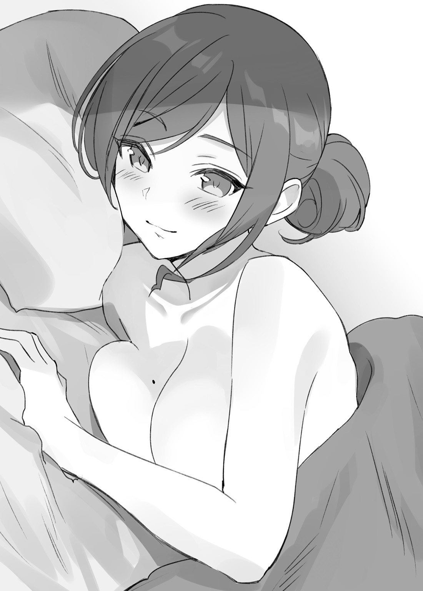

「ねぇねぇTakashiくん。せっかく二十歳になったんだし、そろそろ私たち同居とかしてみない？」
大事な決断を迫られる時はいつも突然で、それでいて考える時間すらも与えてくれない。
ずい……ずいっ……と大人な匂いを漂わせながら、甘い声で俺を誘惑してくる一人の女性。真紅の髪を頭の横で束ね、たわわに実った胸の谷間を惜しげもなくみせる胸元の緩いＴシャツ姿の美女。薄手のシャツから薄っすらと黒い下着が透けていることなんて気にも留めない。
口元を微かに濡らし、妖しく笑みを浮かべる彼女の横には数本の空き缶。ハイパードライに凍結など、有名どころの酒缶がゴロゴロと転がっている。そして彼女の手にも檸檬館。
「Kureha先輩、そろそろお酒じゃなくてジュース飲みましょう？ ほら、先輩の大好きなミスターペッパーありますから」
真紅の髪の美女改め、Ootani Kureha先輩から飲みかけの檸檬館を取り上げ、その代わりに彼女の好物を持たせる。
が、既に数本のお酒を空にしてしまっているKureha先輩から、いくら好物といってもお酒を取り上げたのは大失敗だったみたいだ。
「同居とお酒、どっちが大事なの!?」
突然、Kureha先輩が訳のわからないことを言い出した。
どっちが大事というか、強いていうなら先輩が大事。ただそれだけのこと。下手な答えを口にしてしまって、先輩を傷つけたくない。
「いいですか、Kureha先輩。俺たちはまだ子供です。おいそれと同居を決めていい立場じゃありません」
「私、二十一。君、今日で二十歳。どっちも成人。やったね、大人だよ。さ、同居しよう！」
「先輩本当に二十一歳ですか!? 発想がだいぶ子供ですけど!!」
「何よ、酔っ払ってる私が悪いっていうのぉ？」
「いつもの状態も大概ですけど、今日は特に酷いです！」
「いつも可愛いだなんて、照れちゃうよぉ～。いっその事結婚しちゃう？」
「しません!!」
心の底から先輩を大事に思っている。なのにちっともKureha先輩に俺の意図が伝わらない。
何も先輩が悪いなんて言ってないし、二十歳になったからといって大人というのもまた違う。少なくとも酔った勢いで同居を超えてプロポーズしてきちゃう大学の先輩は大人とは思えない。
しかも、冗談とかではなく本気の表情で『結婚しちゃう？』と言ってきているのだから、なおさら大人とは程遠い。
たとえKureha先輩と俺が付き合っているとしても、だ。
「いいですか、先輩。俺は別に先輩と同居したくない訳ではないんです。ただ、親御さんが許すかどうかを心配してるんです」
「大丈夫大丈夫。彼氏が二十歳になったら同居を申し込むかもって親には伝えてあるから」
「緩すぎませんか、先輩の家族……」
Kureha先輩が家族に俺の事を『彼氏』と紹介してる事に嬉しさを覚える反面、彼女が家族に伝えている内容が全く大丈夫じゃない為、心配せずにはいられない。
「むっ、私の心の鍵はそう緩くないわよ！」
「緩いですよ！ 緩すぎです！ 付き合った途端に心の南京錠ドロドロに溶けてるじゃないですか!!」
「それはTakashiくんの心が熱すぎるからだよ～」
「ダメだこの先輩、早くなんとかしないと」
話の通じない先輩の大丈夫じゃなさにも、心配せずにはいられない。
「……嫌いになった？」
「なってたら先輩のコントに付き合ってませんよ」
「やった～。さっすが私の見込んだ男～！ いよっ！ ジュノンボーイ!!!」
「それはジュノンボーイを軽んじすぎでは!?」
デレデレと蕩けた表情から、うるうると不安げな表情。そして再びデレデレの表情。
コロコロと切り替わっては戻るKureha先輩の様子に、俺は嫌いになるどころか彼女を一層好きになってしまう。
呑んだくれだし、後輩の俺に甘えっぱなしだし、かといって他の人の前では隙なんて見せない美しい女性だし、でもその裏ではメッセージアプリで俺に『会いたい会いたい……』と送ってくる。
振り回し放題のKureha先輩に俺は魅了されてばかりだ。
今日だって、Kureha先輩から俺の二十歳の誕生日を祝いたいと言われて内心ドキドキしていたのだ。まさか、一人で酔っ払った挙句に同居の話を持ち出されるなんて。
……ワンチャンあるのではと期待していた俺の気持ちを少し返してほしい。二十歳になった記念日にそのままベッドに―――。
「～～～～!!」
あぁ、ダメだ。思い出したら一層恥ずかしい。いくら先輩が好きだからって、考えていいこととダメなことくらいはある。さっきのは、絶対にダメなやつだ……っ！
悶える。脳内に浮かべていた先輩の蠱惑的な表情に悶える。そして、欲望のままにその先のことまで考えてしまった自分の欲深さに恥じて悶える。
悶えて悶えて、羞恥に染まる。隣にいる先輩が見えなくなってしまうまで。
「ど、どうかしたの!? まさか、本気で嫌いになっちゃったの!!?」
「え？」
「え、じゃなくて。さっきから頭抱えてるから、やりすぎて嫌われちゃったかなって……」
まさか、先輩に心配させてしまうなんて思いもしなかった。頭を抱える俺を覗き込む先輩の顔は、鬼気迫るくらいに悲愴感に満ちていた。
嫌われちゃった？ 悲しそうな表情で発せられた恋人の言葉に、胸がギュウッと締め付けられた。
俺は何をしているんだ、と。好きな先輩を傷つけて何をしているんだ、と。
「あ……違います！ 嫌いになんてなったりしませんよ！ ただちょっと、早とちりしたなぁって思ってただけですよ!?」
初めの言葉が詰まってしまうくらいの痛みを追い払いながら、俺は先輩の言葉を否定する。悲しい言葉を全力で、否定する。
嫌う？ どうして？ どうして、先輩を嫌わなきゃいけないんだ？
俺は、先輩との時間がどんなことよりも好きなのに。
「本当に？ 本当に嫌いになってない？」
「嫌いになんてなりませんよ。俺は……先輩にからかわれるのが心地好くて、もっと先輩とおふざけしたくて、告白したんですから」
「そう？ それなら、よかった……」
安堵していつもの柔らかな表情に戻るKureha先輩。そんな恋人をみて、俺も安堵する。
よかった。想いが少しでも伝わったのなら、それだけで満足だった。
満足して、気が緩んで先輩に隙を与えてしまっていたことに気づきもしなかった。
「そういえば、Takashiくん。一つ聞いていい？」
「な、なんですか……？」
「さっき、早とちりしたって言ってたけど、いったいどんな早とちりをしたのかなぁって、気になっちゃって」
「……っ!?」
先輩は聞き逃してはいなかった。悲観しながらも、キチンと揶揄いのネタも探していた。
かなわない。本当に、この先輩にはかなわない。すっかりいつもの調子に戻った先輩の、ニンマリ笑顔には本当にかなわない。今日は特にかないそうもない。
いつもと違って、今日は特別な日。俺の二十歳の誕生日であり、同居の申し込みまでされてしまった日。
いつにも増して、ドキドキしている。こういうときは決まって、良くないことが起きる。
「すみません、それだけは絶対に言えません」
「そう言われると、ものすごく気になるなぁ～」
「だ、ダメなものはダメです。先輩だって、知られたくないことの一つや二つあるでしょ？」
「Takashiくんが知りたいなら、いくらでも話せるわよぉ～？」
「それは……っ!!」
「あはっ、顔真っ赤。やっぱり、Takashiくんはかわいいね」
ほら、やっぱり。少しでも反撃しようものなら、とびっきりの甘い声でメロメロにされてしまう。
かわいい。そう言われながら、顔のふちを人差し指の裏で撫でられていく。飲みかけの檸檬館を片手に、愛でられていく。
これがたまらなく、心地好いから本当に困る。先輩のことがもっと好きになってしまう。本当は、先輩に俺をもっと好きになってもらいたいのに……。
「とにかく、先輩の家族にもう一度確認してください！ 話はそこからです！」
「じゃあ、今聞いてみるね～」
「はい、ぜひそうしてください」
どうせ、両親に怒られて終わるだろう。俺がそう決め込んでいる中で、Kureha先輩が家族に電話をかける。
そこに、さっきまで悲愴感にひしがれていた先輩はいない。そして、からかいたがりの先輩もいない。ただただ真剣な、一人の魅力的な女性、Ootani Kurehaが俺の横にいるだけ。
「あ、もしもしお母さん？ この間言ってた同居の件なんだけどさ、今ちょっといい？ うん。そう、前言ってた彼氏とのやつ」
先輩が掛けた相手は母親。先輩の母親らしいのんびりとした声が漏れて聞こえてくる。どんな言葉を話しているかは分からないが、先輩の表情を見るからに良い言葉なのだろう。
先輩と母親の良好そうな関係にほっとしてしまう。
それはそれとして、本当に同居の事を前に話していたようで、家族関係が心配になってしまうけれど。
「……ん？」
先輩の電話の様子を見て一人考えごとをしていると、Kureha先輩がこちらに甘い視線を向けてきながら、シャツの裾をクイクイと軽く引っ張ってきた。
で・ん・わ。
お酒に濡れた唇が、大きく動いて俺にそう伝える。開いて、一旦閉じてまた開く。再び開いた時に、小さな破裂音が聞こえた気がしたけどきっと気のせいだろう。
先輩の唇があまりに艶やかで『ンパ……っ』と鳴って欲しかっただけの願望に違いない。
今日の俺は、少し欲に塗れてる。
恋人と過ごす誕生日に浮かれる自分を自覚しながら、俺は大きく首を縦に振った。
「分かった。ちょっと待ってて～。……Takashiくん、お母さんが最後に伝えたいことがあるんだって」
通話中のスマホを差し出してくる。画面には『お母さん』の文字。
「もしもし、お電話替わりました、Suzuki Takashiです。Kurehaさんとは、一年ほど前からお付き合いをさせていただいております」
恐る恐る耳を添えて挨拶をする。失礼のないように。少しでも先輩の恋人としてふさわしいように。
『あら、意外としっかりしてるのね。てっきり、もっと……』
「もっと……？ もっと、どうかしたんですか？」
『いいえ、なんでもないわ。今更、口にすることでもないもの』
「そう、ですか」
直に母親の声を聞いた初印象は、温かみだった。Kureha先輩を彷彿とさせるのんびりとした口調。だけど、それだけではなくキチンと母親の一面を感じさせる。そんな印象。
そしてそれは、本題に入ってからも続いた。
『あ、そうそう。同居の件だけど、Kurehaがその気なら全然構わないわよ』
「そんなあっさりと……」
『これでも私なりに考えたのよ？ 成人しているとはいっても、かわいいかわいい娘に変わりはないからね』
無言。何も言えなくなる。いや、言ってはいけない気がした。真剣な言葉に差し込む言葉が俺にはまだ無いから。それほどまでに、のんびりしながらもKureha先輩を大事に思っていることが伝わってくる。
『でも、娘があなたの……Takashiさんのところがいいなら、私は喜んで送り出すわ』
「あ、ありがとうございます……っ！」
『ふふ、どういたしまして』
感謝せずにはいられなかった。Kureha先輩と俺との関係を認めてくれた母親の決意に、感謝せずにはいられなかった。
『あぁ、でも気をつけておいてね？』
「気をつける……？ 一体何を……」
『Kurehaに何かあったら、お父さんがどんなになるか……ここまで言えば、しっかりしてるあなたなら分かるわね？』
「は、はい……っ」
生唾を飲み込む。お父さん。Kureha先輩のお父さん。先輩自らが、厳しいと口々に不満を漏らす相手。
下手なことは出来ない。瞬時に、俺は察した。今、釘を刺されているのだ、と。
『ちなみに私としては、大歓迎だからね～』
母親の口から公認の言葉が告げられるも、そんなことが気にならなくなる特大の釘を。
『それじゃあ、Kurehaによろしくね～』
変わらず、のほほんとした声のままプツリと電話が切られた。
「お母さん、なんだって？」
「えっと……娘をよろしくって……」
「さっすがお母さん。話が早くて助かるなぁ～」
スマホを返すと、不安げに結果を尋ねる先輩。よく見れば、ギュッと俺のシャツの裾を引っ張り続けていた。
いくら家族に話を通していたとしても、それが結果に伴うとは限らない。そんな不確定要素が先輩の表情を曇らせていた。
もちろん、結果を伝えたらすぐに晴れ晴れとした表情に様変わりしたけれど。
様変わりというか、元通りのいつも通り。先輩には元気でいてもらいたい。
「好きです、先輩」
「私は愛してるわ」
「俺だって、先輩のこと愛してますよ」
「本当に？」
「本当ですよ」
「ふふっ、知ってる。たっくさん、知ってる」
「～～～っ！」
今日は、甘い誕生日を期待した俺の二十歳記念日。そんな日に、俺は同居の親公認を貰ってしまった。お酒すらも飲めない俺にはあまりにも早すぎるサプライズで……。
「というわけで明日から同居よろしくね～」
「何がという訳ですか！ いくらなんでも明日からは早過ぎです！ というか、荷物とかどうするんですか？ 流石に今日明日で準備できるとは思いませんけど」
「そこは問題なしよ！ 今日のために色々と準備進めてきたから！」
「問題大ありですが!? というか俺が断ったらどうするつもりだったんですか!!?」
「その時は酔わせてでも結婚する言質をとるまでよっ！」
「いくら俺が今日からお酒解禁だからって言ってもそれは卑怯では!?」
「だって、君ともっと一緒にいたいんだもん」
「うっっ……」
可愛い顔とそれに似合わぬセクシーなポーズで俺に訴え掛けてくるKureha先輩。そんな恋人に俺は動揺せずにはいられなかった。
ヘラヘラと笑っていると思ったら、自信満々のドヤ顔。そして悪い顔に胸元の緩いＴシャツ姿での前屈み。止めにちょっぴり頬を膨らませての『一緒にいたい』とラブコール。
こんな怒涛の攻めをしてくる恋人に動揺せずにいられるだろうか。ドキドキせずにいられるだろうか。俺にはできない。
ついさっきまで、彼女の弱気な一面を見てしまっていただけに尚更……。
「にへへ、照れてるTakashiくん可愛いねぇ～」
「先輩が揶揄うからですよ……」
Kureha先輩への想いが表情へと溢れ出し、彼女にバレてしまう。いや、そうでなくても俺の気持ちなんてとっくに先輩にバレている。
バレてしまっているからこそ、先輩は余計に俺を揶揄ってくる。一つ年上の彼女、Ootani Kurehaとはそういう困った人物なのだ。
そんな先輩が、好きでたまらない。
「私は全部本気で言ってるんだよ～？」
「言質の件ですか？」
「本気」
「酔わせて……」
「もちろん本気」
「…………」
「結婚も、君となら本気で出来るよ。心配しないで」
「むしろ今から結婚を気にしてる先輩を心配せずにはいられないですよ……」
俺が質問せずとも何を聞きたいか分かっているかのように、質問にサラッと答えてくる。
それどころか、最後に至っては質問しようかと悩んでいる時に答えられた。しかも、先輩の目は本気のソレ。いくらなんでも気が早すぎである。
「じゃあ、したくない？」
再び潤んだ目で俺に訴えかけてくるKureha先輩。この目に俺は滅法弱い。
あぁ……もう……本音が漏れ出てしまう……。
「したくなくないから……困ってるんじゃないですか……」
自分でも気が早いと思っていてもやっぱり気持ちは素直で、Kureha先輩と一緒に苦楽を共にする夢を思い描いてしまうことがある。
仕事は疎か、卒業できるとも、ましてやKureha先輩の気が変わらないとも限らないのに、夢に見ては『考えるの早過ぎだろ、俺』と一種の自己嫌悪に近い状態に陥ってしまう。
それだけの思いを持っているからこそ、Kureha先輩の本気の目に動揺せずにはいられなかった。
もっとも、Kureha先輩がどこまで本気なのか、未熟な俺にはまだ把握できないのだけれど。
「そうやって私の事で悩んでくれる君だから結婚したいと思っちゃうんだよ～？」
「で、その前段階として同居と？」
「正解っ！」
「いくらなんでも突拍子が過ぎますって……！」
コロリコロリと変わる表情。その合間に俺から奪い取った檸檬館をグビグビと飲み進めていく真紅の髪の美女。
酒に濡れた彼女の唇はいつも以上に色っぽいのに、話の内容は色っぽさのかけらも無い突拍子の無いもの。
「私の中では結構じっくり考えたんだけど、やっぱり相談した方がよかった？」
「心の準備のために一言相談はして欲しかったですよ、流石に。今日明日からはい、同居っていうのはいきなり過ぎますって……」
同居の話は先輩なりの誕生日サプライズなんだと思えるけれど、いくらなんでもサプライズの規模を超えている。
もちろん嬉しく無いわけではない。夢で先輩と結婚するのを見てしまっているのに、今更自分の心を誤魔化すつもりは無いし、先輩を前に誤魔化し切れる余裕もない。
ただ、男子大学生としてみれば彼女を迎え入れるには一つの問題点があった。
「さっきも言いましたけど別に先輩と同居したくないわけじゃないんですよ？ ただ、その……色々と片付けるものがですね……」
「大丈夫だよ～。私、手伝うよ～」
「手伝われたら困るから言ってるんですけど……」
「そうなの？ 一体どうしてかしら」
言葉を濁した俺を目にして、少しばかり悩むKureha先輩。
出来ればそのまま気づかないで欲しいと思ったのも束の間。
「あっ……！」
どうやらピンときてしまったようだ。
いや、まだだ。まだ先輩がソレを口にしなければ『実は何も気づいてませんでした！』と言うことにもなり得る。そうだ、そうしよう!! そうであってくれ!!
「大丈夫だよ！ 私はTakashiくんがどんなにアブノーマルな本を持っていても引いたりしないから！」
もはや願望でしかない俺の思いは、Kureha先輩の満面の笑みから発せられた言葉によって、見事に打ち崩されたのだった。
しかも、まさかエロ本の在処までバレるなんて思ってもみなかった……。
「おっぱい特集？ よし。褐色全集？ ダメ。太もも天国？ まぁいいでしょう」
今現在、先輩彼女によるエロ本チェックの真っ最中。それを黙って見届けることしか出来ない俺はなんて惨めなのだろうか。
こんなことにならないように、エロ本を厳重に隠していた。そう、厳重に……。
揶揄いたがりの先輩にエロ本を見せるのはとても危険だと分かっていた俺は、入念にチェックを重ねて彼女が部屋にくる今日に向けて、絶好のエロ本隠し場所を用意していた。
そこがどこかと言えば、ベッド裏の空洞である。
もちろんただそこに入れるだけではすぐにバレてしまうと考え、そこに空洞がないかのように偽装壁を作った。一目見ただけでは、ベッド裏に空洞があるとは思えないくらいに精巧な偽装壁だ。建築学科の親友に諸々のことを任せたため、そこは折り紙付きだ。
更には定番のベッドの下には使わなくなったケーブルが入った箱を入れておき、本棚には参考書エリアの裏に更に参考書を挟み込んでフェイクを仕掛けるなど、徹底的にベッド裏の偽装壁からKureha先輩の意識を離そうと試みた。
……まさか、そのどちらにも見向きすることなくベッド裏の偽装壁に手をかけるなんて。
「全く、別に隠さなくたっていいじゃない。変にトラップ仕掛けてるから見つけたくなっちゃうのよ？」
そう言ってKureha先輩は偽装壁を剥がした先にあった俺の秘蔵のエロ本を仕分けていく。
先輩の左側には先輩が好意的な反応を示したもの。右側には逆に好ましくない反応を示したもの。
「赤髪ヒロインとむふふしましょう？ いいでしょう。青髪ヒロイン？ ダメ、絶対許さない」
次々とエロ本のタイトルを読み上げては左へ右へと本を仕分け続けるKureha先輩。その様子を俺は正座して見守っていた。
ただそうすることしか出来ない。Kureha先輩という紅髪のセクシー美女の恋人が居ながら安易にエロ本で満足してしまう俺には。
「……よし、こんなものかな。Takashiくん、こっち向いて？」
エロ本の仕分けが終わったのだろう、Kureha先輩が俺の名を呼ぶ。その声に応じるようにゆっくりと俺は顔を上げて先輩の顔色を窺ってみる。
「……なんで、笑ってるんですか？」
目の前には意外にもご満悦な様子のKureha先輩。てっきり怒っているのだろうと思っていた為、彼女の様子に少しばかりの恐怖を覚える。
けれど、そこにいたのは紛れもなくいつものKureha先輩だった。
「Takashiくんってば、そんなに私とえっちしたかったの～？」
こんな突拍子もない事を言うのはいつものKureha先輩でなくてなんなのだろうか。
「えっと……一体なんの話ですか？」
「だっておっぱいだったり太ももだったり、キミがしょっちゅう視線を落とす所じゃない」
「……一体なんの話ですか!!?」
本気で先輩がなんの話をしているのか見当皆無だ。俺が先輩の胸や太ももを眺める事とエロ本が彼女のいう『えっち』につながるというのだろうか。
確かに先輩の魅力的な胸元や、むっちりとした太ももに視線が行ってしまうのは否定できないがそれとこれとは話が別だろう。
いつもの突拍子もない先輩に俺は内心振り回されていると、またも変な事を言い出す。
「だ～か～ら～、こっちの本を私に見立てて自分を慰めていたんでしょ？」
「ノーコメントで」
「黙秘権はないからちゃんと答えてね～」
どうやら逃げ道はないようだ。先輩というものが居ながらエロ本で満足していた俺への報いなのだろうか。
だからと言って、エロ本を我慢して先輩に直接アプローチ出来たかと言えば、無理だ。
きっと揶揄いながら上手くあしらわれて終わってしまう。
だって、付き合って一年近く経つのに未だにキス手前まで。いい雰囲気になっても、『まだダーメ♡』と言って唇と唇の間に人差し指を割り込ませてきて純情を掻き乱してくる。
そんな先輩に『エロ本じゃ我慢できなくなったのでエッチなことしてください!!』とは言えるはずもない。
当然、エロ本を先輩に見立てて一人寂しくやってたなんて報告もできるはずがない。
「ちなみにちゃんと答えてくれたら、そのうち本に描かれている事してあげてもいいけど？ もちろん捨てたりなんてしないから安心してね？」
「しました。ほぼ毎日自分で自分のを慰めていました」
「そういう潔いキミも私は好きだよ」
「ありがとうございます」
先輩自らエッチなことをしてくれると言うのであれば話は別だ。
性欲の前に俺は吹っ切れてしまった。
そうだよ。生理現象なんだから仕方ないじゃん。俺だって健全な男子大学生だ。エロ本のお世話になったっていいじゃないか。しかもそれが、恋人からの許可なのだから尚更だ。
「で、こっちの残った方だけど」
「あ、はい」
さっきまでの話は左側にあった本での話。
そして今、Kureha先輩が指差しているのは右側の、先輩が好ましくない反応をした本たち。
けれど、今の機嫌のいい先輩ならきっと好ましくない本でも許してくれるだろう。俺はそう確信している。だって、今目の前の先輩はいつになく笑顔なのだから。
「今からコンロで燃やして？」
「……今、なんて？」
「聞こえなかった？ 私に見立てる要素がない本を今から燃やし尽くしてねって言ったの」
「もしかして、結構怒ってます……？」
変わらずニコリと笑うKureha先輩。その反応が全てを物語っていて、それでいて今までで一番怖かった。
「はい。仰せのままに」
今日は俺の誕生日。そしてエロ本所持数が半分になった日でもある……。
「さて、一通り掃除も終わったし、改めてお誕生日おめでとう」
「あ、あはは……ありがとうございます……」
コンロで燃えて飛び散ったエロ本の残骸を集め終えたKureha先輩と俺はくたびれた様子でリビングのクッションに座り込む。
先輩の目論みでは上手く焼き燃やせると思っていたらしく、まさかコンロの火口からの風で吹き飛ぶとは思いもしなかったようだ。先輩の慌てふためく姿が少し可愛く、思わず笑ってしまいそうになった。
とはいえ、エロ本を自らの手で燃やしたショックは大きく、しばらく立ち直れそうにない。神妙な表情を浮かべ、先輩からのお祝いの言葉も苦笑いで返すことしか出来ない。
そんな俺を前にしても先輩は先輩のままで、重苦しい空気の中にあっけらかんとした声が響き渡る。
「大丈夫大丈夫。私だってそう鬼じゃないわ。今度、お詫びのものを用意してあげる」
「お詫びって、例えばどういう……」
「え、私のえっちな自撮り写真集とか？」
「まさかの自作とは」
「ちゃんと印刷業者に依頼して、製本して貰うわ」
「そこまでしなくてもいいと思いますよ!?」
相変わらず先輩の考えが一切読めないが、少なくとも『先輩を想起させないものでは思い耽ってはダメ』というのだけはわかった。
先輩の不安は分かる。俺だって先輩が俺以外の男を頭に浮かべながら思い耽ってたら嫌だ。今回燃やすことになったエロ本たちは先輩の不安解消する為の生贄だと考えたら安い。
褐色や青髪の子にうつつを抜かさずにもっと先輩成分を補給すればなんてことない。
そう、先輩が揶揄ったりせずにスキンシップを取らせてくれればなんてことはないのだ。
先輩の不安を理解すると同時に、『果たして先輩は本当に俺の事が好きなのだろうか』と、今度は俺が不安になってしまう。
好きでもない相手に同居を持ち掛けるような軽い女性では無いと分かっているけれども、未だにキス手前までしかしてない身からしたら、『先輩の好きは〝ラブ〟じゃなくて〝ライク〟なのでは？』と不安を持たずにはいられない。
それはそれとして、印刷業者に依頼するというのは少しいただけない。業者で製本するということは、少なくとも業者には先輩の自撮りが見られてしまうということではないか。
先輩の、えっちな自撮りが。
それだけは阻止をしたい。Kureha先輩のえっちな自撮り写真の一から十まで誰の目にも見られたくない。先輩のちょっと過激なところは俺だけが知ってればいい。
まだ、自分の口から本人に伝えることなんてできないのだけれど……。
「とりあえず、Takashiくんもお酒飲んでみよ？ 初心者でも飲めそうなの買ってあるから」
「あっ、はい！ お手柔らかにお願いします!!」
あれこれ考えていると、気づいたらグラスを渡されていて元気に返事までしてしまった。
俺の悪い癖。流れを断ち切る事が出来ずに自分の言いたい事や伝えたい想いをなぁなぁに流してしまう。
全部なぁなぁだ。先輩に俺の事を本当に好きかどうかを確かめられず、キスしたい事も伝えられず、そしてその先の事も当然……。
せっかくの誕生日なのに少し自分を嫌いになる。生まれて初めての恋人と過ごす誕生日なのに、ズンズン気持ちが沈んでいく。
そんな状態から抜け出す為に俺は先輩から勧められたお酒をためらう事なく飲んでいく事にした。少しでも気持ちをハイにする為に。
「まずはカルピコサワー。度数が低くて飲み易い甘さだから初めてのお酒にオススメ」
「カルピコソーダみたいな感じですね！」
「まぁ、そのソーダをアルコールに変えただけだもの」
口の中に広がる甘い酸味。その後に広がる仄かな違和感。きっとこの後味がお酒、アルコールの味なのだろう。
思ったよりなんて事ない。むしろ、気持ちが昂ってくる。沈んでいた気持ちが、軽くなっていく気がしてくる。
この調子で、次のお酒を手に取り先輩のお酒紹介の後に一気に口に含んだ。
「続いて、チョーマの梅酒。定番中の定番のお酒だから味を覚えておいて損はないよ」
「自販機で時々見る梅おろしジュースみたいな味で結構イけますね！」
「そりゃ梅だもの」
鼻に直接入ってくる梅の強烈な香りと一緒に旨味が舌に広がっていく。カルピコサワーを飲んだ時に感じた違和感は無く、梅そのものの美味しさを味わっているようだった。
しかし、やっぱり飲んでいるものはしっかりとお酒で、ヒリヒリとした感覚が喉奥で疼いている。
それでも、自分が今感じたい『ハイな気分』にはまだ程遠い。結局俺は、用意された最後のお酒にも躊躇なく手をつけることに……。
「最後にコレ。やっぱり一度は飲んでおこう。アサヒのハイパードライ！」
「苦い……っ！ けど仄かに感じる旨味……。これはなんかクセになりそう……!!」
「いい飲みっぷり!! これは外で飲める日が近いかもね!!」
先輩の嬉しそうな反応とは裏腹に、俺は心の中で喜び満ちていた。頭がフワフワとする感覚。それでいて昂る気持ち。
求めていた『ハイな気分』にたどり着けた事を一人心の中で喜んでいた。
そんな独り善がりな喜びも束の間、視界が急激に歪む。
「あれ……先輩、イリュージョン覚えました？ ものすごくグニョグニョしてますよ？」
「ありゃ、やっぱり酔っちゃったか」
「ボクは酔ってましぇん!!」
「酔ってないって強がる人は大抵ダメだから。ちょっと待っててね、今お水持ってくる」
そう言って俺のそばから一旦離れようとするKureha先輩。そんな先輩のシャツの裾を俺は無意識に掴んでいた。
「あの、Takashiくん……？」
「先輩は……俺の事、本当に好きですか……？」
ハイな気分になっていたはずの俺の口から、女々しい言葉が飛び出ていく。
頭はフワフワしてるのに気持ちは逆に重苦しい。
「もちろん好きよ」
「本当ですか……？ 実はドッキリでしたとか、ないですか……？」
「無いわよ。ちゃんと君だけが好き。本気で君に恋してるわ」
「じゃあ……キスしてください……」
女々しい自分を止めたいのに、そんな俺の意思とは関係なく心の中で思っていた言葉がどんどん口から出ていく。抑えていた枷が目から流れ落ち、溢れ出た不安が先輩の耳に入っていく。
Kureha先輩はそんな俺をただじっと、真剣な目で見つめてくる。
さっきまでのヘラヘラとした表情とは一変した真面目な先輩が、お酒で濡れた唇を小さく開けて、ポツリと質問。
「……したいの？」
「俺は大好きなKureha先輩とキスがしたいです……。先輩は違うんですか？」
また本音が零れ落ちる。不安が零れ落ちる。
先輩ともっと、親密になりたいという気持ちが肥大する。それが、キス止まりというのが自分らしくて少し情けなくはあるんだけど……。
かといって、無責任なことなんて出来やしない。二十歳になったからといって、全ての行為に責任を持てるわけでもないから……。
『Kurehaに何かあったら、お父さんがどんなになるか……』
先輩のお母さんの声が反芻する。直後にお母さんからのお墨付きがあったけれど、その何かが恐ろしくて先に進めない。
先輩の父親が厳しいということは、先輩の口から何度か聞いていたから。
でも、それでも……キスくらいはもう、いいよな……？
待つ。先輩の返事を待つ。濡れた唇で何を答えてくれるのかを、期待しながら。その唇が肌に触れるのを、期待しながら。けれど、そういうときほど先輩は意地悪だ。
「もちろんしたいわよ。でも、今じゃないかな」
「それは俺の事が本当は好きじゃないからですか……？」
「そうじゃないの。ただ、酔っ払った勢いで大事なものをあげたくないの」
俺の隣に座り直し、自分のカバンから飲みかけのお茶をとり出すと、そのまま俺の口に押し当ててくる。
不意に口の中に入れられたお茶は、いつもより何倍も濃くて苦かった。先輩好みの甘いお茶と同じものとは思えないくらいに……。
「だから、キスは朝まで待って？ それまではちゃんとそばにいてあげるから、ね？」
「……はい」
お酒の酔いにとうとう打ち負けた俺は、そのまま沈むようにと目を閉じていき、そのまま誕生日を終えるのだった。妄想していた誕生日とは程遠い、苦味を噛み締めながら……。
「うぅ……頭いてぇ……」
カーテンの隙間から差し込む陽の眩しさに、深い底に沈んでいった意識が目を覚ます。
爽やかな朝の日差しとは正反対に、ズキズキと鈍く痛む俺の頭。普通の頭痛とはまた違う、反省を促す痛み。どうやら俺にはお酒はまだ早かったみたいだ。
「俺……いつの間に寝たんだろう……。ベッドにも入った記憶がないし……」
ガシガシと頭を引っ掻き頭の痛みを誤魔化しながら昨日の出来事を思い出そうとしてみるも、そこにお酒を飲んだあたりの記憶がなかった。
先輩に対しての不安な想いをかき消そうと、先輩にオススメされたお酒を片っ端から飲んだのは覚えているが、その後どんな話をしたのか、どんな気持ちでいたのか、全く覚えていない。
「というか、なんか懐かしい匂いがするな……これってキッチンの方……？」
ほのかに部屋中に漂う懐かしい匂いの根源に目を向けると、そこには昨日と打って変わってしっかり者のKureha先輩が立っていた。
昨日と同じ薄手のＴシャツなのに、キッチンに立っているだけで全く別人にすら思える。
「先輩……何してるんですか……？」
「ん？ 何ってそりゃ、朝食作りだよ～。特に酒飲んだ翌朝の味噌汁は格別」
「そうじゃなくて、帰らなかったんですか……？」
「初めてお酒飲んで酔っ払った男の子を放っておいて帰れるわけないでしょ」
「それは……そうかもしれませんけど……」
「Takashiくんだって、私がベロンベロンに潰れてたら介抱してくれるでしょ？」
「当たり前です。放っておけるわけないですって！」
「そういうことよ」
「あっ……」
普段はだらしない先輩でも、やっぱり大事なところではしっかりと大人で、ドキリとしてしまう。しかも、背中を向けたまま顔だけこっちに向けてくるものだから尚更。
視線を下に向ければ、むっちりとした太ももを露わにしているホットパンツ。薄い青色のジーンズ生地を押し広げた恋人のお尻にもまたドキッとしてしまう。
「それに約束しちゃったし、ね」
「約束……？」
「ううん、こっちの話」
また振り向きながら大人の表情をこちらに向けてくる先輩。真紅の髪が纏まったことでチラチラと見える整った耳がドキドキを加速させてくる。
しかし、そう長くドキドキさせてくれるほど先輩との日常は甘くない。
「とりあえず、顔とか洗ってきたら？ 寝癖、すごい事になってるわよ？」
「あっっ……！」
先輩の言葉に釣られて慌てて髪を押さえたが時は既に遅かった。手で触っただけで分かるくらいの爆発具合。俺が先輩の仕草にドキドキしている時、先輩は俺の爆発頭を見てクスクスと笑っていたのだろうか。
そう思うと、赤面せずにはいられなかった。
「もう、隠さなくてもいいのに。同居したら隠せなくなるんだし」
「今はまだ同居してません」
「なら先にTakashiくんのかわいい一面知っちゃった。やったね、お得だ」
「寝癖がかわいいとか、先輩のかわいい基準がよく分かりません」
「寝癖がかわいいんじゃなくて、君の慌てる姿がかわいいんだよ～」
俺の思いを露知らず、いつもの様に揶揄ってくるKureha先輩。
昨日の先輩の言っていた『同居』の話が消えてなかった事に少し安心を覚えながらも、俺もまたいつものように先輩の揶揄いに対抗する。
だけど、やっぱり俺が先輩の揶揄いに勝てることはない。
「……寝癖、速攻で直してきます」
「ゆっくりでいいからね～」
「超速で直します!!!」
結局、洗面所へと駆け込むことになった。
先輩ののほほ～んとした声を背に、気づけば俺はいつもの様にニヤニヤしてしまう。
こんなんだから先輩に揶揄い続けられるのだろうと分かっていながらも。
鏡の前には黒髪の男子大学生。頭の中には紅髪の美女大学生。
「どう考えても釣り合ってないよなぁ……」
目の前の自分といつも隣にいてくれる恋人の容姿の差に、俺のコンプレックスが燻る。
目鼻立ちはしっかりしてるし、いわゆる『ブサイク』と言われるほどではないけれど、どうしてもKureha先輩と比べてしまう。俺は先輩と釣り合っているのだろうか、と。
先輩が容姿だけで人を判断するような人では無いと信じてはいても、気にしてしまう自分がいる。
それは自分が弱いから。先輩が俺を好いてくれてる現実が、いつか壊れて夢になるのが怖いから。
だったら、初めから釣り合わないと考えていた方が気が楽ではないか。
そう思って約一年が経った昨日、『同居』と『結婚』について先輩の口から聞かされた。
「しっかり、しないと……だよなぁ……」
先輩が本気で俺を好いている。『結婚』が本気か冗談か定かではないけれど、本気で俺の事を好きでいてくれる。そんな彼女を前に俺がいつまでも後ろ向きのままではいけない。
少しずつでも弱い自分を、心の弱い自分を強くしなければ。今からでも、そして『同居』した後も……。
そんな強い決意をしながら、髪を整え終えた俺は先輩の待つリビングへと足を運ぶ。
部屋中に広がる美味しそうな匂い。そしてそれを体現したような食欲が唆られる料理。目玉焼きにウインナー、千切りキャベツに豆腐の味噌汁。日本の朝ごはんがテーブルに並ばれている。
それを用意したのは紛れもない恋人のKureha先輩。そんな先輩の今朝、キッチンに立つ姿を思い出しながら俺は食事を始めた。
「なんか、様になってましたね、先輩の家事」
「そう？ それなら頑張った甲斐があったかな」
「家でよく手伝ってたとか？」
「お母さんに家事仕込んでもらったの。私がこうやって朝ごはんを振る舞えるようにね」
「そ、そうなんですね……」
きっと、それは『同居』を見据えての仕込みなのだろう。そう思うと、少し反応に困ってしまった。
『同居』が始まれば毎朝どころか、毎日今朝のような光景を見ることになると思うと、嬉しくて堪らない。その反面、きっと揶揄われると思い、喜び出すのを惜しんだ。
が、それすらも彼女にとっては想定済みだったようで、俺の反応を見るや否や顔を覗き込ませながらニヤリと笑って問いかけてくる。
「照れてる？」
「照れてません」
「本当に照れてない？」
「照れてませんってば」
「じゃあ私を見てよ～」
「それはちょっと、今は出来ません……」
「やっぱり照れてるじゃない～」
先輩の怒涛の攻めに、俺はついに陥落してしまった。
いや、可愛さと美しさを両立させるKureha先輩に顔を覗き込まれながら問い詰められて照れない男がいるだろうか。少なくとも俺には無理だ。
照れていないと強がっていても自然と表情はニヤけてしまうし、私を見ろと言われても見れる訳がない。きっと、いや間違いなくもっとニヤけて、さらに先輩から揶揄われる事になる。そう思って顔を逸らしてみても、結局揶揄われてしまった。
いつまで経っても揶揄いを止めないKureha先輩に俺は別のアプローチを仕掛ける事にした。
「と、ところでさっき言ってた約束って……？」
「あ、話逸らした。もー、照れたのを隠さなくてもいいのに～」
「うっ……」
「まぁ、そういうTakashiくんが私は好きなんだけどね～」
無理矢理話題を逸らそうとしている事を見抜かれるどころか、トドメにまた揶揄われる。
俺はきっとこの先、先輩に揶揄われ続けるのだろう。不思議とそれを嫌と感じない自分がいる事に今更ながら気がついた。
そんな俺の気付きを打ち消すような真面目な声が先輩の口から聞こえてくる。
「その様子じゃあ、昨日酔ってたときのことは覚えてないわよね」
「……ごめんなさい」
「ううん、謝らないで？ むしろ謝りたいのは私の方。色々と我慢させてたみたいだから。ごめんね、揶揄って色々ともどかしい思いをさせて」
「それって……」
「昨日、酔った勢いで君が教えてくれたの」
思わず謝ってしまったが、先輩は真面目な声とは裏腹に表情はとても穏やかだった。
それ以上に先輩が最後に放った言葉が気になった。
―――酔った勢いで君が教えてくれたの。
俺は昨日、一体何をしたんだろうか。酔って、先輩に何を言ったのだろうか。どこまで、心の中の不安を語ってしまったのだろうか。
知られたくなかった事を自分の言葉で説明してしまったことに恥ずかしさを覚えると同時に、真剣に俺の事を心配してくれる先輩に愛おしさを覚えてしまう。
「君を揶揄うのは多分これからも止められないけど、心の底から好きなの。だからこそ、ずっと我慢してたの。嫌われたらどうしよう。尻軽だと思われたらどうしようって」
「そんなこと思うわけ……っ！」
「そうだよね。うん、分かってた。そんな君だから、好きなんだもの」
俺はさっきまでとは違った理由でKureha先輩の顔を見れなくなってしまった。
照れ隠しとは違う。先輩があまりにも愛おしく見えてしまい、これ以上見ていると理性なんて吹き飛んでしまう気がして顔が見れないのだ。
けれど、大事な決断を迫られるときはやはりいつも突然で、考えさせてくれる時間すらもそう与えてくれない。
「ねぇ、しよっか」
「するって、何をですか……」
「もちろん、キスよ」
俺の返事を聞くまでもなく先輩は立ち上がり、テーブルの向かいにいる俺の顔を両手で優しく包み込む。
「やっぱり寸止めですか？」
「しないわ」
「間接キスの方ですか？」
「ダイレクトキスよ」
「……鼻と鼻―――」
「マウストゥーマウス」
うじうじと俺が質問してる中、先輩は俺の唇を親指でプニュプニュと押して遊んでくる。
チラリと先輩の顔を見てみれば、唇は瑞々しく瞳は熱っぽい。そこに揶揄い上手の先輩は居らず、代わりに恋する乙女が宿っていた。
そんな先輩に、俺は何度目かの恋をする。
「質問はもうおしまいかしら？」
「俺、初めてなのでその……お手柔らかに……」
「ふふ、分かったわ。初めては優しくしてあげる」
ニコリと微笑んだ先輩の唇はみるみるうちに俺の唇へと近づいていき、やがて優しく触れ合った。
優しく触れ合うだけのキスなのに、それは今まで想像してきた先輩へのあんな事そんな事よりも、濃密なものだった。それがたとえ、味噌汁の香りのするキスだとしても。
◇閑話◇
「はぁぁ～、とうとうやっちゃった～～っ！」
Takashiくんの部屋を出て、人気のないところで赤面悶絶。
今までずっと我慢してきたキスを、軽々しい女だと思われたくなくて我慢してきたキスを、二十歳の誕生日記念として捧げてしまったことに今更ながら自覚する。
自覚して、認識して、体の火照りを感じて、本気でTakashiくんのことが好きなんだと何度目かの再認識をする。
大好きな彼のことを頭に思い浮かべる度に、またキスがしたくなってきて堪らない。
かれこれ、三度目。部屋を出た直後。彼の住むアパート近くの交差点。そして、駅商店街の裏路地。度重なる確認をしてしまう。
私の心が導き出す答えは変わらない。変わることなんてなかった。
好きなんだから仕方ないよね。
たとえ、お酒の勢いでキスしたとしても、私から彼に送る想いが変わることも薄まることもない。
いや、むしろお酒があったからこそ、ようやくキスにたどり着けたんだ。
そう考えると、お酒の力を借りるのも悪くないのかもしれない。
「……うん。考えても変わらないし、早く帰ろっと！ 早速、同居の準備しないとだよね！」
気合を入れると共にサイドテールを解く。いつもの外行きの様相に戻して帰路へと就く。
「こんな時間に、美人が一人……わんちゃんあるか？」
「ばっか！ 相手もいないのにこんな時間に駅にいるわけないだろ！」
「そりゃそうだよなぁ……。チッ、相手が羨ましいぜ……」
周りのざわつきなんてどうでもいい。下劣な考えだけで、私を見ている男性になんて興味ない。魅力的になんて思えない。
私が好きなのは真面目で、でも時々可愛らしい一面のある。そんな、男性。
もっとも、そうなったのは、ここ一年……サークルの新歓でポツンと孤立している真面目っ子を見てからだけど、ね。
「あ～、早くTakashiくんと住みたいなぁ～」
ポツリと零れる願望。一緒に住んで、一緒に起きて、一緒に大学に向かう。先に帰ってきた方が夕食の準備をして、待ち構える。当然、食事も一緒。
食事だけじゃない。晩から朝まで、ずっとイチャイチャすることだって出来る。昨日みたいなことが、これから毎日できるかもしれないのだ。
今すぐには無理。Takashiくんからそういわれてしまっても、想いはどんどん加速していくばかり。
明後日なら？ それとも一週間後？
待ち遠しさを胸に、次のキスを楽しみにしながら、私は帰りの電車に乗り込んだ。
俺の誕生日から数日が経ったある日の事。俺はいつもの様に『今日も遊びに行くね！』と送ってきた先輩を迎え入れるべく部屋を掃除しながら待っていると、玄関のチャイムが鳴り響いた。
「Takashiくーん、鍵開けてもらってもいい？」
「いいですけど、何かあったんですか？」
「今日はTakashiくんに開けて貰いたいな～、なんて思ってね」
「そういう日もあるんですね」
「あるんだよ～」
部屋の合鍵を常備しているはずの先輩の珍しい行動に違和感を覚えつつも、俺は何の抵抗もなくドアの鍵を開ける。外で待っていたのはいつものKureha先輩と見慣れない大荷物。
「えっと、先輩……これは……？」
「え？ そりゃもちろん、Takashiくんのお部屋で同居する為のセットだよ！」
「そんな『当たり前でしょ！』みたいな勢いで言われても……」
先輩が持ってきた大荷物は二つ。一つは衣服やら化粧道具などのKureha先輩のみが使うもの。そしてもう一つがペア食器と先輩の母親からの手紙。
「……いきなりすぎません？」
「そういうものよ、人生というのは」
「せめて日付くらい教えてくれません!? 心の準備とか全くできてないんですよ!!?」
「予知能力を人間に授けなかった神様を恨むことね」
「先輩自身に文句言っているんですけど!!?」
「一体私が何をしたというのかしら？」
「全く心の準備させてくれなかったじゃないですか！ 昨日だって遊びに来てたのに今日の事言わずに、キスの事で揶揄って帰ったし！」
先輩はいつだって勝手だ。同居の話を持ち出してきたり、先輩自身が色々と抱え込んでいることを隠してキスを拒み続けてきたり、かと思えばこの間の朝食にキスをしてくるし。
今日だってそうだ。同居の話は知っていてもそれがいつからだとは聞かされていない。聞いても『んー、いつだろうね～？』と誤魔化されてきた。
しかも、俺が怒っているのにもかかわらず先輩はドヤ顔やら惚け顔をして、俺の話に身が入っている気が全くしない。
同居の話を持ち出されたあの日に、今すぐには無理とわがままを言った俺への当てつけだろうか？
いや、そんなわけないか。先輩が俺に当てつけをするとしたら、もっと刺激的だ。
むしろ、俺のヤキモキした反応を見て楽しんでいるのでは、と疑ってしまう。
「だって、初めて君とキスした時の反応を思い出したら、ついね？ あの日は目を蕩けさせてキスの余韻に浸って、生返事ばっかりだったじゃない」
ニコリと口角を上げて言う先輩を前に、そう思わずにはいられなかった。
この間の部屋着用の緩いＴシャツとは違い、かわいらしくもちょっぴり小さい白シャツにかっこよさを醸し出した黒のレザージャケットを羽織った先輩。
しかし、そのかっこよさをよく見てみれば胸元や腰周りがぴっちりとしていて、先輩の元々持つセクシーさが強調されているではないか。
かわいらしさ、かっこよさ、セクシーさ、そしていつもの揶揄い顔。俺を動揺させるのに十分過ぎる組み合わせだった。
「そりゃあの時は人生初めてのキスだったわけですし……」
「で、終わったら終わったで、悶々としちゃったんだ？」
「して……ませんっ！」
「誤魔化さなくたっていいのに～。私は悶々としたよ～？」
「……そうなんですか？」
「あ、えっちな顔してる～。このすけべ～～」
「なっっ……！」
また揶揄われてしまった。しかも図星を突かれる形で揶揄われてしまったのだから、いつも以上にダメージがでかい。
いや、そもそもKureha先輩とのキスで悶々としないはずがないのだ。一目見ただけで大勢の人を魅了してしまうプロポーションに、度々揶揄ってきてもどこか憎めない明るい性格。
そんな恋人の口から自分とのキスの後悶々としたと聞かされれば、えっちな顔になってしまう。ならざるを得ない。
普段はのらりくらりとしてる先輩がどんな風に悶々とするのか。どんな表情をしながら悶々とするのか。どんな艶っぽい声を出すのか。
先輩の事を考えれば考えるだけ、ドツボにハマっていく。
「とまぁ、冗談はさておき、今日まで言わなかったのは勇気が無かったからよ」
「勇気？」
「そりゃあ、私だって乙女だもの。いざ同居ってなった時に、君に変なところを見せて嫌われたくないんだよ？」
「ま、まぁそうですよね」
俺が甘い言葉に振り回されていると、突然真剣な表情に切り替わる先輩。
一瞬、先輩が何を言っているのかわからなかったが、やっぱり先輩もちゃんと人間で女の子で、先輩なりに思い詰めているものがあるのだと実感する。
それに俺だって見られて困るものはこの間のエロ本以外にもまだある。それは先輩も同じだろう。物質的なものに限らず、弱いところや心の奥にあるものは出したくないものだ。
俺は酔った勢いで、先輩は初キスの直前に少し漏れ出てしまったけれども。
けれど、心の奥底にあるものは同じなのだろうとも確信する。
「でも結局、君と長く一緒にいたいって気持ちには勝てなかったよ。自分の変なところを見られるよりも君の変なところを見たい気持ちが勝っちゃった」
揶揄う時の笑顔じゃない。本気で恋するKureha先輩の笑顔が俺に向けられる。
そんな先輩の笑顔に俺は初キス以上の悶々とした気持ちに襲われるのだった。
あぁ、先輩にはやっぱり敵わないや……。
そう心の中で呟きながら。
『自分勝手な娘ではありますが、末長く一緒に過ごしてあげて下さい』
先輩の母親からの手紙にはこう書かれていた。
「……重い」
何というんだろうか。そこはかとなく『愛娘と別れたら許さないから』と言われてる気がしてならない。
別に先輩と現状別れるつもりはないけれど、俺が先輩に飽きられないか心配だ。Kureha先輩は俺と違って人気者だから。
先輩の母親の気持ちは分かるけども、俺に先輩を引き留める自信はあまりない為、手紙の内容に素直に頷けなかった。俺の心情を読み取ってなのか、ポツリと愚痴をこぼす。
「全く、お母さんってば余計な事書かなくていいのに……」
「それだけ愛されてるって事ですよ」
「それは分かってるんだけどね。でももしTakashiくんのプレッシャーになったらと思ったらちょっと、ね？」
「先輩……」
いつもの俺を揶揄ってくる先輩が嫌いというわけではないが、目の前にいる大人な雰囲気の先輩には流石に敵わない。嫌いになるどころか、プレッシャーに感じるどころか、先輩に飽きられないように頑張らないと、という気になってしまう。
つまるところ、Kureha先輩の事がもっと好きになってしまった。
何度も何度も先輩の動作一つ一つに胸をときめかせてしまう自分。そんな俺だからこそ、先輩は揶揄うのをやめないのだろう。
先輩の揶揄いに嫌悪感を覚えないのも、それだけ先輩の事が好きと言う事なのだろうか。
「さてと、しんみりした話はここまでにして……お酒飲もう!!」
「……切り替え早すぎません？」
あれこれと考えていると、先輩がパンッと勢いよく掌を叩く。
さっきまでの大人な雰囲気の先輩はどこへやら。二つの大荷物をリビングの端に置き、先輩は三人掛けソファーに腰掛けた。いつも通りの、見慣れてしまったダラけ姿である。
さっきまでの先輩へのドキドキを返してもらいたい。
そんな事を思っていると、ニヤリと口元を緩めながら先輩が俺に問いかけてくる。
「え？ もっとしんみりしていたい？ 私とラブラブしてくれないの？」
よく先輩の口元を見れば、レザージャケットに合わせる様に艶っぽく口紅が塗られていた。そんなところに気づいてしまえば嫌でも思い出す初めてのキスの感覚。
ふにゅ……と柔らかく、それでいて唇を離すときは少ししっとり……。
もちろんキスだけで終わるほど先輩への思いは軽くなく、柔らかさとしっとりさの先を求めたくなり先輩が帰った後の悶々とした時間を過ごした。
そして今も、先輩を感じたいと強く願っている。先輩を求めてしまっている。
それらの感覚の根幹にあるのが何かと聞かれれば、たった一つしかなかった。
「……ラブラブしたいです」
「すけべな君ならそう言うと思ったよ～」
「俺はすけべじゃないで―――」
「もしすけべだって認めたら、この間のキスの続きしてあげてもいいんだけどなぁ～」
「俺はすけべです」
「うんうん、素直なTakashiくんが一番好きだよ～」
先輩には大人な時でも、ダラけてる時でも、変わらず心を振り回されるばかりだ。しかも、それに心地よさを覚えてしまっている自分がいるのだから、もうどうしようもない。
それに、エロ本の一件があるんだ。今更、取り繕うというのも無理な話。
キスの続きをしてくれるというのなら、尚のこと……。
「ん～？ そんなに唇ばっか見て、どうしたの～？」
「……なんのことですか？」
「Takashiくんの熱視線で唇が火傷しちゃったもの。嫌でも気づくわよぉ～」
「見られるの、嫌でしたか!?」
「やっぱり見てたんじゃない。す・け・べ」
「～～～～っっっっっ!!?」
きっと俺はこのまま、先輩に心を揺さぶられて日常を過ごしていく事になるのだろう。
朝も昼も夜も、そして寝ている時も……。
それがまた、魅力的に思ってしまっている俺は徹底的に先輩に心を支配されているに違いない。視線すらも、そして純情すらも。
心をかき乱されながらも、先輩の隣に座る。心臓は、求めていることをされたわけでもないのにバクバクだ。
「それで、Takashiくんは何飲む？ 甘いのから苦いのまで一応一通り持ってきたけど」
「えっと……甘いので……」
「んふふ、甘いキスを御所望と」
「それは言ってないです」
ふわりと漂ってくる甘ったるい香水の匂いに魅了されながらも、俺は平静を保ちながら会話を続ける。
大人な服装に和やかな雰囲気、そして近くによれば脳髄まで蕩かすような甘い匂い。
「じゃあ、甘いキスは嫌？」
「……嫌とも言ってないです」
「そういうことにしといてあげる～」
―――止めに、先輩のイタズラな笑顔。
もう、俺の心はトロトロだ。
「じゃあ、私も甘いのにしようかな」
そう言って、先輩は一度ソファーを離れて、大荷物の中から缶チューハイを取りだして、また戻ってくる。
たった三動作の短い時間だと言うのに、それすらももの寂しく感じてしまった。
まだお酒は飲んでいないのにも拘わらず、視界が揺らぐ。心が揺らぐ。
「じゃあ、同居記念にカンパーイ」
カチーンと鳴り響くカンパイの合図。俺は刹那、揺らぎを抑え込む為甘い酒をトクトクと口の中に注いでいった。
もしかしたら、俺には先輩との同居は早すぎたのかもしれない。
そう、依然として悶々としたままの自分に問いかけながら。
「よーし、いい感じにお酒が回ってきたし、さっそくTakashiくん御所望のあま～いキスしちゃおうっか？」
「も、もうしちゃうんですか？ まだ心の準備が……」
「えー？ 私は乾杯した時から気持ち整えてたのに、Takashiくんはその気はなかったって事？ さみしーなー」
「そ、そんなんじゃないですよ!? ただ、甘いキスっていうのがどういうのか想像できなくて、準備のしようがですね!?」
「つまり手取り足取り、私に教えて欲しいと？」
「う……っ」
十月中旬の夜。先輩彼女が同居道具を持って部屋にやってきて早々、荷物の整理を放ったらかして宴を始めていた。
母親からの手紙にしんみりとした先輩はそこにはおらず、いつものように、いやいつも以上にデレデレとして俺の心を掻き乱してくる。そして、先輩の持ってきた甘いお酒、『濃厚もも酒』がそれをさらに加速させる。
艶っぽく先輩の唇に赤く塗られていた口紅は、もも酒と溶け合いほのかな桜色に。大人っぽい雰囲気から一転して、今にも蕩けてしまいそうに妖しくツヤめいている。
その口で『あま～いキス』なんて単語が飛び出れば緊張感が跳ね上がってしまう。ただでさえ、気持ちを整えるのに時間がかかるのにこれでは落ち着かせるのなんて到底無理だ。
そこに追い打ちに『手取り足取り』とくるのだから、もう先輩にされたい放題である。
「い～よ～？ いっぱい教えてアゲる。これから何度もする事になるだろうし、その為にも手厚く教えないとだよね」
「耳がくすぐったいです……」
「耳、弱いんだ。かわいいね」
「またそうやって俺のこと揶揄って……っっ！」
「だって君の反応全部が可愛くて好きなんだもの。つい揶揄いたくなっちゃうの」
「好き―――っ！」
二回目の飲酒という事で多少なりとも耐性がついたのか、気持ちが先走る事は起きてない。しかし、酔っている分体の感覚が敏感で、耳に少しでも息が掛かればビクッと反応してしまう。
鋭敏になっていることを隠す努力もできずに、またも先輩好みの反応をしてしまった俺。
「おや、おやおや～？ 顔、もっと赤くなったね～？ 好きって言われて照れちゃった？」
ニヤニヤと明らかに嬉しそうな笑顔で俺に詰め寄るKureha先輩。三人掛けのソファーの端に座る俺にズイズイ……っと豊満な身体を押し付けては、反応を見て楽しむ。
お酒を飲んでいるからかいつも以上にスキンシップが激しく、時折肘に感じる柔らかな胸の感触。太ももに感じる先輩の細い指。
先輩を感じる何もかもが顔を赤くさせる要因で、大好きな人の顔を見るどころではない。
それだというのに先輩は目を背ける事さえ許してくれない。
「……」
「顔逸らしたらダ～メ。甘いキス、できなくなるでしょ」
「……はい」
イタズラな笑顔ではなく、かといって大人な作り笑いでもない。愛しさに溢れた妖艶な笑顔。そんな先輩の表情に、気づけば俺は小さく返事をしていた。
「ふふっ、やっと素直になってくれた。君ってば意外と手がかかるね～」
「先輩がそれいいますか？」
「お、言うねぇ～。私が強く誘惑しないとノってこないビビりくんなのに～」
「そんなんじゃ、ないですし……」
「今だって絶好の押し倒しタイミングだったんだよ～？ ……っと、今やっても遅いよ？」
「くっ……」
このまま先輩のペースに持ち込まれたままでいられるかと、先輩の言葉の後に押し倒そうとしたが、感覚が敏感な今の俺にはお腹を少し押し込まれただけで逆に押し倒されてしまった。
図星を突かれ、力でも敵わず、そして恋愛経験も劣り、何一つ先輩に勝てるところがない。情けない気持ちでいっぱいだ。しかし、先輩とて鬼ではない。
「まぁまぁ、今日はそんなに君を揶揄うつもりはないからそう警戒しないで。同居一日目の夜という事で、あま～い一晩を過ごさせてあげるから、さ」
そう言って先輩は飲み掛けのもも酒を口元に運んでくる。
先輩なりのご褒美なのだろうか。俺はもはや躊躇うことなく先輩のもも酒を飲み干した。
「はい、よくできました～」
妖艶な笑みを浮かべながら先輩は俺の頭をゆっくりと撫でてくる。それこそ、焦らすかのように。そんな焦らしに耐えられず、俺は先輩に思わず質問してしまう。
「……これが甘いキスだとはいいませんよね？」
散々、焦らして焦らして焦らされた果ての甘いキスが、甘いもも酒での間接キスで終わったとは思いたくない。
図星を突かれ、力でも敵わず、そして恋愛経験も劣り、何一つ先輩に勝てるところがない情けない俺だけど、人並みには性欲はある。期待を煽られて間接キスで果てるほど、欲がないわけではない。
むしろ、性欲だけでいえば人並み以上かもしれない。……もっとも、先輩相手に手を出す勇気が俺にはないのだけれども。
厳しいとされる、先輩のお父さんに立ち向かう勇気はまだないから。
そんな想いを頭の中で巡らせていると、先輩から答えが返ってくる。
「まさか。間接キスなんてただの序の口よ。みんなともよくやってるわ」
「そうですよね」
納得したように返事をした。
先輩は俺がいうまでもなくモテる。見た目は文句なしの美人だし、性格も人懐っこく気配り上手。そして誰もを魅了するセクシースタイル。
俺の知らない間に色々と遊んでいても不思議ではない。そう、先輩はモテるのだから。
そう自分にいい聞かせながらも、どこか湧き上がる悔しさ。先輩に見合わない自分を恨めしく思う。
自然と、顔が強張っていくのが分かる。が、どうやら俺が考えている事は杞憂だった。
「あ、やってるって言っても女友達とだから安心してね？ 君が嫉妬するような事はしてないよ～」
「……別に嫉妬なんてしてませんし」
「そういうことにしておいてあげる」
先輩はそう言って一度ソファーから立ち上がり、再び大荷物の下へと足を運んでいく。
先輩は揶揄うことはあれど、嘘をつくことはそうそう無い。それこそ、俺が傷つくような嘘は尚更。
それに俺の誕生日の翌日にしたキスの前。あれだけ俺とのこれからの付き合い方に涙をこぼしていた先輩が『安心してね』と言ったんだ。
だったら俺が先輩にこれ以上言う事はないし、嫉妬する必要もない。
先輩との甘いキスに胸を膨らませる事にしよう。
「でも、今からする事は本気の本気でまだ誰ともした事ないから、気をつけてね？」
女友達ともした事がないと言う甘いキス。尚更、期待値が上がる。
「……手加減、できないカモだから」
先輩がそういいながら、追加のお酒と共に一つのお菓子を持ってくるのを見るまでは。
「……ポッチー？」
濃厚もも酒のおかわりと共に持ってきたのは有名な棒状チョコ菓子の箱。
鼻歌にも近い音を奏でながら、ウキウキ気分で俺の待つソファーへと戻ってくる。
嫌な予感しかしない。お酒の席。ポッチー。そして甘いキス。これから導き出される答えは自ずと決まっている。
「お酒飲みながらの甘いキスと言ったらまずはポッチーゲームでしょ」
案の定、嫌な予感は的中した。
ペロリともも酒でコーティングされた唇を舐めるKureha先輩。そんな先輩を前に、俺の悶々とした想いは加速してしまう。
それでも何とか平静を保って、先輩有利になり過ぎない状況を作り出そうと画策する。
「まずお酒この間知ったばかりなんですが」
「手取り足取り教えてあげようか？」
「……それは大丈夫です」
「強がらなくてもいいのに～。『キスもポッチーゲームも初めてで可愛すぎる先輩に優しく教えて貰いたいです』って、言ってもいいのよ～？」
「…………大丈夫です！」
先輩の心揺さぶる口撃にも、俺はギリギリ平静を保つ。保っているつもり。
「一瞬、躊躇ったでしょ？」
どうやら先輩の目には平静には映ってなかったみたいだ。
「気のせいでは？」
「相変わらず、変なところを誤魔化しちゃって。別にいいのに、甘えたって」
「別にそういうんじゃないですから」
「はいはい、そういうことにしてあげる」
いくら俺が頑張ろうとも、先輩にはマルっとお見通しのようでそれ以上は深く詰めるようなことはしなかった。
その代わりに、袋からポッチーを一本取り出して俺に差し出してくる。
「それじゃあ、はい。クッキー生地の方咥えて？」
「は、はい……」
「私はチョコの方を咥えて待ってるからゆ～っくり齧っておいで」
そう、『今からキスするよ』と暗にほのめかして、妖しい笑みを浮かべながら。
それでも俺は、妖しく微笑み続ける先輩からの誘惑に負けて、熱視線を浴びながらポッチーを口に咥え、その反対側を先輩に向ける。
彼女は躊躇することなくチョコ側をパクリと咥え、「ふふっ……」とまた笑う。
宣言通り、チョコの先端を咥え俺が齧り進めるのを待ち構えているKureha先輩。その瞳にはいつもの俺を揶揄うような雰囲気が宿っていた。
このまま何もせずにいては、きっと『やっぱり君は甘えん坊なんだね～』と先輩のいいようにされるに違いない。
ここまで来て、少し動くだけで先輩に一泡吹かせられそうな状況で、いつも通りの俺ではいられなかった。
「……んっ、んん……っ」
「そう……いい調子よ。おいで、Takashiくん……」
ポリ……ポリポリ……。先輩の唇に近づくべくポッチーを少しずつ齧り進めていく。
少し、また少し近づく度に、先輩はゆっくりと俺の両腕に手を這わせてくる。それに合わせて俺も、先輩の肩と腰に手を添える。
か細い肩に締まった腰。ポッチーを齧り進める度に、ぴくりと震える恋人の身体。
先輩の唇を見れば体温でチョコが溶け始め、濃厚もも酒ルージュの上に艶やかなコーティングがされていく。
妖しい魅力たっぷりの唇が一変して、トロリと甘そうな、今にも吸い付きたい魅惑の唇へと変わりゆく。
齧り進めていたポッチーは気づけばもうチョコエリア。先輩の魅惑の唇へはあと少し。念願の甘いキスまでもうまもなく、そう思った刹那のこと―――。
「ん～、もういいかな。えいっ―――」
「……んんっ!?」
急激に迫り来る先輩の唇に、俺はなす術なく吸い込まれていってしまった。
「ん……ちゅ……っ、んぁ……ふふっ。あま～い……」
ゆっくりと噛み締めながら齧り進めていたポッチーはあっという間に消えてなくなり、代わりに待っていたのはチョコともも酒でたっぷりとコーティングされた先輩の舌。
「せ、先輩……これは……」
「ん～？ もちろん、『あま～いキス』だよ。甘かったでしょ？」
にししと笑う先輩。その口の端にはチョコレート。
僅かにのぞかせる甘い一面。その奥で待っているのは甘さでコーティングされた、精を吸い尽くさんとした魔の一面。
悶々とした想いすらも吸い尽くされ、ただ甘過ぎたキスの余韻に浸ることしか出来ない。
けれど、先輩にとって今のキスはなんて事ないただの一回目。
「じゃあ、今度はTakashiくんがチョコ側ね？ はい、咥えて～？」
「ま、まだやるんですか!?」
「当たり前でしょ～？ 手加減出来ないって言ったじゃない」
蕩けきった目をした先輩が、キスの余韻に浸らせてくれることはない。
「私が満足するまでいっぱい甘いキスするからね」
そう言って今度はチョコ側を俺に咥えさせた。
当然、今度は先輩が齧り進める番。逃げようにも、腕を伝って首元へとやってきた先輩の手がそうさせてくれず、俺はまたもや為す術なく先輩に甘く襲われる。
「ん……んぅ……もうちょっと、甘さを足してみようかなぁ～……」
二回目でも収まることはなく、むしろ甘さを足すためにポッチーをもも酒に浸してから口に咥える始末。
「はい……もう一回、しよ？」
「せんぱ―――んぐっ」
「甘～いキス、もうしたくないの？」
先輩は本当にずるい人だ。トロリとした瞳に見つめられて断れるものか。キラリと妖しく光る唇に再び触れたくないと思うものか。甘さを増量されたキスを止められるものか。
たった一本のお菓子に想いが天秤にかけられていることすらもどかしい。
だって、そうだろう？ こんなの、拒否する理由が見当たらない。
「……」
静かに首を振る。もっと甘いキスをくれと、主張する。
「ふふっ、Takashiくんなら、そう言ってくれると信じてたわ」
ニコリと笑うKureha先輩。同時に、クッキー生地を齧り始める。
「んっ、んっ、はむ……」
「……っっっ！」
ポッチーを伝って、脳髄に響く恋人の甘く蕩けた声。クッキー生地を細かく齧る音、口に溜まった生地を飲み込む音、そしてカラカラになった口内を唾液で満たす音……。
ポッチーから伝わる情報が、鼓動を速くする。先輩の甘さを早く味わいたいと急かす。
「ん、ぁん……ん……」
ポッチーだけじゃない。目の前にいる先輩そのものにも急かされるものがある。
細かくなったクッキー生地が唇にコーティングされ、微かに開いた口の端からトロリと漏れ出す唾液……。
果てには、ゆらりゆらりと揺れる真紅の髪。隙間からチラリと露わになる汗ばんだ首筋に鼓動を加速させずにはいられない。
「たかし、くん……すきよぉ……？」
「お、俺も……好き、です……」
「ふふっ、しってる」
いつものやりとり。何気ない、確認作業。それだというのに、今、この瞬間はいつになく満たされていく。きっと、先輩がいつも以上に美しいからだろう。
誰も見ることのない、俺だけが見れるだらしなく隙だらけ好きまみれの先輩。甘く、蕩けたお酒の香りのする唯一無二の先輩。誰にも譲るつもりのない、俺だけのKureha先輩。
「ん、んぅ……ん～……っ」
我慢した末のキスは、これ以上にないほど格別に甘かった。
「ん、んぅ……っ」
「先輩っ、一旦落ち着きましょ？ 変な酔い方してますって」
「もっとぉ……もっと、Takashiくんと甘く蕩けてたいぃ……」
「それはやぶさかじゃないんですけど、このままだと取り返しのつかないことになりそうなので、お酒に浸すのはやめましょ？」
「ぇぇ～？」
「えーじゃないです。もうもも酒はおしまい。没収です！」
あれから俺たちは、何度も何度もポッチーゲームを繰り返した。甘さを求めるように、恋人との特別な時間を味わい尽くすように、何度も何度もキスをした。
回数を重ねるごとに増していく桃の風味。それは、紛れもなくアルコール濃度が増していることに他ならず、徐々に思考すらも蕩けていく。
際限のない桃の風味に恐怖を覚えながらも、ポッチーゲームをやめる気は一切ない。むしろ、もっともっと先輩を味わいたいとさえ考えてしまう。
そしてそれは、きっと先輩も同じなのだろう。
「じゃあ、足りない分はTakashiくんが補ってくれる……？」
「俺が、ですか？」
「もも酒がなくても満足しちゃうくらいに、濃厚な甘いキス、してくれる？」
ごくり……。
蕩けた表情、トロリと垂れる唾液、レジャージャケット越しに感じるふにゅりとした柔らかさ。生唾を飲み込むなという方が無理な話だ。
それほどまでに、恋人の上目遣いでおねだりする姿が刺激的だった。
当然、その気になってしまう。先輩の期待に応えたくなってしまう。
「いい、ですよ」
「ひゃ―――」
「先輩を満足させてみせます」
抱き寄せる。腰に回していた腕にグッと力を入れて、体を今以上に密着させる。
ビクンと跳ねる先輩の身体。微かに漏れ出た甘い声。たまらず、もう片方の手で湿った首筋を撫で愛でる。
「あ……ぅんっ！ Takashiくん、焦らさないでぇ……っ！」
「じゃあ、もうやめてもいいんですか？」
「ん、ぅ……」
「続き、しますね」
あぁ、かわいい。身体をもぞもぞさせても、断りきることはしない。
嘆くように制止の言葉を出しても、目はもっとしてほしいと訴えてくる。
行動と実態がまるで噛み合っていない愛らしい先輩に、俺はもう我慢の限界だった。
「Takashi、くん……大好き、よ」
「俺もです。俺も、先輩のこと大好きです」
「は、ぅ……っ！」
首から喉、顎を伝い唇へ。滴り零れた唾液を集めつつ、本懐へと指を撫で近づける。
「Takashiくんの、意地悪……もっと、ガツガツ来ると思ったのに……っ」
「先輩だっていつも俺のこと意地悪するじゃないですか。だから、おあいこです」
「でもTakashiくん嬉しそうにするじゃない。だから、ついね？」
「そういうKureha先輩も、今とっても嬉しそうですよ？」
「そりゃ、だって……Takashiくんになら、何されてもうれしいもの」
「～～～～～～っっっっ!?」
「あはっ、照れてる」
「し、仕方ないじゃないですか！ 先輩にうれしいなんて言われたら、照れない方がおかしいです！」
「そういうTakashiくんが好きなんだもん」
もう少し。もう少しで、余裕のない表情を拝める。そう思って、ぷにぷにツンツンと唇を撫で弄っていたというのに、気づいたら形勢逆転されていた。
どうあがいても、俺は先輩にからかわれてしまうのだろう。そして、それに喜びを感じ続けてしまうのだろう。
変わろうとは思わない。むしろ、今のままの関係で構わない。Kureha先輩がそばに居続けてくれるのなら、十分すぎる。
けれど、今は……。今だけは、少しだけ踏み込みたくもある……。
「Kureha先輩、もう少しだけ我慢できますか？」
「ん～？ まだ何かするの～？」
「言ったじゃないですか。満足させるって」
「―――へ？」
油断していたのだろう。俺をからかえて、満足してしまったのだろう。急激に近づく俺の顔に、キョトンとした表情を浮かべる先輩。
「愛してます」
「んんっ!? ん、んぅぅ……っっ！」
ほんの少しだけ、欲をぶつける。
たかがキス、されどキス。二十歳の誕生日を迎えるまで恋人とのキスが出来ていなかった俺にとって、大きな一歩だった。
けれど、これ以上踏み込むのはやめよう。これ以上踏み込んでしまったら、歯止めが利かなくなる。
「せん、ぱい……」
だから、今俺が出来るのは、キスまで……。
「はぁ……っ、はぁぁ……っ！ ん、ふふ……ふふふっ」
「せんぱい……？」
「Takashiくんが、その気なら私だって―――んっ、ちゅ」
「～～～っっっ!?」
どれだけ、先輩が求めてきても……キスまでだ……。
「んぇ～、口の周りベタベタだぁ～」
「そりゃ一日中ポッチーゲームしてたらこうなりますって……」
結局、俺は先輩とポッチーがなくなるまでキスを繰り返し、気づけばポッチーが無くなってもキスをし続けていた。
甘さが染み付いた舌を貪り、物足りなくなったら身体を絡ませながらキスをして……。
キスが収まったのは朝日が昇る直前。夜通し、荷物の片付けをする訳もなくただソファーの上でイチャイチャして過ごしたことになる。
「……今日は大学の授業サボっちゃおうか？」
「出席日数、大丈夫ですか？」
「私は普段、真面目に授業受けてるもの。Takashiくんは？」
「俺だって真面目に受けてますよ」
「じゃあ今日くらい平気だね」
口の周りはチョコともも酒と愛しい人の唾液。余韻が残ったままの俺にはそれらを拭い取ってしまう気にはなれず、初めて授業をサボるという選択をしてしまった。
けれど、不思議と嫌な気分ではなく、むしろ今なら普段言えないことも言えそうな気がしたのだ。
いつも心の中で思うだけだった俺を変えるチャンスだと思い、意を決して頭に浮かんだことを口にしてみる。
「……せっかくですし、一緒にベッドで寝ません？」
「それはえっちなお誘い？」
「い、いえ……そういうつもりは……」
「冗談よ、冗談。早く一緒に横になろ？」
「心臓に悪いですってば……」
ソファーでお互いに抱き合う俺と先輩は、なだれ込むようにすぐ横の部屋にあるベッドへと身を委ねていく。
そしてそのまま、沈むように瞳を閉じる。ゆっくり、ゆっくりと、目の前に愛しのKureha先輩がいる事を確かめながら……。
同居生活二日目にして、授業サボりを覚えてしまった。
みんなが必死に授業を受けている間、俺は夜通しキスした恋人と同じベッドの上で横になっている。
口の中にいまだに残る甘さが、微かに俺の心を悶々とさせる。不思議とそれが嫌ではないのは、きっと今が幸せすぎるからだろう。
―――その幸せが〝日常〟になってくれると信じていたいから。
◇閑話◇
「き、昨日の夜は危なかったぁ……っ！ 危うく、Takashiくんに流れ持ってかれちゃうところだった……っっ！」
しばしの休息。高鳴り続けた心臓を休ませるべく、私は一人シャワーを浴びていた。
一人、でも一つ二つ壁の向こうには愛しの人。私が愛したただ一人の男の子。彼のことを考えるだけで、胸の奥底がむずむずしてしまう。とても、休むどころではない。
でも、それでも冷静になるには一人になる時間は欲しかった。
今の私が、Takashiくんのそばにいたらきっと、キスの先まで求めてしまうから。
かと言って、大学に行く気にもなれない。Takashiくんのそばから離れたくないもの。
「……私ってば、すっかりTakashiくんのことばっか考えるようになっちゃったなぁ」
ポツリとこぼす独り言。出会ったばかりの頃からは考えられないほどの、Takashiくんに溢れた生活。
たかが恋、されど恋。一度落ちてしまったものは、とことんまで落ちていく。怖くて怖くてたまらない、恋の穴に落ちていく。
でも、今は一緒に落ちてくれる相手がいる。一緒に、恋を楽しんでくれる相手がいる。
だったら、まぁ……いいのかな……？
「仕方ないよね、好きになっちゃったんだもの」
自覚している思いを口にする。冷静になりながらも、恋心は強まっていく。
うん、だいぶ落ち着いたかな。
―――パンッッ！
「よしっ、今日もそこそこに張り詰めて、がんばろ！」
強く両頬を叩いて、気つける。いつものルーティーン。Takashiくんに弱みを見せないようにするための習慣。
好きな人の前では少しでも違う自分で、いたいじゃない？
シャワーを浴び終えて、彼と会う時のように髪を右側に束ねながらそう思うのだった。
「よし！ 片付け完了!!」
「結局、結構な時間かかっちゃいましたね」
「その分いっぱいラブラブ出来たし、いいじゃない。君だって満更じゃなかったでしょ？」
「そ、それはそうですけど……」
先輩が俺の部屋に来て三日目のお昼。ようやく荷物整理が終わり、俺は先輩と定位置になりつつある三人掛けソファーにもたれ掛かっていた。
一日あれば片付いた荷物が、三日目のお昼まで片付かなかった理由は単純。何かある度に先輩がちょっかいかけて来てマトモに作業が進まなかったからだ。
一日目はお酒とキスで潰れ、二日目のお昼までは二人してベッドでぐっすり。ここまでは仕方ないにしても、先輩が自身の洋服をタンスの空いたスペースに入れていく時に揶揄ってきたのだから、もう進まない。
もちろん、ただの揶揄いなんてKureha先輩がしてくるわけがない。
『あ、これじゃあ勝負下着バレちゃうなぁ～』
ことあるごとに、心臓に悪いことを仕掛けてくるのだから、作業を止めずにはいられない。作業を止めなかったときに、先輩がさらに刺激的な揶揄いをしないとは限らないから。
まぁ結局、一度だけでなく二度、三度と味わってしまったのだけども……。
『あ、もしかしてこっちのが見たいの……？』
ときにはやや短めのスカートをたくし上げようとして揺さぶっても来たり―――。
下着単体では反応しなかった俺だけれど、スカートのたくし上げには強く反応してしまい先輩の揶揄い欲を満たす事に。
スカートの中は見れず、先輩には『ヘンタイさん』と呼ばれるし散々だ。不思議と小悪魔笑顔で『ヘンタイさん』と呼ばれるのに満更ではないのだから困りもの。
気づけば悶々とした気持ちが湧き上がって、先輩の顔をまともに見れなくなっている。
「ほぉ～ら、顔逸らさないの。照れても顔逸らさないで私を見て？ せっかく一緒に暮らしてるんだから、たくさん私を見てよ」
グイッと両手で俺の顔を挟み込んで固定する先輩。そうされて見た時の先輩の目はとても魅力的で、また目を逸らしたくなる……。
「今顔赤いですし……」
「私は気にしないわ」
「きっと先輩は揶揄うだろうし……」
「否定はしないわ」
「そこは『揶揄わないようにする』、じゃないんですね……」
先輩はいつだってブレない。俺がどれだけ目を逸らそうとも、逆に一日目の夜のように立ち向かっていたとしても、先輩はいつだって俺を揶揄うのに全力だ。
その理由はただ一つ―――。
「だって、好きな人を揶揄ってる時間が私は好きなんだもの。Takashiくんは違うの？ 私に揶揄わられるのは、嫌い？」
好きだから。
その好きが、揶揄うこと自体にあるのか、俺にあるのかは未だに分からないけれども、どちらにせよ好きに変わりはない。好きが、俺の方に向いているのに変わりない。
先輩の想いが俺に向いていることが嬉しくないはずがなく、悶々とした想いが昇華されて顔がニヤけてしまう。
「今の言い方はちょっと、ずるいですよ……」
気づけばポツリと先輩に文句を溢していた。
当然、先輩が絶好の揶揄いタイミングを逃すはずがない。
「ん～？ なんで～？」
「……嫌いだったら、先輩と付き合ってません」
「んーっ、もう一声！」
「なんですか、その反応は」
「もうちょっとTakashiくんのイイトコロ見てみたいなぁ～！」
徹底的に揺さぶりをかけてくる先輩。俺のイイトコロを見たいとせがむ恋人。
しかし、それ以外の目論みがあるようにも思えた。でなければ、頬まで顔を緩ませて期待の眼差しを俺に向けるわけがない。
いつもは口元だけなのに、今回は頬までも緩ませている。いつもとは違う揶揄い。その違う理由が何か、初めは分からなかった。
「イイトコロって……あっ」
いや、よくよく考えてみれば、思い当たる節が一つだけあった。むしろ、つい最近出来たと言っても過言ではない。
だから、気がつくのに遅くなってしまった。
「わくわくドキドキ……」
俺の『あっ』という言葉に先輩の期待は高まる。そんな先輩の期待を越えるべく、俺は意を決してもう一声頑張ってみた。
「揶揄われるのが嫌だったら、一緒に住もうなんて……思いませんよ」
気持ちを言葉にした刹那、甘い香水の匂いが濃くなる。
「んーーーーっっ!! Takashiくん好きッッ！」
「お、俺も好きです……！」
「知ってる～～」
言葉より先に俺を抱き寄せた先輩が耳元でラブコールをしてくる。俺も負けじとラブコールし返すもあっさりと受け止められてしまった。
まだまだ先輩の先をいくのは時間がかかりそうだ。
そんな事を思って先輩に抱き締められていると、ふと今の時刻が目に入る。
午後一時半。それは大学生にとって、大事な時間を教える時刻。つまりは午後の授業の開始である。
「ありゃ、いつまでもこうしている場合じゃなかったね。学校休んじゃった分取り返さないとだよ！」
「まさか、三日も休む事になるなんて」
「でもその間は友達が代返してくれているんでしょ？」
「それはそうなんですけど、絶対何してたのか探られますって……」
「歳上美人彼女とラブラブイチャイチャしてました～、っていえばいいと思うよ」
「間違いなくシバかれます！」
荷物整理含めて初めて先輩と一緒にベッドで寝た日から三日間、俺は大学の授業を休んでいた。先輩が大学に行かせてくれなかったり、逆に俺が先輩と離れたくなかったり、色々あって今日まで学校をサボり続けていた。
もちろん、大学生としてサボりすぎては流石に色々と問題で、現に代返を頼んでいる友達からは『お前、どんどん借り増えてくけどいいんだな？』と脅されている始末。
今回の事が無くても色々とその友達には借りがある為、これ以上サボるわけにはいかなくなってしまった。
たとえば、この間のベッド裏の偽装壁とか。
「……まぁ、いくしかないですよね」
「ふぁいとだよ、Takashiくん！」
「まるで他人事ですね!? 先輩も一緒に大学行くんですよ!?」
「え～？」
「え～、じゃありません！」
グズる先輩を引っ張り上げるようにして重い腰を上げると、午後の授業に遅れながらでも行くべくそのまま手をつないで一緒に玄関へと足を運ぶ。
「ちなみに私は友達に予め『年下イケメン彼氏とラブラブチュッチュするから、代返よろしく～』ってメッセ送ってあるよ～」
「強すぎません？ 先輩も、その友達も」
先輩のメッセージの内容がどこまで本気か、苦笑しながら。
「お、ようやく来たなサボり魔め。今日も代返したら焼肉でも奢ってもらおうと思ってたのに、おかげで計画がすっ飛んじまったよ」
「あっぶな。悠の食いっぷりはマジで洒落にならないからなぁ……」
「あ、当然食べ放題じゃない奴のつもりだったから」
「本気で危ない奴じゃん!!!」
大学到着早々、俺は教室で先に授業を受けていた親友にドヤされていた。
理由は明白、暗に『サボり過ぎ』と言われているからだ。いくら授業を受けるも受けないも自由な大学生とは言っても親友に頼るのも限度がある。その限度が今日いっぱいだっただけの話。
そんな親友、園田悠の隣で、途中からでも授業を真面目に聞くべくノートと筆記用具を机に並べる。男勝りな言動とは裏腹に背は小さく、青と白を基調としたダボダボのパーカーがそれを強調させる唯一と言っても過言では無い―――信頼できる女友達の横に。
「で、なんで三日もサボってたんだ？ 理由によっちゃあ、大目に見てやらんでもないけど。具体的に言えば後で食堂のデザートを私が満足するまで奢るで許してやる」
「それ許されてる気がしないんだけど」
「いいから言ってみ。じゃなきゃ、強制焼肉するぞ」
「分かった、言います。言わせて頂きます！」
「わかればよろしい。さ、言ってみそ」
どうやら悠は俺に授業をまともに受けさせてくれる気はないらしく、クイクイと袖を引っ張っては三日間俺が何をしていたのかを聞いてくる。しかも、俺が食事を奢る事前提で。
いつもと変わらない黒のパーカーフードを深く被って顔を隠している事もあって、悠の表情は読み取れないが、きっとほくそ笑んでいるに違いない。
Kureha先輩もそうだが、どうやら俺は女性に揶揄われやすいようだ。
それとも、揶揄いたがりの女性と何かしらの縁があるのか？
自分の境遇について考えながら、今の手持ち残高を思い出す。
ざっと五千円。小さい見た目の割に食いしん坊な悠にデザートもしくは焼き肉を奢るとなると少々心許ない手持ち金額。
それでも答えないと言う選択肢は無い。その時には何の躊躇もなく悠は焼肉を選ぶ。しかも高級焼肉。
逃げることが許されないギリギリの状況の中で、俺はボソリと答えた。
「……先輩とイチャイチャしたくてサボってました」
「よし、後でＡＴＭいくぞ。お前の金で焼肉だ」
「デザートで許してくれるんじゃないのか!!?」
「それは理由によるって言ったろ？ なんだよ、恋人とイチャイチャする為に私はこき使われたわけか!!」
理不尽だ。俺は正直に答えただけなのに。
理由によると言っていても嘘言ったら焼肉にしていたに違いない。園田悠という、嘘が大の苦手の親友に詰められて、本当に理不尽だ。逃げ道なんてありはしない。
だってそうだろう？ Kureha先輩とはずっとイチャイチャしていたいのは本心なんだから。
俺の親友はそういう人物。嘘が嫌いで、食欲に正直で、その上勘が鋭い。Kureha先輩とはまた違う意味で油断ができない相手だ。
しかし、そんな事を思っていてもイチャイチャしていた事実は変わらない。それならば少しでも身を守る言い訳をするしかないと、俺は躍起になって言葉を悠に向けて放つ。
「し、仕方ないだろ!? Kureha先輩ってば、いきなり同居の荷物持って俺の部屋に押しかけてきたんだから!!」
だが、これが良くなかった。余計な言葉を口にしなかったら、事態が悪くなるなんてことはなかったのだから。
「ちょっと待て」
「な、なんだよ……」
「同居の荷物持って押しかけてきた、ってなんだ……？」
「言葉の通り、今は俺の部屋で先輩と同居してるんだけど……」
「何それ聞いてないんだけど」
「そりゃ、言ってないからな」
いつもの調子で話しかけている俺とは正反対に、悠の声色が少し重くなっていく。この時の俺は、その事に気づくどころか、その理由すらも分からなかった。
「それで、Takashiはいつものように押し負けて認めちゃったわけだ？ 相変わらず弱いね」
「べ、別に押し負けたわけじゃないし……。俺だって、Kureha先輩と長くいたいとは常日頃から考えていたし……」
「その割にはいつも揶揄われてばかりだよな。今回だって、実はただのお泊まりでした～～ってオチなんじゃないの？」
「せ、先輩はそこまで悪質なイタズラをする人じゃない!!」
Kureha先輩との同居を説明するのに手一杯。悠の声色の変化に気づける余裕なんてない。それどころか、少しばかりKureha先輩をバカにされたような気がして頭に血が上っていた。
先輩は、本気で俺を好きでいてくれている。
三日一緒にいてそれが痛いほど良く分かった。それをよく知りもせず同居の話を『イタズラ』で済ませられるのは親友の悠であっても許せるものではなかった。
だから思わず、少しばかり大きな声を出してしまった。
当然、教室にいた人のほとんどが俺の方を見てはザワザワとし始める。
しかし、当事者である俺と悠は周りの視線なんて気にせず話を進める。
「じゃあ、ちゃんと同居だって証拠はあるの？」
「も、勿論ある!!」
「へぇ？ じゃあ言ってみてよ」
お互いに言葉を譲らず、睨み合う。
そんな状況を終わらせるべく、俺は同居が『イタズラ』ではない証拠を口にする。
「夜通しキスして、Kureha先輩と同じベッドで寝たし……っっ!!」
刹那、教室全体が殺気に満ち溢れる。
「は？ Kureha先輩って、教養学部のOotani Kureha先輩のことか？ は？ 一緒に寝たとか何を言ってんだアイツ」
「いやいや、あれだろ。妄想だろ？ それなら俺だって毎晩Ootani先輩に抱かれて寝てるぜ？」
「待てお前ら、抱き枕という説もあるぞ！」
「それだっっっ!!!」
何を言ってんだアイツは俺のセリフだ。いや、一緒に寝た宣言をした俺が口にすることでもないけれど、それにしたって随分な言われようだろう。
いや、むしろ知られてなかったとは言え、自分の恋人が知らぬ間に抱き枕にされているのはものすごく気持ち悪い。何が『それだっっっ!!』だろうか。
自分勝手にもほどがある。
……いや、分かっていた。先輩がどれだけ人気かも、どういう目で見られることが多いかも、よく分かっていたんだ。
俺が浮いていると示唆する悪意の言葉。一発ヤれば先輩を自分のものに出来るという、下劣な思惑。
今更だ。俺とKureha先輩が付き合っていることで変に盛り上がられるのは今となってはどうでもいいのかもしれない。
それでも、俺と先輩が別れるなんてことはきっとありえない。
「はいはい、いったん静かに！ 雑談は授業後に好きなだけしなさい!!」
教授の叱責にピタリと殺気が止む。同時に、わずかな平穏がやってくる。
少なくとも、授業が続く限りは何事も起こらないのだから。
ざわざわ……ざわざわ……。
人で混み合って来た飲食店の中に俺と悠は今いる。
時は夕方。授業終わり。大学近くの店という事もあり、店内には学生らしき客で賑わっている。その中で、俺は席について早々に悠に一言。
「……なんかゴメン」
「別にいいよ、謝らなくて。さっきの授業のはTakashiを怒らせた私にも責任はあるわけだし」
向かいの席に座る悠は相変わらず黒いパーカーフードを深く被ったまま、表情を隠しながら爪を弄って返答する。
いつもの如く、悠が何を考えているのかの真意まではわからない。それでも、嘘はつかない。彼女の性格的に自他共に嘘を許すことなんてない。
「じゃあ、怒ってはないんだな……？」
「もちろん。一方的にTakashiのせいだと思うほどひどい女じゃないよ、私は」
「だったらさぁ……」
悠の顔を覗き込んでみても、言葉通りに怒りの表情はない。代わりにあったのは期待に口元を緩ませてる食いしん坊の表情。今か今かと、〝本命〟が始まるのを待つ、表情と台詞が合っていない親友に俺は呆れずにはいられない。
だってそうだろう？
「何で、焼肉屋に来てるんだ……？」
怒っていないなら、焼肉屋になんて連れ込まないはずだから。
「おっと、ただの焼肉屋じゃないぞ？ 焼肉居酒屋だからな。ここの酒は美味いんだ！」
「どっちにしろ焼肉じゃん!! 俺、正直に話したよな!? デザートで手を打ってくれるんじゃないの!!?」
「それは内容によるって言ったろ？ 流石に一緒に寝たなんて言われたら、焼肉にして貰わないと割に合わないって」
「理不尽だ……」
食い気味に訂正してくる悠に嘆かずにはいられない。焼肉屋と焼肉居酒屋の些細な違いなんて気にならないくらいに、今の状況に頭を悩ませずにはいられない。
確かに正直に話したらデザートにしてやるとは言われていない。あくまで、『デザートで我慢してやらないこともない』とかそんな感じの言い方だった。
が、しかし。しかしだ。少しは俺の心的被害も配慮に入れて欲しい。
授業中、煽られるように事情聴取された上に周りの学生に注目された挙句、教授に『性に正直な事はいい事だけど、今は授業に精を出しなさい』と注意された始末。
もれなく、授業終わりに教授の説教もあったし……。
その上の焼肉である。これを理不尽と言わずして何と言うのだろうか。
だというのに、苦い顔をする俺を前にしても、悠の腹ペコ具合は変わらない。
「まぁ、そう文句言うなって。変な勘ぐりをして怒らせちゃった分、食べ放題の方で我慢してやるからさ」
「我慢して食べ放題とか……」
「もちろん、飲み放題も付けるからな」
「えぇ……」
「何か文句ある？」
「イエ、アリマセン」
「よし。んじゃ、オーダー始めるぞー」
俺の僅かな抵抗も虚しく、悠はテーブルの脇に立て掛けてある注文パネルに手を伸ばして、次々と飲み物や肉を頼んでいく。
カルビにタン塩、ホルモンにレバー。定番からクセのあるものを彼女が食べたい分だけ。当然飲み物はアルコール類だ。
小柄な彼女だけれども誕生日は俺よりも早く、Kureha先輩ほどでは無いにしてもそれなりの量を飲める為、少なからず飲み食い放題で助かったとは思った。
しかも、どれだけ飲んでも酔っ払うところなんて見たことないのだから、驚きすら覚える。
そんな親友の食事情を考えていると、注文したものが続々とやってきた。
「んじゃ、ジャンジャン焼いてくぞ～」
「お、おう……」
「レバーとかホルモン食べれるよな？ 無理なら追加で頼むけど」
「いや、食べれるから大丈夫」
「そ？ ならよかった」
肉が届くと何の躊躇もなく網の上に肉を載せていく悠。大量の皿を運んできた店員さんは彼女の様子にとても驚いていた。
それもそのはずだろう。運んできたものがたった二人でいきなり頼む量ではないのだから。もちろん、手始めのビールが二人前届いた時にも。
まぁ、うん。見た目だけで言ったら、悠はとても成人には見えない。互いに慣れっこのため、今では特に気にしなくなったけれど。
「カンパーイッ！」
「か、乾杯っ！」
結局吹っ切れてしまった俺は、勢いよく悠と一緒にジョッキをかち鳴らした。
「で、実際のところどうなんだ？」
「どうとは？」
「そりゃ、Ootani先輩との同居だよ。話聞く分には爆発四散しろとしか思えないけど」
「サラッと怖いこと言うなよ」
「まぁまぁ、いつものお茶目って事で」
「お茶目が過ぎるわ」
食事がある程度落ち着いて来た頃、肉を口に放り込むのを一旦止めて、俺に恨みつらみをぶつけながらKureha先輩との生活の様子を聞いてくる悠。
未だにフードを外すことはせずに、それでも悠が嬉々として聞いてきているのはわかってしまう。なんだかんだで、大学入学したばかりからの仲なのだと実感する。
そして、悠が異性であると分かっていてもそれ以前に親友だと思っている為に、多少の濃い話もできてしまう。
「……まぁ、まだ始まったばっかだけど楽しいよ。会いたい時にKureha先輩がいるし、逆にKureha先輩もこれでもかってくらいに揶揄っては引っ付いてくるし……」
「で、ムラムラしてベッドで襲ったと」
「それはまだしてない」
「軟弱者め」
「ほっとけ」
悠が俺を小馬鹿にして、それを俺が軽くいなす。いつものやり取り。
教室でのやや重い口調は一体何だったのだろうか。あの悠のイラつきは何だったのだろうかと疑問に思うくらいにいつも通りの俺と悠。
しかし、全てがいつも通りとはいかない。
今は焼肉と同時に酒の席。いつもとはまた違う雰囲気の話に発展するもの。
「ま、Takashiが今の所不便に感じてないならいいけど、これからアレの方はどうするんだ？」
「アレって言うのは？」
「そりゃお前……エロ本だろ。と言うより、シモの方」
いつも以上に突っ込んだ下世話な話へ。
「あ……」
「やっぱり何も考えてなかったか。しかも、詰めの甘いTakashiの事だから例の偽装壁、すぐに見破られたんじゃないの？」
「うっ……」
「だから言ったのに。偽装壁の前にあえて囮のエロ本を置いておけって」
「偽装壁から先輩の気を離す事ばかり気が行って、そこまで覚えてなかったんだよ……」
「ったく……」
悠とエロ本の話をするのは別に今回が初めてと言うわけでは無い。むしろ積極的にエロ本の話をするのは悠からの方だ。
『お前好みのグラビアアイドル見つけたぞ！』
『最近のお気に入り見せろ』
まるで男子の友達と話しているような感覚に陥る。
その延長で、この間のベッド裏の偽装壁を悠に手伝ってもらった。理由は明白で、エロ本を隠すため。結局、あっけなくバレてしまったわけだけれども……。
こういった関係性が相まって、エロ本の話自体は俺と悠の間では普通の事。しかし、それでもそれ以上に突っ込んだ話は一切してこなかった。
いくら男子の友達と話してる感覚に陥っていても、やっぱり悠は異性だ。れっきとした女性。恋人でも無いのに突っ込んだ話をする気にはなれずに、結局、偽装壁がバレた事以外は何も語らなかった。
「ま、なんかあったら相談ぐらいは乗るよ。当然、それなりのリターンは貰うけどね」
悠からもこれ以上追及することなく、また肉を小さな体に放り入れ始めたのだった。
「Kureha先輩ってばそろそろ機嫌直して下さいよ……」
悠との焼肉を終えてKureha先輩の待つ自分の部屋に戻ってきた俺は、今までにない以上に窮地へ立たされていた。原因は、ざっくり言ってしまえば悠と二人っきりで焼肉したこと。
「ふーんだっ！ 私に黙って女の子と焼肉いっちゃう彼氏なんか、私知らないもん！」
「それには色々止むに止まれぬ事情があってですね……」
「しかも、お酒飲んで来たでしょ！ 顔がほんのり赤いから分かるよ！」
「一杯だけですってば……。あとはソフトドリンクで我慢しましたって」
「飲んだのね、私以外の女の子と……っ!!」
顔を背けて不貞腐れる先輩に事情を説明しようとするも、余計な一言でさらに悪化する。
そもそも焼肉の匂いを残したまま安易に部屋に戻ってしまった俺が全面的に悪いのだけれど、それにしても説明する間も無く悠と焼肉に行った事がすぐにバレてしまった。
まさか、顔の赤みでバレるとは思ってもみなかった。
いや、そもそも先輩は俺が一人で焼肉にいく性格じゃないのも、まともな友達が異性の悠くらいしかいないのを知っている。それなら即バレしてもある意味仕方ないと納得できてしまう。
どっちにしろ、お酒を飲んで来たかどうかを分かる先輩の洞察力には驚かされた。
先輩にお酒を飲んできた事を隠すためにソフトドリンクをがぶ飲みしたのに、ほんの少し顔を見ただけでバレてしまったのだから。
「あの、先輩……どうしたら許してもらえますか……？」
そんなこんなで、俺はリビングのカーペットの上で正座しながらKureha先輩の怒りが収まるのを待っていた。
ソファーに足を組みながら座っては、俺が愛用してるクッションを抱きしめたり顔を埋めたり、飲み掛けの蜜柑酒を飲むか飲まないか考え込んだり……。怒っているのか怒っていないのかよく分からない先輩の行動をジッと見つめながら。
そんな事を考えていると先輩がとんでもない事を言い出した。
「決めた……っ！ Takashiくんのお酒が抜けるまでキスしない……っ！」
「んなっっ!?」
「Takashiくんが私とのキス嫌いじゃないの分かっているからねっ！ 今日は一日悶々としてもらうから！」
「そ、そ、そんな事ないですよ!!? でもごめんなさい、一日悶々しっぱなしはキツイので許して下さい！」
「ダメ、キチンと反省して！」
まさか、イチャラブする度にキスを迫ってくるKureha先輩がそれを止めると言い出すのだ。
俺が先輩とのキスを毎回心待ちにしていたのバレているというオマケ付きで。
と言うことはつまり、今から俺は現状思い当たる限りかなりキツイお仕置きが始まるということでは……？
悠に連れられるまま焼肉に行って一杯お酒を飲んだだけだと言うのに。
それだと言うのに、お仕置きというのだから理不尽と言わずして何と言うのであろうか。
けれど、俺のちゃちな不満はKureha先輩のたった一つの仕草で消えてしまう。
「君が私の彼氏なんだって事を自覚して貰わないと、ね」
そう言いながら、少し乾いた唇をペロッと舌で濡らす先輩の何気無い仕草に心がときめかずにはいられなかった。先輩へのドキドキが思わぬ方向へと加速していく。
「と言うわけで、今日の私はこうやってくっつくだけで我慢」
「それ、我慢してますか？ というか、これいつも通りでは……？」
「ムラムラしてもキスしてあげないから大違いだよ」
「……なるほど？」
これはむしろ先輩と思いっきりイチャラブできるのでは？ そう甘い思いを頭に巡らせながら、俺は先輩を支え始めた。
「先輩……これ、やりすぎでは？」
「ん～？ Takashiくんに拒否権があるとでも～？」
「……何でもないです」
先輩に黙って親友の悠と焼肉を食らい、酒を飲んだ事で俺はお仕置きをされていた。
恋人から過度に密着されるという独特なお仕置きを。
「ふふふ、余裕でいられるのは今のうちだけだよ～？ それと、キスはしてあげないけどそれ以外ならしてあげてもいいからね～？ どうする？ この間のえっちな本にあった事でもしてみる？」
「こんなのいくらでも味わっていられますよ！ むしろ、先輩こそキスしたくなった時大丈夫ですか？」
「大丈夫！ とは言い切れる自信はないけど、君にお仕置き出来るのなら耐え切るよ！」
「むしろご褒美に近いんですけど、これ」
いつものようにソファーの上でやり取りを続ける俺とKureha先輩。
もちろん、お仕置き中のため全てがいつも通りというわけでもない。Kureha先輩がいつも以上に小悪魔的で、それでいて積極的だ。
キスはしない、キスを我慢し切れる自信はないと言いながらも先輩の表情はまるでこの状況を楽しんでいるようにも見える。蜜柑酒の余韻が残った唇がより一層それを引き立てて、想像していたよりも数倍、いやそれ以上にドキドキしてしまう。
さらには豊満な体を腕や胸、脇腹や太ももにコレでもかと密着させてくる始末。その度合いに応じて、先輩の匂いも強く感じてしまう。
こんな状況がお仕置き？ ご褒美の間違いではないのだろうか？
「ふふっ……」
蕩けた瞳で見つめながら、Kureha先輩の口元が緩む。あぁ、バレてるんだろうな。先輩の柔らかみにドキドキしているのなんて、とっくにお見通しなんだろうなぁ。
「いつまでご褒美って言ってられるかな～？」
「いつまでも言って見せますよ！ 俺は先輩とならいくらでもいれますから」
「言ってくれるじゃない」
妖しく笑うKureha先輩。ご褒美だと本心で思っているし、先輩といくらでもいれると言うのも本音だ。いつまでもこのまま、抱きつかれていたいほどに。
けれど、先輩の行動は予想の斜め上を行く。
「それじゃあ、手始めに……コレでもしてみましょうか」
俺の右手首を掴んだと思いきや、そのまま自分の服の下に引っ張り入れて温かく柔らかい〝何か〟に挟み込む。
一瞬、先輩が何をしたのかよく分からなかった。服の下に俺の手を突っ込み入れては温かい柔らかい〝何か〟で挟んで、一体何をしたいのか、と。
けれど、目の前の光景を見てしまえば先輩が何をしたいのか、先輩が今俺に何をしているのか、自覚する他無かった。
先輩が俺の右腕をその豊満な胸で服の下から直に包み込んでいるのを自覚せずにはいられなかった。
「ちょ、Kureha先輩……っ！ 胸に手が挟まって……っっ！」
「挟んでるの。好きなんでしょ？ 手首をこうやっておっぱいに包まれるの」
「……好きとか、そういうんじゃ」
「正直に言ってくれないと、もうやってあげないよ～？」
「はい、好きです。やって貰いたかったです！」
先輩に何を隠しても後々バレるだろうと悟った俺は、あっけなく今の状況が至福であると白状した。と言うより、今の目の前の光景が終わってしまうのが惜しく思えた。
今日の先輩の服装は、俺の誕生日のときと同じシャツとジーンズ生地のショートパンツ。相変わらず上は緩く、ダボっとした雰囲気が普段俺に見せてくれる緩い雰囲気とマッチしている。それに加えて下のショートパンツがただでさえ強い先輩の色気を強調。
結果、至福に身を委ねてしまう事になった。
目で絶景を、鼻で先輩の甘い匂いを、右手で先輩の柔らかさを、その他先輩に触れている体全体で先輩との密着具合を感じ、頭が幸せすぎて脳みそが溶けてしまいそうになる。
先輩に保管を許されたエロ本の中には、確かに胸に手首を挟んでアレコレする内容のものがある。そしてエロ本の人物をKureha先輩に補完して妄想した事も。
とはいえ、それを実行する勇気は俺にはなかった。しても、きっと揶揄われて終わりだとつい最近まで思っていたから。先輩と初めてキスをした日までは。
だからこそ、妄想していた事が現実になっているこの状況が幸せでしかなく、そしてそれをKureha先輩が自らやってくれていると言うのがまた幸せを増強させる。
Kureha先輩にとって、まだまだこれは序章に過ぎないなんて事は当然、俺には知る由もなかったけれど―――。
揶揄いたがりで焦らすのが得意で、そして今でも思い出すだけであの時のもも酒の味が浮かび上がってくるほどの濃厚なキスをするKureha先輩が〝俺の腕を自身の胸に挟むだけ〟で済むなんて事があるはずがなかった。
かといって、その先の展開を想像できたかと聞かれたら、ノーだ。
だって、そうだろう？
「ふふっ、正直でよろしい。それじゃあ、次は……コレかな」
「……っっっ!?」
まんまと先輩の策略通りに驚いてしまう俺がいるのだから。
『コレかな』
そう呟きながら先輩が手に取ったのは飲み掛けの蜜柑酒。濃厚な柑橘の匂いが先輩の香りと混じり合って、官能なものにも思えてしまう。
Kureha先輩はそんな蜜柑酒をあろうことか、胸の谷間に挟まる俺の右手、その人差し指目掛けてポトリと垂らしてきた。
自分が白のＴシャツを身に纏っている事など一切気にする様子もなく……。
「ん……ちゅぷ……はむ……」
気にするどころか、蜜柑酒が垂らされた俺の人差し指を躊躇なく舐め始める先輩。
人差し指に残る蜜柑酒を余す事なく味わうように念入りに、それでいて俺に見せつけるように淫らに舌をチロチロとあてがう。
「せんぱ――ッッ」
愛しの人が執拗に舐めているのは俺の指なのに、まるで違うものに見えてしまって仕方がない。結果、呼びかけようとして声が詰まってしまった。
ひとえに、彼女の谷間から腕が飛び出ているから。自分の腕を、別の何かに置き換えてしまっているから。
きっと普通に人差し指にお酒を垂らされても、官能的に感じることはなかったし、別の何かに見えてしまうこともなかっただろう。悶々とした思いが積もっていくことも……。
「せ、先輩……本当にこれはお仕置きなんですよね……？」
「んー、しょうだよ～？ ちゃ～んと君が、んっ……ちゅぷ……、キツイ思いをするようなお仕置きだよ～」
「お仕置きどころか、美味しい思いしかしてないんですが……」
「じゃあ、もうちょっとだけ刺激が必要かな～」
二度目にしてようやく、ちゃんと声に出せた俺は、そのまま疑問をぶつけてみた。あまりにも、お仕置きとはかけ離れているこの状況について、確認するように。
けれど、確認したところで先輩の答えは変わらない。お仕置きであることに、変わりはないのだという。
尚もピチャピチャと舌に弄り回される右手の人指し指。驚きが収まった事でだんだんと感覚が鋭利となっていき、先輩の舌の動きが人差し指経由で脳に伝わっていく。
それは幸せを通り越して、無意識の欲への刺激に他ならなかった。
けれど、その時の俺はそれに気づくことなく、『こんな美味しい思いを逃してなるものか』と言わんばかりに目の前の光景を目に焼き付けていく。
「ん……じゅぷ、んじゅ……んん～、ぷはっ。ん、えへへへ……」
「先輩……Kureha先輩……っ！ やっぱりコレ、お仕置きじゃないですって……ッッ！」
「ん～？ まだ言えるってことは刺激が足りないのかなぁ？ じゃあ、もっとお酒足さないとねぇ～」
「どうして、そうなるんですかっっ！」
水音を鳴らしながら指先を咥えては引き抜き、物足りなくなっては蜜柑酒を追加で指先に垂らしてはまた淫らに咥え始める。
次第に指先のみならず、手の甲、腕全体に蜜柑酒やそれ以外の液体で濡れていっても先輩は気にする様子もない。たとえそれで白いＴシャツが汚れると分かっていても目の前の人差し指に並々ならぬ執着を見せてくる。
いや、Ｔシャツなんてどうでもいいのだろう。現に、下を見て挟まれてる俺の腕の様子を確認することはあっても、Ｔシャツを気にしている気配は感じないから。
むしろ、今の彼女を見て、もも酒とポッチーゲームのことを思い出してしまう。際限なく足されていく果実酒に、それを吸い取った何か。今は、その何かが、ポッチーからＴシャツと腕に変わっているだけのこと。
頬の火照りが髪の色によってきているのか、ほんのりピンク色。唇もお酒と唾液で艶やかな紅色。
「ん～、どうしてだろうねぇ～？ Takashiくんは、どう思う～？」
「どう思うって、だからご褒美だって何度も」
「じゃあ、何も我慢してないってことぉ～？」
「我慢っていった……い……っ!?」
「あはっ」
妖艶な笑顔の恋人によって、無意識に積もっていたものを自覚させられてしまった。
それは生きていく中で正常なもので、いつ積もっていても何もおかしくないもの。そしてそれは健康的で健全な思考を持つ男性なら尚の事積もりやすいもの。
つまるところ、性欲である。
いや、よく考えれば当たり前のことだ。目の前で、愛おしい人が物欲しげな目で自分の指を執拗に舐めたり咥えていたりしたら、悶々とした思いが積もらないわけがない。
指ではなく、もっと体全体で愛しの人に、大好きなKureha先輩に攻められたい。そんな想いへと積もったものが変化していく。
けれどもちろん、Kureha先輩が宣言した事を忘れたわけではない。
『キスはしない』
今にして思えば、かなりキツイもの。
キス以上の事をしていない俺にとって、この状況は生殺しに他ならなかった。押し倒したい。今すぐ押し倒して、先輩の焦った表情を見てみたい。
積もりに積もったものをすぐにでも解消したい。その為にはキスが一番なのだ。
キス以上の事を頼める勇気など、今の俺にはないのだから。
だからこそ、今の俺には逃げの手段を取るしかなかった。
「あ、あの……先輩……」
「ん～どうしたの～～？ そんなに顔を赤らめたりして。あ、顔が赤いのは抱きついてからずっとだったね」
「マジなやつなので揶揄いは後にして下さい……」
「本気で辛そうだね～。どうかしたの～？」
心配そうな声とは裏腹にニヤニヤしているKureha先輩。まるでこの状況を分かり切っているかのように。
それでも俺がやることは変わらない。逃げ道は、コレしか思いつかなかったのだから。
「ちょっと、トイレに行きたくてですね……」
「あー、そうかそうか。おトイレねー」
「そうです……だから、一旦お仕置きは―――」
「でもそれって本当におトイレ？」
―――まさか、トイレという逃げ道すらも塞がれるとは思いもしなかったけれど。
「え、えっと……それはどういう意味ですか……？ 本当におトイレか、だなんて」
Kureha先輩の胸元からお酒と先輩の唾液まみれになった右腕を引き抜きながらソファーから立ち上がろうとした俺だったが、先輩の何気無い一言に再びソファーに座らずにはいられなかった。
『それって本当におトイレ？』
先輩からの何気無い質問。何事もなければ、こんな質問は『ええ、トイレです』で済む。
けれど今の俺にはそう答える事は出来ない。してしまえば、嘘を吐いてしまう事になる。
嘘は吐きたくないし、嘘を吐いたところできっと先輩には直ぐにバレてしまう。
とはいえ、実情を明かすのも気が引ける。それはKureha先輩に性欲が積もってきている事を伝えることに他ならないからだ。
絶妙な空気感の中、俺はソファーにちょこんと座り先輩の様子を窺う。
右手は未だに蜜柑酒と先輩の唾液で仄かに湿っぽい。それを感じながらチラリと左にいるKureha先輩に目をやる。
いつものように鮮やかな紅髪の陰に隠れた、ほんの少し妖しげな表情を浮かべる恋人に。
すると、俺の視線に気付いたのか意味深にわざとらしく演技をする。
「ん～、いやね。コレはあくまで私の女としての、ううん、キミの彼女としての勘なんだけどね？」
「は、はい……」
「キミ、今ものすごくスッキリしたいでしょ？」
先輩の言っていた事はズバリ図星で、見事に先輩の勘が大当たり。
図星を突かれた俺はといえば、動揺を隠せずにいた。
「そ、それはだって、いっぱい飲み物を口にしてきた訳だし……っ！」
身振り手振りでとにかく先輩の勘を必死に誤魔化そうとする俺。
もちろん、そんな事で言葉を引っ込めるほどKureha先輩は甘くない。
「飲み物もあるだろうけど、な～んかちょっと違う感じなんだよね～。それについてTakashiくんはどう思う？」
「俺は特に、違和感なんてありませんけど……？」
「そう？ 本当に？」
「本当ですよ」
「じゃあ、キミのココがオカシイだけなのかな～？」
「そ……それは……っ！」
自分の下腹部を見せつけるようにしてトントンと叩くKureha先輩の姿に、あえて意識を向けずにいた下腹部に気が行ってしまう。熱く、煮えたぎって、狂ってしまいそうなほどに緊張している俺の下腹部に。
一度でも意識がソコに向いてしまえば、俺はもう誤魔化しようがなかった。
目は泳ぎ、先輩の柔らかな胸元やら魅力的な下腹部やら、そして無防備な太ももやらと、欲に忠実にも程があり制御しようがない。
魅力的な先輩に密着され続けるだけではなく、柔らかい胸の谷間に腕を通され、挙句に指を舐め弄られたのだ。もう、とうに限界など超えている。
だからこそ、自覚している状態での怒涛の揶揄いはオーバーキルに近い。
「あれ～？ あれあれあれ～？ そんなに動揺してどうしたの～？ もしかして、本当に〝スッキリ〟したいの～？」
「も、もし……したいって言ったら……？」
先輩の分かり易い挑発にも乗っかりかけてしまう。
「ん～、どうしよっかな～？ 私以外の女の子とお酒を飲んじゃう彼氏だもんな～」
「うっっ……！」
先輩のわざとらしくねちっこい言い回しがズキリと胸に響く。
先輩にとって、俺が今日してきた事がそれだけ嫌な事だったのだろうと、痛いほどに伝わってくる。
それが異性と食事をしてきた事なのだろうか。それともお酒の方なのか。まだはっきりしないこともあるけれど、どちらにせよ先輩への配慮が大きく欠けていたのは事実。
ずしりとのしかかる先輩の言葉は、あまりにも重いものだった。それでも、動き出した先輩は厳しく攻めてくる。
「どうかしたの、Takashiくん。まさか、お仕置きされてるのを忘れて一人トイレに籠ってスッキリしたいなんて言わないわよね？ 可愛い可愛い彼女とのイチャラブを捨て置いてスッキリさせようなんて、そんな事、Takashiくんは言わないわよね？」
厳しい言葉とは裏腹に、先輩の瞳の奥はもの寂しげ。いつもの攻め立てるような表情ではなく、甘えたがりの表情。
同居の話が出た翌日に見た、初めてキスをした時の愛おしい表情。
そんな表情をされてしまえば、否応にも覚悟が決まってしまう。
「ね、どう、Takashiくん？」
「……言いませんよ。ちゃんと最後までお仕置きを受けます。先輩が納得いくまで、先輩が満たされるまで、逃げません」
先輩を悲しませた事実から逃げるような事をしてはいけない、と。
今、下腹部に感じている痛いほどの熱は、先輩を悲しませた結果のものだ、と。
先輩の気が収まるまで、最後まで痛みを感じ続けよう、と。
そんなさまざまな覚悟を決めると、俺はソファーに深く座り直した。それに合わせてKureha先輩がより一層密着して―――。
「そう？ それじゃあ、お言葉に甘えて……って言いたいところだけど、お仕置きはここまでにしてあげようかな」
「…………へ？」
来なかった。
不思議に思い先輩の顔を見てみれば、そこにはいつもの柔らかな笑顔をする恋人がいた。
「キミの真剣な表情に、ちょっと満足しちゃった。あぁ、やっぱりTakashiくんはかっこいいなぁ……って。だから、もうお仕置きはおしまい！ 今からは普通にイチャラブしたい！」
「って、事は許して貰えたんですか……？」
「そういう事だね～」
にへぇ～と笑うKureha先輩の仕草に、俺の全身の力が抜けていく。
先輩に許してもらえた。
その事実が、あまりにも嬉しくて、それでいて安堵せずにはいられなかった。
同時に、胸の奥底に覚悟の言葉を誓いの証として刻むことに。もう二度と先輩を悲しませないと強く思いながら。
そしてそんな俺の想いを再度言い聞かせるように先輩からのキツイお言葉が飛んでくる。
「あ、でも次はこう甘くはないからね!? どうしても誰かと食事とかしたくなったら、必ず私に連絡入れること！ そうじゃなきゃ、今日以上にキツイお仕置きにしてあげるんだから！」
「は、はいっ！」
「分かったなら、おトイレ行ってきていいよ。キミ、結構限界でしょ？」
「～～～っっっ!!!」
サラリと下腹部事情を心配された俺は返事をする間も無く、叫ぶようにトイレに駆け込んでいく。
「……ほんと、Takashiくんを嫌いになんてなれないなぁ」
トイレに行く事に夢中だった俺には、先輩の口からボソリと放たれた言葉が届く事は無かった。
その後、トイレでスッキリしてきた俺は、事後と言う事もありなかなか先輩と目を合わせる事はできなかった。スッキリする時に何度も頭に思い浮かべたKureha先輩とは……。
◇閑話◇
「ちょっと悪いことしたかなぁ」
目を閉じれば、苦しそうに顔を歪ませる恋人。でも、嬉しそうにも見えてしまう恋人。ついつい、意地悪をしてしまったら辛そうな表情をしていた恋人。
でも、それでも彼はご褒美だとギリギリまで言い張っていた。
そんなことを言われてしまえば、負けじともっと本気で意地悪してしまいたくなる。
その結果が、一人リビングに取り残される孤独感なのだと思ったら、申し訳なく感じてしまうのだけれど。
きっと辛かっただろう。私が引き留めたときは本気で焦ったことだろう。我慢するのは相当にシンドかっただろう。
でも、ごめんねTakashiくん。少しだけ。ほんの少しだけでも、分かって欲しかったの。
「私も、まだまだだなぁ……」
あなたが他の女の子の隣にいるだけで、ものすごく胸が締め付けられちゃうの……。
たとえ、Takashiくんの交友関係を狭めてしまうような思いだとしても、嫉妬心が勝ってしまうの……。ごめんね、Takashiくん。許してね、Takashiくん……。
私、あなたが思っている以上に、あなたのことが本気で大好きなの……。
「すぅぅ……はぁぁ……」
息を整える。Takashiくんが帰ってくるまでに少しでも気を落ち着かせておかないと、きっとまた苦しめてしまう。
「Takashiくん、怒ってないかなぁ……」
すりすり……。
Takashiくんがさっきまで座っていた場所を、何度も手のひらでさする。次第に温もりが消えていくのを感じながらも、手が離せない。離したくない。
たとえ、Takashiくんの熱が私に向けられなくなったとしても、ずっと彼のそばにいる。
もう、Takashiくんのいない生活なんて考えられない。すっかり私は、Takashiくん中毒だ。
Takashiくんのことばかり考えて、Takashiくんの困った顔を見たくて、でも嫌われるのは嫌で嫌で堪らなくて、こうやって一人になったときは不安で不安で仕方ない。
Takashiくんがそばにいるときは気分がいいのに、Takashiくんから離れてしまうと途端に嫌なことを考えてしまう。
こんな生活になってもう、一年が経つ。一年が経って、同居をすることになってから益々Takashiくん中毒が加速した。
一緒にいるからこそ、離れたくない気持ちが増してしまう。同じ家の中にいると分かっていても、だ。
「ほんと……まだまだだぁ……」
こてん……。
温もりが消えかかっている場所に体全体を寝転んで預ける。微かに、濃い男性のニオイ。
あぁ、本当に我慢してくれてたんだね。
申し訳なさと共に感じる、ちゃんとギリギリまで我慢してくれた彼の律義さ。
「……ふふ。Takashiくんにはかなわないなぁ」
胸が高まる。離れているのに、Takashiくんを感じて鼓動が速くなる。
あぁ、また深呼吸しなきゃなぁ。
そう思いながらも、さっきまでとは違い笑みを浮かべている自分がいた。
「と、言うわけでTakashiくん！ 今日はバーに行きましょう!!」
とある日の夕方。俺より一足早く部屋に大学の授業から戻ってきていた先輩が、何やら変な事を言い出した。滅多に外で食べようとはしないKureha先輩が、自ら『バーに行こう』と言うのだ。
何かあるのではないかと警戒してしまう。
「えっと、何がどういうわけですか？」
俺はとりあえず、揶揄われる事を覚悟して少し身構えた。
いつまでも先輩に揶揄われてばかりはいられない。少しくらいは反撃しないと。そんな事を考えながら。
けれど、どうやら身構えたのは取り越し苦労のようで、少し真剣な目で俺を見つめ始めるKureha先輩。
「あれからね、私少し考えたの。どうしたらTakashiくんと楽しく過ごせるだろうって」
「……あれから？」
「キミが親友ちゃんと浮気焼肉して帰ってきた日から、よ」
Kureha先輩の口からポツリと零される、つい最近の俺の過ち。Kureha先輩というものがいながら、親友とは言え異性と一緒に焼肉、そして飲酒をしてしまったという、してはならなかった大失態。
そしていやでも思い出す、その後のお仕置き。ご褒美八割、しんどさ二割の先輩らしい刺激的なお仕置きを。
今、思い出すだけでもその時の熱が蘇ってしまう。
「あれは断り切れなかったからって、納得してくれたじゃ無いですか！ 悠はただの親友で恋愛関係なんて無いって説明もしたじゃないですか!?」
蘇りかけていた感覚を追い出すように、先輩の言葉を強く否定する。
もちろんあれは全面的に俺が悪いし、それ相応のお仕置きもされたが、それに関しては文句は無い。
けれど、それを掘り返されると流石に厳しい。
自分なりに身の潔白を示した。先輩一筋だと言うことも当然口にしている。
だからこそ、先輩は『納得』してくれたと思っていたのだ。まさか、それを掘り返されるとは思わず、慌てて声を荒らげてしまった。
けれど、これもまた取り越し苦労に終わる。
「うん、そこの部分はもちろん納得したわよ。Takashiくんが私の事をだ～い好きなんだって事が分かってね」
「そ、それは……」
「違うの？ 私の事、好きじゃないの？」
「……好きですよ」
「私も照れてるキミ、好きだよ～」
そう言いながら、にへぇ～と笑みを浮かべるKureha先輩。
「また先輩はそういうことをする……っ！」
「ん～？」
「いえ、楽しそうだなって思っただけですよ……」
「うん、Takashiくんと一緒なら、どんなことでも楽しいわ～」
また先輩に揶揄われ悔しい気持ちが湧く俺だったが、頬を赤く染めて楽しそうにしている彼女の姿を見ていると、煩わしい気持ちがどうでも良くなっていく。
むしろ、この間の俺のやらかしが先輩にとって揶揄いのネタに昇華できたのなら、それはそれで喜ばしいものではないか。
次は先輩を悲しませるような事をしないと誓ったのだから。
「ところで、さっきの話とバーがどう関係してくるんですか？ お酒なら部屋で飲めばいいじゃないですか？」
昔話が自分の中でひと段落して、ようやく本題。
先輩が俺の部屋に来てから、着々とお酒がキッチン脇に増えていっている。先輩好みの甘いお酒や、とりあえずのビール、そしてワイン。そこら辺の『俺お酒飲むんで～』と言う人よりはお酒がたくさんある。
もちろん、主に飲むのはKureha先輩。俺は軽くしか飲めないし、先輩が美味しそうにお酒を飲む姿が見られればそれで十分なのだ。
だからこそ、今回のバーのお誘いは少し戸惑っている。俺がお酒をそんなに飲めないからでは無い。先輩がほんのりお酒に酔っている姿を他の人に見せたく無いのだ。
ただでさえ、普段の先輩は人目を引く。そこにお酒に酔っているという状態が加われば、それはもう格好の餌食に等しい。
そんなの、避けたいじゃないか。先輩には出来る限り男の視線を浴びて欲しくないし、向けていいのは俺だけであって欲しいという願望もある。
だと言うのに、同居している今に至るまで一回もした事のない先輩との夜デートの魅力には抗えない自分もいるのだ。
「じゃあ私と夜のデート、したくないの？」
「したいです」
「素直に即答しちゃうキミも好きよ」
「うっ……」
ニッコリと浮かべる先輩の笑みの奥に、俺の思惑が伝わっている気がしてならない。そして、それを分かっていてもなお、俺を困らせる方を選ぶだろう。
それがKureha先輩だし、そんな先輩が好きなのだから何も不満にすら思わないのだけれど。
「今までは家の門限があったから夜までデートする事は出来なかったけど、今は一緒の部屋に暮らしてるから存分に夜にデート出来るわよ～」
「同居とかはあっさり許すのに、門限はきっちりあったんですね」
「だって、門限決めたのはお父さんだもの。いくら私が可愛いからって二十歳超えてるんだから、二十一時までに帰れとか流石に厳しすぎるわよ」
何度か先輩の口から聞いたことのあった、父親の厳格具合。人の悪口を声にすることのない先輩が、唯一と言っていいほど、厳しく苦言を呈す相手、それが先輩の父親である。
先輩が苦い顔をしてしまう厳しさの一つが門限。大学生にもなって、二十一時門限というのはあまりにも無茶がすぎる。
それもあってか、先輩と同居する前からも授業終わりにデートすることは殆どなかった。
例外として、バイトの時は門限を越えても許されたそうだけれど、その際にはバイト先を出た時に連絡を入れなければならないという、監視体制が待っていたらしい……。
そういったわけで、同居するまでにした恋人らしいことと言えば、時々サークルが始まる少し前の時間に手を繋いでいたり、食堂であれこれ話したりと、それくらいだ。
そんな先輩が俺の誕生日当日にお泊まりをしてくれたのだから、同居の話が本気なのだと分かってしまう。
「でも同居は許して貰えたってことはそれだけ先輩の熱意が伝わったって事ですよね？」
「……う、うん。そうね。柔軟なお父さんで助かったわ」
「機会見つけて、直接挨拶しに行かなきゃですよね」
「そうね。機会を見つけて、ね！」
どこか様子のおかしい先輩。けれど、それを口にしていいものか不安になってしまう。
話に聞く限り先輩の父親は厳しそうな人で、そんな人の前に果たして俺は失礼の無い挨拶ができるのだろうか、と。
そんな不安を抱える俺に先輩は、クイっと俺の服の袖を引っ張る。
「そ、それより今日はオシャレな格好で行こうね！ せっかくのバーなんだから！」
「そ、そうですね！ 今から緊張してきました!!」
お互いに、夜のバーにそれぞれの想いを馳せながら。
「Takashiく～ん、お待たせ～！」
「だ、大丈夫です！ 全然待ってないです!!」
「あはは、私が先にTakashiくんを駅前に出発させたんだから、そこは『待ちましたけど、先輩の素敵な姿を見たらどうでも良くなりました』でいいんだよ～？」
駅前の時計台で待って、早三十分。黒のインナーショーツに、スリットの入ったハイウエストのグレースカート。
着慣れた様子で白のカーディガンを羽織り、いつも以上にオシャレな格好をしたKureha先輩が俺の前に現れる。
そして何より、長い髪を下ろした見慣れない恋人にいやが上にも緊張してしまう。首元のシースルー生地がさらにそれを助長させる。
いつもの無防備な格好と違って少しだけ大人な先輩の姿に、俺は挙動不審になりながらも定番の文句を言ってみたが、良く考えてみればそれは無意味な言葉だった。そもそも同じ部屋に住んでいて、俺が先に出ている事を先輩自身が知っているのだから。
それでも、定番の言葉を言われて嬉しかったのか、先輩はニコリと笑って俺の頭を優しく撫でてくる。
普段とは違う髪型の先輩だけれども、中身はやっぱり愛しに愛したKureha先輩だった。
「い、いえ……本当に。先輩がどんな服装で来るのかな～なんて考えていたらあっという間に時間が来ていたと言いますか……」
「本当に～？」
「本当ですってば！ 先輩、オシャレで似合うから、覚悟しておかないとって……！」
「で、その覚悟に見合った服装にできてるかな？ 今の私は」
「覚悟以上です」
「えへっ、やったね！ 今日も一本勝ち!!」
俺が先輩のオシャレを心待ちにしていてどれだけ待っていたのかあまり気にならなかった事、そして先輩のオシャレが俺の想像以上だった事を伝えると、Kureha先輩はとても嬉しそうにまた笑顔を見せた。
反して、自分の服装はどうだろうか。黒ジーンズに軽く英語のロゴが入った白シャツと無地で紺色の上着。シンプルで妥当だけど、自分の中では十分オシャレな格好。
それでも目の前の先輩と比べると見劣りしてしまうのは明らかで、少し自信を無くしてしまう。
まだまだ、先輩に見合う男になるには時間がかかりそうだ。
魅力的な先輩の姿にざわつく駅前の中にいたら、嫌でもそう思ってしまう。
そんな自己嫌悪に陥りそうな状況から離れるべく、俺は先輩に問いかける。
「それで、今からどこにいくんですか？ バーに行こうって言ってましたけど、駅の近くにあるんですか？」
少なくともこの場から離れよう。そうするには、やはり夜デートを始めるのが一番だ。
そう思ったのだが、俺は大事な事を忘れてしまっていた。
「うん、ちょっと分かりにくいところにはあるんだけどね～。隠れ家的な感じで結構楽しいよ～」
「あ、でもお金が……」
「うん？ お金がどうかしたの？」
「この間の焼肉で手持ちが……。バイトの給料前なのでさらに……」
悠との強制焼肉の時に手持ちを大分使ってしまったのを今の今まで忘れていたのだ。
デート前に確認やら、ＡＴＭに行くなりできたのだが、あいにく先輩がどんな服装で来るのかを考えるのに注力してしまい今に至っている。
仮に気づいていても、引き落としの必要残高を除いたら殆ど残金がない今の状況じゃ、どっちにしろ変わらなかったかもしれないけれど……。
そんな情けない自分にきっと先輩は呆れているだろうと待っていると、まさかの言葉が返ってきた。
「その事なら心配ないよ～。Takashiくんはお金の事気にせず飲んじゃっていいからね～」
一瞬、言葉の意味が分からなかった。
『心配ない』？ 一体何に？ 呆れる事に関して？ それとも別の何か……？
『お金の事気にせず』？ もしかして手持ちがないの、最初からバレてた……？
などなど、さまざまな憶測が頭の中で飛び交った。
「……で、でも流石に奢ってもらうなんて」
先輩にどんな思惑があるのかも良く考えず、初めての夜デートに浮かれて奢りと言う発想になってしまったのだ。
もちろん、先輩が鬼ではない事は良く知っている。むしろ、先輩を悲しませたのに一時的に欲の処理を禁じる程度で許してくれる優しい彼女だ。
「チッチッチ、甘いよTakashiくん」
「え？」
「私は奢るとは言ってないわよ～？ もちろん、今日の分は出すんだけど、タダって訳にはいかないわ。それくらい、アルバイトしてるTakashiくんなら、なんとなく分かるわよね～？」
「それなりの対価を用意しろ、ってやつですね……？」
「そういうこと。流石はTakashiくん。良く分かってるじゃない」
Kureha先輩がイタズラ好きの困った人だと言うことも、知っている。しかも、その対象が俺だけだと言う事も。
あぁ、なんて嬉しいことだろうか、と思ってしまう自分を誇りにすら思えている。
先輩の服装にだって思うことがある。
いつも部屋の中では胸元が危なかったり、太もも丸出しだったりなのに、いざ外でデートとなればオシャレしつつもしっかりとガードを固めてきている。
意識してなのか、無意識なのかは先輩にしか分からないけれども、現状、先輩の無防備な姿を知っているのは俺だけ。
こんな幸せなことがあるだろうか。俺だけが、先輩の崩れた格好を知っている。彼氏である俺だけが、先輩のことを多く知っている。誰にも渡さない。先輩のことをよく知るのは俺だけだし、先輩に揶揄われるのも俺だけでいい。
そんな事を考えていると、自然とさっきまで自己嫌悪だった自分が消えていた。同時に、少しだけ自信に満ちた自分がいる事に気づく。
気持ちが整っているチャンスを逃す手はない。俺は先輩に軽く質問することに。
「で、俺は何をすればいいんですか？ 一応、可能なものにしてくださいね？」
「大丈夫よ。Takashiくんにしかできない事をして貰うから」
先輩がニコリと笑って答えた次の瞬間、先輩は俺の真横に位置取っていた。しかも、腕を絡ませて、その上に恋人繋ぎ。
「えっと、これは……？」
「今日一日、お部屋に戻るまでこうしていましょ？」
自信に満ちた俺はあっという間に消え去った。先輩の腕組みと恋人繋ぎ、そして甘い声のトリプルコンボによって、いつもの、ただただ揶揄われるだけの俺に、戻っていく……。
それでも、先輩の柔らかさを外でも感じ続けられるのならいいかもしれない、と思ってしまうのは、なんて幸せ者なのだろう。
「ついたよ～」
「なんと言うか……本当に、隠れ家みたいですね……」
Kureha先輩に駅前から案内される事、約五分。俺と先輩は暗い裏路地で妖しい色のネオンを放つ小さなビルの前にやってきていた。
ビルのエントランスにはいくつかの店の名前。パブやメイド喫茶など駅前の明るい場所ではそうそう見る事の出来ない店看板の中に、目的のバーの名前が。
バーの名前は『ハイド』。名前のまんまなバーに俺は逆に安心してしまった。
そんな俺の様子に、Kureha先輩は嬉しそうにしながらビルの中へと俺を誘導し始める。駅前から組みっぱなしの腕と繋ぎっぱなしの手を外さずに。
「いいよね、ここ。穴場だから休みの日とかに時々来てたんだ～」
「あぁ、授業終わりとかじゃ門限で来れませんもんね」
「そゆこと～。だから、誰かとバーにくるのも実は初めてなんだよね～」
「……っ！」
三階にあるバーに向かうべく入ったエレベーターの中で、先輩は不意打ちで俺の肩にちょこんと顔を乗せてくる。
恋人からの『初めて』と言う言葉も重なって、ただ体と心を震わせる事しかできない。
当然そんな事はKureha先輩にとって格好の揶揄いネタにならないはずもなく―――。
「あ、ドキッとした？」
「し、してません！」
「手繋いでるんだから、意外と動揺したの分かるんだよ～？」
繋いでいる手に指を絡ませて、より一層俺に先輩を意識させようとしてくる。
そんな事をされてしまえば、先輩の顔を見れなくなってしまう。先輩の唇ばっかり見てしまうし、話に集中できずに意識は唇と手を交互に行ったり来たりしてしまうだろう。
着々と欲が積もってしまうのだって、時間の問題。そう考えていたら、自然と首が先輩と真逆の方向を向いていた。
もちろん、俺が先輩と真逆の方向を向く事を先輩が見逃してくれるわけがない。
「顔背けちゃって～。私だってドキドキしてるんだから恥ずかしがらなくたっていいのに」
そういって先輩は、空いている手を俺の顎に添えてゆっくりと顔の正面へと俺の顔の向きを戻していく。
改めて見た先輩の表情は、やっぱりいつもの揶揄っている時のもの。俺の心を見透かして、揺さぶって、好きを増幅させる魔性の笑顔。
まだお酒を飲んでいないのにも拘わらず先輩の唇はほんのり濡れていて、それがまた魔性度合いを高めている。
けれど、先輩の魔性が嫌と言うわけでは無く、一方的に攻められてばかりいる自分が嫌いなだけ。反撃の糸口があれば、別段先輩の顔を見るのも堂々とできる。
今回も、そうだ。
「……本当ですか？ 先輩もドキドキしてるって」
「もちろんよ。なんなら確かめてみる？」
「確かめるって、どうやって？」
先輩の弱いところを確かめよう。そんな魂胆で、反撃を試みているのだ。
「そりゃ、もちろん、私の胸にキミの手のひらを押して確かめるんだよ？」
「それは……っっ！」
「えへへ、冗談だよ～。ドキドキした？」
「そりゃしますって……心臓に悪すぎます……」
「素直に『ドキドキしてる』って言えば良かったのに顔背けて逃げようとするからだよ～？」
「それは、ごめんなさい」
「わかればいいの。わかれば。次、素直に言わなかったら本当にしちゃうからね～？」
「次はちゃんと言いますから！ だから、その……腕に胸を押し当てないで下さい！ ど……ドキドキしちゃいますから!!」
「うん、素直が一番だね～。ご褒美にもっと押し付けてもいい？」
「ダメです!!」
「ちぇ～っ」
まぁ結局、いつものように返り討ちに遭うのだけれども。
そうして気づけば、エレベーターは三階に到着し、初めてのバーが始まる。
「とりあえず、甘くて飲みやすいのを二つお願いできるかしら？」
「かしこまりました」
手早くカウンターの席に着いた俺と先輩。メニューを見ずにとりあえずで甘いお酒を頼む先輩の姿に、大人らしさを感じずにはいられない。
「……慣れてますね」
「そりゃ、月に二回来てればね～。まぁカクテルの種類とかは覚えられないから、いつも好みを伝えてマスターのおまかせにしちゃってるけどね」
「大人な女性って感じがしていいと思います」
「そう？ じゃあ、別にカクテルの名前覚えなくてもいいっか～」
「……好きなカクテルくらいは覚えたほうが」
にへ～と笑いながら、あっけらかんとした口調で『カクテル覚えない』宣言をする先輩に、いつものように俺は呆れる。
格好や仕草は大人っぽいのに、話している内容は逆に子供。そんなギャップのある先輩に呆れながらもドキリとしてしまうのは、どんな先輩でも好きだからだろう。
そしてそれをバー特有の静かでそれでいてアングラな雰囲気が増幅させてくる。
「じゃあ、キミが今日覚えて私に教えてよ」
「俺が、ですか？」
「だってこれからここに来るのは、キミと一緒の時だけって決めたから」
先輩の言葉の直後にピーチカクテル、ファジーネーブルが静かにカウンターに置かれた。
カチンとグラスを鳴らした後に飲んだ、初めてのカクテルは想像以上に甘くて……少し、先輩とのお酒を交えての深いキスを思い出してしまう。
―――そう言えば、あの時は一緒にもも酒を飲んでいたな……。
そんな事を心の中で呟きながら、俺はまた甘いカクテルに口をつけるのだった。
「次、私にはピーチフィズ、隣の彼にはカシスオレンジをお願いします」
「かしこまりました」
あっという間に濃厚ピーチカクテル、ファジーネーブルを飲み干した俺とKureha先輩。
とある日にした、もも酒風味のキスを思い出しちょっぴり悶々としている俺とは違い、普段からお酒に触れている先輩はなんて事ないように次のお酒を注文する。
先輩は引き続きピーチベースのカクテル、俺はどこかで聞いたことあるような名前のオレンジカクテル。正直どんなのがくるのか分からないし、今、この瞬間はそんな事はどうでもよかった。
『隣の彼』
先輩がなんとなく言ったその言葉にドキリとせずにはいられなかったから。
彼氏としての〝彼〟なのか、それとも指示語としての〝彼〟なのか……。前者であって欲しいな……。
欲深いことを考えながら、なおも繋ぎ続けている先輩の手を強く握る。不安な気持ちをそのままに伝えるために。
「あの……先輩？ そんなに速いペースで飲んで大丈夫なんですか？ お酒とかその……」
「お金の事、心配してくれてる？ それなら心配ないって」
「そうは言われても、やっぱり不安にはなりますよ」
「えへへ～、Takashiくんってば優しいね～」
「揶揄ってる場合ですか」
バーに入ってまだ十分。俺のグラスにはまだ半分、先輩のグラスはすでに空っぽ。
いくら甘いお酒が好きだと言っても、今日は家飲みではなくバー飲み。飲んだら飲んだ分だけ青天井にお金がかかっていく場所。
そんな中でのハイペースな注文。来店前に『お金の心配はないよ～』と言われたが、流石に心配になってしまう。
それでも、強く握った俺の手を優しくさすっては蕩けた目でこっちを見つめるKureha先輩。
どうしてそんなに余裕でいられるのか、俺には分からなかった。
「まぁ大丈夫だってば。キミが思っているような事は起こらないよ」
「それなら、いいんですけど……」
「でもそっかぁ、お金の心配で私に集中出来てないなら、ネタバラシしとくかなぁ～」
恋人の蕩けた目をみてもなお、不安に駆られている俺を見兼ねた先輩はカウンター席に伏せられたままのメニュー表を俺の手元に持ってくる。そこには『大学生限定！ カクテル飲み放題二千円！』の文字。
「え、飲み放題二千円って……カクテルが!?」
「そ。驚いた？」
「驚くなんてものじゃないですよ！ それにこれ、時間制限が書かれてないようにも見えますけど……」
「そりゃ、その通りだもの。少しでも口コミで広げて欲しいって意図を込めてオーナーさんがこう決めたんだってさ。まぁ、結果は見ての通り裏路地で人集まってないけど」
驚くなんてものではない。時間制限無しで飲み放題。手間が普通のお酒より掛かるカクテルをたった二千円で満足するまで味わえる。しかも、カクテルでなくとも、ビールや日本酒も飲み放題。オーナーさんの正気を疑うレベルだ。
客寄せの為のアピールだと分かっていても、酒好きの人からしたら絶好の場所だろう。
現実は、裏路地で妖しいネオンのせいもあって殆ど人がいないが……。
「お待たせしました、ピーチフィズとカシスオレンジです。引き続きごゆっくりお楽しみ下さい」
そうこうしている間に、先輩が頼んでいたお酒がやってきた。俺はグラスに残っていたファジーネーブルを一気に流し込んで、空になったグラスを先輩のと一緒に渡す。
そんな俺の行動を見ていた先輩は満足そうに語り掛ける。
「さ、これでお金の心配は無くなったわよね？」
甘いお酒と雖も、お酒はお酒。さっきまでしっかりしていた頭が、少しだけふわふわしてくる。
それと同時に、ほんの少しだけ、気が強くなる。
「そう、ですね」
「じゃあ、私とのお酒に没頭してもらうわよ～？ 初めてのキミとのバーだもの。どっぷりゆっくりお酒に酔いながら幸せに過ごしたいわ」
「お、俺も……先輩とお酒をゆっくり楽しみたいです！」
「ふふっ、言うじゃない。ドキドキしちゃってるくせに」
「先輩だって、負けじとドキドキしてますよね？」
いつものように相槌を打ちながらも、何気ない先輩からの揶揄いを打ち返す俺。
別にいつもの仕返しをしようと図ったものでは無く、ただ気づいたら打ち返していた。
絡み合った腕に感じる先輩の柔らかな身体。意図的に、俺を悶々とさせんとしてくる先輩の常套手段。
けれど、先輩と雖もカウンターを貰っていつも通りでいられるほどではなかったようで、耳がほんのり赤い。
その赤さは酔った赤さでは無いのを俺はよく知っていた。先輩が酔った時は、頬を赤く染めるまで、と。
今の先輩の耳の赤さは本気で照れている時の赤さだ、と。
けれど、俺は油断していた。
「そんなの当たり前じゃない。……こうして、手を繋ぐのずっと楽しみにしてたんだもの」
「先輩……」
先輩がただやられっぱなしで終わるわけがない、と。
俺は思わず、手前に置かれたカシスオレンジを一飲みした。……勝ち誇らしげの目をした赤耳のKureha先輩から顔を背けるベく。
「あ、照れ隠しでお酒飲んでる～」
「別に照れ隠しじゃないです！ これはその、どんな味か確かめたくて一口飲んだだけです!!」
「じゃあどんな味か、教えてよ」
「それは……」
「ほら言えない」
言えるわけがない。ただ、顔が見れなくて……その口実が欲しくて口に含んだだけなのだから。口に含んだカシスオレンジはあっという間に喉元を通り過ぎて、酔いを加速させるだけだった。
それでも、先輩が、勝ちを確信したKureha先輩が攻めをやめてくれるわけがない。
「あ～あ～、お酒に酔って少しは素直になってくれると思ったんだけどな～。やっぱりおっぱいで分からせてあげるしかないのかなぁ～？」
そう言って、握った手をゆっくりと少しガードの固い胸元へと近づける。ガードの固い服装の先には柔らかい谷間がある事を俺は知っている。知ってしまっている。
谷間に手首を通され、柔らかく挟まれたまま指先を舐め回されたあの時に。
意識しなくても思い出すあの時の感覚。そしてまた一つ積まれていく悶々とした感覚。それらを振り切るように俺は本音をぶちまけていく。
「そ、そうです！ 照れ隠しです！ 先輩とこうして手を繋いでデートしたかったですし、夜にゆっくり過ごしたかったから、今、この瞬間が最高に楽しくて仕方ないです!!」
本音を言い切った後、俺は何かが吹っ切れた。
「んふふ、嬉しいねぇ～。そんなこと言われちゃうと、も～っと揶揄いたくなっちゃう」
先輩のイジらしい笑顔に、カウンターテーブルの上に置かれた恋人繋ぎされたままの柔らかな手。
ファジーネーブルでコーティングされたお酒味の唇に、さりげなく擦り寄せられた腰。
暗く、大人な雰囲気漂う静かな空間で、俺はもう堕ちてしまった。
「……いいですよ。いっぱい、先輩の満足するまで揶揄ってください」
酔いに身を任せてみたら、どうなるんだろうか……。
そんな事を考えながら、泥沼の思考に沈んでいく。
「今日は先輩のおもちゃで、いいです」
記念すべきバーデビューでも、先輩に勝てなそうなのを認めながら。
「はい、お口開けて～？」
「は、はい……」
「ちょっと強いから、気をつけて飲み込んでね～？」
「は、はい……っ！」
「それじゃあ、ごっくん」
「……んっ、ふぅ……。酸っぱいけど、飲みやすい、です……」
お酒の酔いに身を任せて、およそ三杯目。先輩に頼まれるままにお酒を飲んでいた俺は、とうとう口元にグラスを運んでもらって飲ませてもらうまでに堕ちていた。
飲まさせてもらっている事に何の違和感を覚えず、ただ口の中に広がるお酒の風味を感じて反応を示す事が今の俺にとって正しい事のように思えてしまう。
今、口にしたはっさく酒を喉奥に流し込んでもそれは変わらない。
「よしよし、いい子いい子～」
「先輩に喜んで貰えるなら何でもしますよぉ……！」
先輩に頭を優しく撫でて貰える。それが最高のご褒美であり、『このまま堕ちたままでもいいかも』と思わせてくる要因でもあった。
脇腹には依然として抱きついたままのKureha先輩の柔らかさ。
「んふふ、いい感じに酔ってるね～。釣られて私も酔ってきちゃった」
「先輩って酔っ払うとグネグネするんですね。ちょっと変わった酔い方が先輩らしいです」
「どちらかと言うと君が酔い過ぎてるんだよ～？」
「俺はどんな先輩でも好きですから、もっとグネグネしてもいいんですよぉ？」
「……っ！」
ふわふわした状態で見つめるKureha先輩はどこか落ち着きが無く、いつもの揶揄いたがりな表情は見られなかった。
耳の赤さが頬まで侵食し、手のひらに感じる先輩の体温はちょっぴり高い。
濃厚に絡め合った指がモゾモゾと動き出し、それはどこか抜け出そうとしているようにも思えてくる。
顔を背ける気配はないけれど、どこか意識を逸らしたい。そんな先輩の不思議な行動に俺は身に覚えがあった。
「あ、あはは……こりゃ、ちょっと参ったなぁ……」
ポリポリと空いた手で首筋を掻くKureha先輩。口元は言葉とは真逆に緩みきっている。
つまりはそういう事だろう。
「……先輩？ もしかして、照れてるんですかぁ～？ いつもは揶揄ってばっかの先輩が、本気で照れちゃったんですかぁ～？」
先輩への攻め口を見つけた俺は酔いに身を任せつつも、いつもの揶揄いの仕返しをせんと張り切った。その結果、感情の抑制が外れてしまったけれども。
「そうよ、Takashiくんの言うとおり照れてるわよ。やっぱりお酒は気をつけないといけないわね。嬉しい気持ちを出し過ぎないようにしてても、お酒を飲んじゃうと上手くそれが抑えられないもの」
「嬉しい気持ちを揶揄いに向けるのもどうかと思いますけど～？」
「でもキミはそれでも喜んでくれるじゃない」
「素直な先輩も見たいんですよ、俺だって～！」
「お酒を飲んだキミはちょっと素直すぎるわね。まぁ、そんなTakashiくんも好きだけどね～」
「俺も先輩が好きです」
「知ってる」
お酒に飲まれても、いつも隠していた感情が隠しきれなくなっても、俺が調子に乗り過ぎても、先輩は冷静だった。
反して俺は、上手く感情のコントロールができずに思った事をそのまま口にしてしまう。揶揄われる事より、素直な先輩がみたい事。そして何より先輩の事を本気で好きな事を。
日常的に好きと言っていても、それはやっぱり上手く伝わっている気がしなく、『好き』が『ライク』に受け取られているのではと不安になってしまう。
同居しているからと言っても、その不安はなかなか減らない。
先輩が俺と付き合いだしたきっかけは未だに分からない。『キミを揶揄っている時が好きだから』。そう言われてもイマイチピンと来ていない。
じゃあ、揶揄っていない時はどうだったのだろうか。今、この瞬間、揶揄われていない時でも俺の事を好きでいるのだろうか。
先輩を好きな感情と一緒に不安の感情もコントロールを失っていく。
それでも先輩に負の面を見せないのは、先輩に嫌われたくないからだ。
先輩が俺をどんな風に思っていたとしても、嫌われていないのならそれでいいのだから。
そんな事を思っていると、先輩がおもむろに手をあげる。
「すいません、次はコレください」
「……かしこまりました。少々お待ちくださいませ」
さっきまでとは違い、メニュー表を指差し何かを注文するKureha先輩。気のせいだろうか、どこかさっき以上に先輩の体温が高く感じる。
「今度は何を頼んだんですか～？ やっぱり甘いお酒ですか～？」
「そうね。甘いお酒よ」
「好きですね～」
「そうよ、甘いのは好きよ」
興味本位で先輩に注文を聞くと、少し返事が一辺倒。聞かれたことをそのまま返すだけ。
色々と探りながら、揶揄いどころを見つけようとしている先輩の姿はそこにはなかった。
「だから、一緒に飲も？」
「一緒、に……？」
目の前にいるのは、ただ甘いお酒に沈んだ年上彼女。
深紅の髪を横に束ね、掴みどころのない笑顔で俺の心を揺さぶってくる、愛する人。
そんな人と俺の間に置かれたのは、たった一つのお酒。
「お待たせしました。カルーアミルクとカップルストローでございます」
ハート型にアーチを描く、二本のストローが刺された、レディーキラーと名高い甘く飲みやすいお酒。
今回の標的は、男の俺だと言うのに―――。
「しぇんぱぁい……頭ふわふわしてきましたぁ……」
「そりゃ、いっぱいお酒飲んだからね～」
「でも不思議と先輩とならまだ飲める気がしますぅ……」
「飲みやすいけど、度数高いから気をつけてね～？ って、言っても意味ないか。結構飲んじゃってるし」
「先輩の好きな味、たくさん覚えないとぉ……」
「無理はしないでね～？」
カルーアミルク。それは口当たりの良さとは裏腹にかなり度数が高いお酒。ビールや果実酒とは違ってお酒独特の苦味やクセが極端に少ない為か、色々と悪い事を考える男に悪用された結果、女性を酔い殺させるお酒・レディーキラーとして知られている。
もっとも、今こうして酔い殺されているのは男の俺なのだけれど。
隣にいるKureha先輩はさながら狡猾な女豹。獲物を気分良くさせて、じわりじわりと捕らえるチャンスを狙うように。
Kureha先輩とデートってだけでそもそも気分は最高潮。その上、継続的に腕で感じるKureha先輩の柔らかさ。そして、あの時のキスを思い出しかねない甘いお酒。
先輩に捕らえられるには十分すぎる条件が整っていた。
そんな状況に俺は一切嫌な感じはしなかった。
それどころか、早く先輩の好きにして欲しいとさえ思っている。
悠との焼肉の件でのモヤモヤをこの場で発散できるのなら。全て発散できずとも、それで先輩が楽になるのなら……。
蕩けきった頭が更に堕ちていく。その最中に、聞き慣れた声が後ろから聞こえてくる。
「あの～、大丈夫ですか？ って、Takashiじゃん！ こんなに潰れるまで何してんのお前」
「あれ……悠、なんでこんなところにいるんだ……？」
「そりゃ、ここがバイト先だからな。んで、酔い潰れかけてるラブラブ大学生カップルがいるって事で、酔い覚ましのお水ついでにそのカップルの面を拝んでやろうと思ってな」
「悠らしくて突っ込むところがないな。おかげでちょっぴり酔い覚めちゃったよ……」
「むしろ完全に覚めてしまえ。親友のデレデレしてる様なんて見たくないし」
慣れ親しんだ男勝りの口調。酔った頭をゆっくり動かして後ろを見てみれば、そこにはいつものフードとウェイターの格好をした親友、園田悠の姿。
客の前だと言うのに、それを気にする様子もなく、大学でのやりとりのように悪態をこれでもかとついてくる。
すると次第に頭が冴えてきてしまう。それは、きっと『Kureha先輩との二人きりの空間』では無くなったからだろう。
俺とKureha先輩との間に邪魔が入る事はない。そんな無意識の中での安心感が、酔いを加速させていたのかも知れない。
すると、さっきまで気にならなかった事が急に気になるようになってくる。
例えば、悠の服装。
Kureha先輩の行きつけのバーが悠のバイト先なのも驚きだったが、フードを外さずにしかもウェイトレスの格好ですらないのが不思議でならなかった。
俺がそんな事を気にしているとは思っていないのだろう。あっけらかんと笑って、この場から離れる気配がない。
「あ、あの……Takashiくんとは一体どういう……」
我慢の限界がきたのだろうか、嫌な顔をしながら悠に話しかけて牽制する先輩。
Kureha先輩も今は二人っきりがいいのだろう。そんな風に感じ取れた。
が、悠には先輩の意図が伝わっていないように見られる。
「あぁ、このバカの彼女さんですか？」
「え、ええ」
「この間はコイツを独占しちゃってごめんなさい。ちょっとコイツばっかりいい思いしてるのが腹立たしくて八つ当たりで焼肉に連行させちゃったので」
「いいのよ、Takashiくんから事情は聞いてるから」
一通り話を終わったのにも拘わらず、悠は離れる気配がない。
それどころか、ジロジロと俺とKureha先輩を交互に見て何か品定めしている感じがあってあまりいい感じはしなかった。
感じるものは違えどKureha先輩も同じようだった。
「ところで、フードは外さないの？ 一応今は接客の時間だと思うのだけれど」
そう言って、苛立ちをあらわにする隣の恋人。すると、先輩の言葉が響いたのだろうか。
「ちょっと色々あって、外したくないんですよ。お見苦しいとは思いますが、普段は裏方に徹してますので勘弁して下さい」
謝罪の言葉を口にしながらもフードを深く被り直す悠。まるで、素顔を見せたくないのかのように。
そんな姿に、Kureha先輩は何か感じるものがあったのだろう。
「そう。アナタも訳ありなのね」
「……も？」
「ううん。こっちの話。そろそろ帰るわね。お勘定、いいかしら？」
急に立ち上がったのかと思えば、帰る準備を始めるKureha先輩。
慌てて俺も帰る準備を始める。酔いが覚めてしまった今の状況で新しく甘いお酒で酔い直しをする気にはなれなかった。
「あ、支払いなら大丈夫ですよ。今回は友人が来たって事で店長にサービスしてもらいますから」
「あ、いや流石にそれは……！」
「この前、Takashi経由で迷惑掛けたお詫びですよ。というか、しないと私の気が済みません」
「そ、それなら……遠慮なくサービスして貰おうかしら……？」
「そう来ないとですよ！」
いつの間にか親しげに話をしている恋人と親友を目の当たりにして、少しモヤッとしてしまった。
◇閑話◇
「……まさか、本人に会っちゃうなんて、思っても見なかったなぁ」
Takashiくんとバーにいくことになった原因の彼女と鉢合わせるなんて考えもしなかった。それもまさか、お気に入りの店で、だ。どんな偶然だろうか。
しかも私と同じ訳ありっぽかった。もちろん、事情なんて人それぞれ。私には知るはずのない理由で。
「どこかで、キチンと話してみたいわね。それこそ、Takashiくんのことでも」
私は彼女を、悠ちゃんを気に入ってしまった。
確かに、初印象はあまりいいものではなかった。だってそうでしょう？ 接客中にパーカーフードを被ったままなんて非常識にも程がある。
けれど、お店側が彼女の風貌を良しとしているのなら、もう口出す必要はないじゃない？
むしろ、そこまでしてフードを被り続ける彼女の心情が知りたくて仕方がない。
「悠ちゃん、どんなものが好きなのかなぁ」
好きなもの。嫌いなもの。そして、どうなってTakashiくんと仲良くなったのか。
彼女のさまざまなことが知りたくなってしまう。
Takashiくんの親友である彼女だからこそ、知りたくて知りたくてたまらない。
「Takashiくんがどんな子が好きなのか、もっと知れるかもしれないものね」
私の心の内を知ったら、きっとみんなは気持ち悪いっていうのだろう。遠く離れていってしまうのだろう。私のことを知らずに。私のことを表面的にしか知らないくせに。
そんな人のことなんて私はもう気にしてなんていない。というより、眼中にもない。
私には、Takashiくんだけいればいいのだから。
バーのお手洗いで、化粧直しをしながら、静かに気持ちを奮わせる私なのであった。
「ねぇ、バーで会った悠ちゃんってどんな子なの？」
「……どうしたんですか、急に」
「ん～、ちょっと気になっちゃってね」
「そうですか……」
時は昼下がり。口に運ぶのは先輩お手製シジミの味噌汁。酔い覚ましによく効くシジミエキスを心身共に染み込ませながら、ご機嫌なKureha先輩を眺めるバーデートの翌日。
頭はガンガン鳴り響き、体は絶不調。お酒を飲みすぎて、気分もダウナー。
Kureha先輩はといえば、アレだけ飲んだのにも拘わらずケロッとしている。お昼まで寝ていた俺とは違って、いつも通りに起きては課題を済ませて、お昼も用意してくれていた。
そんな絶好調のKureha先輩がどういったわけか悠に関心を示している。バーで会った時何やらやりとりしていたようだけれど、内容まではよく覚えていない。正直、いつ帰って来たのかさえも覚えていない。
というより、あの悠がバーでバイトしているのを昨日初めて知った。そして接客中にも拘わらずフードを外している様子は無かった。きっと、彼女の言ってたように裏方に徹しているのだろう。
声掛けをしてきた時は接客らしい声を出していた為、それなりに仕事をしているようにも感じられた。
その直後に俺だと分かって、いつもの男勝りな口調になりKureha先輩をイラつかせてしまっていたようだが……。
そんな俺の親友の何を先輩は知りたいのだろうか。一抹の不安を覚えながら、先輩の様子を窺っていると少し棘のある言い方で問い詰められる。
「で、どういう子なの？ 仲良いんでしょ、あの子と」
「仲良いというより、大学で友達付き合いがあるの悠だけですし」
「ありゃま、それはちょっぴり寂しい」
「でも悠が声掛けてくれなかったら、少なくとも先輩と会う時以外は寂しい大学生活を送ってましたね」
「ふぅ～ん……」
先輩の前で隠すつもりの無かった俺は、ありのままを伝えていく。先輩になら何を知られても構わないと常日頃から思っているように。
「悠は異性というより男友達みたいなものですよ。この間のベッド裏のヤツだって、悠と一緒に組み立てたのですし」
余計な事を言ってしまうのも、先輩の前だからだろう。どうも、先輩の前ではふとした拍子にボロを出してしまって仕方がない。
『やってしまった』
そう気づいた時にはもうすでに、先輩は揶揄う準備ができているのがほとんどだ。今回も、例外なく。
「ベッド裏のって、えっちな本をいっぱい隠してあったアレ？」
「そう、です……」
「どうしたの～？ 声小さいよ～？ もしかしてえっちな本の事まだ気にしてるの～？」
「そ、そりゃまぁ……」
きっと、俺が余計な事を言わなければ忘れ去られていたであろうベッド裏のエロ本。そしてそれを隠す為の工作。それらの何かが先輩に火をつけたのだろう。
探るような口調から徐々にいつもの調子へと戻っていくイタズラ顔の恋人。
さっきまで忘れていたのであろう。初めこそおっとりとした表情で、確かめるような口調だった。けれど、俺が狼狽えるのを見ると一変。
「言ったでしょ～？ 別に気にしてないって～。えっちなキミも私は好きなんだから」
「別に俺はえっちなわけじゃ……」
「じゃあ、したくないの？ 私とえっちなこと。昨日以上のこと、したくないの？」
「したくない……と言ったら、嘘になりますけども……っ！」
「したいんだ～？」
あっという間に自分のペースに持ち込んでいくKureha先輩に、あっけなく陥落されていく。
好きと言われたら……えっちな事をしたくないのかと言われたら、その気になってしまう。けれど、その時が来るまで、キスのその先を……本懐を迎えないとと決めたのを忘れたわけではない。
そう、忘れているわけではない。でも、でもだ―――。
「……したいですよ、そりゃ」
「じゃあ、酔い覚ましにえっちな事、しちゃう？」
「…………へっ!!?」
愛する恋人に『えっちな事、しちゃう？』なんて言われてしまえば、その気にならない方がおかしい。
自然とその言葉を発している箇所に熱い視線を送ってしまう。
当然、先輩にはバレている。バレバレだ。でも、だからってどうしようもない。
先輩を好きな気持ちを、どう誤魔化せというのだろうか。俺が何をしようにも、見透かしたような瞳を向けてくる先輩に、どんな誤魔化しなら通用するというのだろうか。
知っていたら、是非とも教えて欲しいものだ。
「ふふ、唇じーっと見ちゃって可愛いね」
「また揶揄いですか……」
「揶揄いじゃなくて、本気だったらどうする？」
「その手にはもう―――」
揶揄われてばかりではいられない。そう思って、揶揄いを振り切ろうとした矢先の事。先輩に残されたエロ本の一冊が目の前に広がる。
「……先輩？」
「好きなページ、選んでよ。それを私がしてあげる」
今、Kureha先輩が何をしているのか、よく分からなかった。
お仕置きではなく、なんでまたご褒美のような事をするのか、俺にはまったく理解できなかった。いや、お仕置きよりはご褒美の方がもちろん嬉しいのだけれど。
「私の知らぬ間に、女の子を部屋にあげちゃうTakashiくんには、私がいるって事を覚えて貰わないとだからね」
なぜ、嫉妬を怒りではなく揶揄いに向けるのか……。
同居しているというのに、俺はまだ先輩の事を全然知らない……。
「じゃあ、このページで」
いや、むしろまだ知らない方がいいのかもしれない。
だってそうだろう？ まだまだ、先輩を知ることができるってことなんだから。先輩をもっともっと好きになれるってことなんだから。
広がる恋心。自分の知っている恋心がまだまだ未熟なことに喜びを覚えながら、先輩の指示通りに、捲られていくエロ本に指を差し込んでページを指さしていくのだった。
ここは風呂場。ピチャリピチャリと水滴が床のタイルに落ちる音が時折響き渡る空間。
声を出せばそれは反響し、どこか異界にでもいるかのよう。
そんな場所で俺はバスタオル姿のKureha先輩と二人っきり。
「それじゃあ、じっとしててね～？ 遅かれ早かれ見せちゃう事にはなるだろうけど、私にも心の準備があるから」
「分かってますよ……」
「おっぱい見せるのはお預け、ね？」
「わざわざ言わなくてもいいと思うんですけど!?」
仄かに湿気ったバスタオルを身に纏って背後に回る恋人の姿を、目の前の鏡が余す事なく映し出す。ばっちり曇り防止コーティングされている為、目を逸らさぬ限りは先輩のあられも無い姿が後ろを向かずとも目に入る。
もちろん、その手前には緊張してガチガチの自分が映り込んでいるのだが……。
「ごめんごめん、恥ずかしがって耳まで真っ赤なTakashiくんが可愛くてつい」
肩口に顔を覗かせ、緊張で赤く染まった耳元で『可愛い』と呟くKureha先輩。それに釣られて、ビクッと肩を震わせ先輩を喜ばせてしまう。
……どうしてこうなった。
時は戻って、リビング。
先輩が顔の前にエロ本を広げていく。もちろん、それは先輩が俺に所持を許した『先輩を意識できるもの』だけ。
自己顕示欲が強いのか、はたまたただの不安からくるものなのか、俺にはわからないけれども、少なくとも俺が悠を部屋に入れてた事で先輩を不安にさせた事実は変わらない。
先輩の欲を受け入れるしかないのだ。
ただ、それでも僅かながらの抵抗感は残っている。
「えっと、俺が選んじゃダメなんですか？」
「だって、Takashiくんが選ぶと控えめなのにしそうだし」
「うっ……！」
どうやら、先輩にはお見通しのようだが。
いくら、先輩へのお詫びといえど『なんでも出来る』という訳では無い。控えめにしなければ、抑えが利かない。仮にうまく抑えが利いたとしても、先輩が掻き乱さないとも言えない。
少なくとも今、この瞬間ですらドキドキしているのだから。
「控えめじゃ、私がキミの恋人だって教え込めないじゃない」
「じゃあ先輩が選べばいいと思うんですけど」
「それじゃあ、私がシたいみたいでちょっと恥ずかしいじゃない」
「先輩の恥ずかしいポイント、よくわかりませんよ……」
「とにかく、Takashiくんは私が恋人だって事を再認識しなきゃなの！ 分かった!?」
「は、はい……っ!!」
目の前には過激な格好をした美人。本から少し視線をずらせばさらに美人の恋人が少し顔を膨らませている。
そんな状況の中で俺はパラパラと捲られるエロ本の中から先輩にシて貰うことを選ばなければならない。
よりによって、先輩を想って一人でコソコソやっていた本で、だ。
これが恥ずかしくなくてなんだというのだろうか。
先輩には俺が先輩を想いながらコソコソしていた事は、前のエロ本仕分けで大体バレてしまっている。
つまりは先輩には俺の趣味嗜好はお見通しと言うわけだ。
「じゃあ……ここでストップで……」
運がいいのか悪いのか、『一緒にお風呂』のページを引き当ててしまい、現在に至る。
「それじゃあ、背中洗うわね。痒かったり痛かったりしたら遠慮なく言ってね～？」
「は、はい……」
先輩の優しい声が風呂場全体に反響していく。まるで体全体で聴いているかのような先輩の声に安心する反面、今からされる事により一層の羞恥を覚えてしまう。
後ろを向けば、ボディーソープをたっぷり付けたスポンジを持ったバスタオル一枚巻いただけのKureha先輩。風呂場の湿気でピタッと体に張り付いたバスタオルが扇状的で、まともに見る事すら出来ない。
「やっぱり緊張してる？」
「そりゃもちろん、緊張しますって……」
「キスしないでお風呂場に連れ込んじゃったのはまだ早かったかなぁ」
「キスされたらそれこそ、緊張どころじゃない気が」
「いっぱいムラムラしちゃう？」
「……まぁ、はい」
「Takashiくんのえっち」
「～～～っっっっ！」
口の渇きを感じると同時に耳元に先輩の吐息が吹きかかり、声にならない叫びと共に体の熱が跳ね上がる。先輩の何気無い一言一言が、体の熱を引き上げてキリがない。
今日はまだお酒を飲んでいないのに、どこか頭がふわふわしていて現実味がない。風呂場にいるせいなのだろうか……。
「ふふふ、耳、また赤くなった。可愛いね、Takashiくん」
「そ、そういうのはいいんで、早く背中洗ってくださいっ！」
「はいはい。Takashiくんは恥ずかしがり屋さんだもんね～」
酔った時と近い感覚に襲われている俺とは違い、いつも通りの先輩。
そう、いつも通りの揶揄いたがりの少し意地悪な恋人。
それでいて、少し過激。合わせて増してしまう好きな想い。
「そんなキミのもっと恥ずかしがる姿、見たいからちょっと変わった方法で背中洗ってあげるよ」
耳元には先輩の声。背中にはスポンジとはまた違う、柔らかな感触。それが何かは、俺にはすぐに分かってしまった。
わからないわけがなかった。ずっと、腕や肩で感じてきた柔らかさなのだから。
「どう？ 背中、気持ちいい？」
背中に感じる柔らかな温もり。それはいつものボディースポンジとはまた違う柔らかさ。そして一人で体を洗っている時には絶対に感じる事のない温もり。
「は、はい……気持ち、いいです……」
「そぅ。それならよかったわ」
頭の中は依然としてふわふわ。思考はままならず、先輩からの問いかけにごまかす事もなく素直に答えてしまう。
そんな俺に先輩は安堵の声を漏らす。
ピチャリピチャリと蛇口から水滴が滴る音と混じって、先輩の声、吐息、動きの一つ一つが色っぽく感じてしまう。
理性で心を律して気を保たなければならないはずなのに、体がそれとは真逆に熱くなっていく。
「せ、先輩……流石にこれはやり過ぎでは……？ お仕置きの域を超えてるというか……」
「あら、今更？ 一緒にお風呂に入ってる時点でもうこれはお仕置きじゃないわよ」
「お仕置きじゃない……？ じゃあ、これは一体……」
「そりゃあ、決まってるじゃない。……私がキミと密着したいから、よ」
「……ッッッッッ！」
少し溜められた後に放たれたKureha先輩の言葉に俺はまた言葉にならない驚き声を出してしまった。
そうだ。よく考えてみればお仕置きにしてはペナルティがない。
この間みたいにトイレに行くのを禁止するわけでも、揶揄いが酷いというわけでもない。
ただ、いつも以上にスキンシップがあるだけ。距離が近いだけ。
先輩が珍しく素直なのが一番の証拠じゃないか。
この時間がお仕置きなわけがない。そう勘づいた時にはもう遅く、背中に感じる柔らかさが広がっていた。
「あははは、ビク～ッッってした～」
「そ、そりゃしますよっっ!! 今はその……何も着てないんですから!!」
「ちゃんとバスタオル巻いてるわよ～？」
「ただ隠してるだけじゃないですか！ バスタオル一枚で柔らかさを軽減できるとは……」
「Takashiくんは柔らかいの、嫌い？」
「……好きですけど」
柔らかいのが好きなのではない。先輩の柔らかさだから好きなのだ。
先輩の吐息を耳元で感じながら、俺は自分に問いただした。
バスタオル一枚。されどたった一枚。バスタオルごときの薄さで先輩の柔らかさは収まる事を知らない。
「好きならいいじゃない。いっそ、外してみちゃう？」
「ダメです!! 好きとは言いましたけど、節度は弁えないと……っ！ 俺たちはまだ学生なんですから!!」
「まぁ、それは確かに」
俺の気持ちを知らずに隙あらばバスタオルを外してみようとするのだから、本当に勘弁してほしい。隙あらばというより、『好き』あらばである。
好きとは言っても、していいとは言っていないのだ。先輩の柔らかさを直に感じてしまえば間違いなく今までの関係性ではいられない。
そういった事態を避ける為にもエロ本で我慢していたのだが、そのエロ本を隠す為に唯一の友人である悠を部屋に招いては、現在の状況を作ってしまっているのだから、もうどうしたものか。
焼肉の件で先輩の嫉妬深さはなんとなく分かってはいたが、その嫉妬をこうして柔らかさとして実感するのはなんともKureha先輩との付き合い方らしい。
「でも、イチャイチャはしたい！」
「でもじゃないです！ このままだとイチャイチャどころじゃなくなりますって!!」
「その時はその時じゃない？」
「その時が来ないようにするんですよ!?」
今、この瞬間の衝動を優先する先輩をどうにかして止めようとするのも、俺たちらしい。
もっとも、言葉だけで止めても先輩が止まることなんて事は無く、今もなお柔らかな幸せが背中に襲いかかっている。
耳に艶やかな吐息を感じながら、襲ってくる柔みが俺の思考を鈍らせる。
もうこのまま襲われてもいいのかも知れないとすら感覚を狂わせる。
先輩の動作、一つ一つが俺には致命的すぎるのだ。
それは決して、今この状況が風呂場だからというだけではない。
どうしようもなく、俺が先輩を好きだからだ。好きになってしまって、恋してしまって、独占したいとすら思ってしまうようになっているからだ。
どれくらい他の人が先輩のだらしなくて魅力的な一面を知っているのだろうか。
どれくらい他の人が普段の先輩と今の先輩のギャップを想像できるだろうか。
どれくらい他の人が先輩のデレデレ具合をマトモに受け止められるのだろうか。
色々考え、思考し、熟考した果てに、やっぱり先輩の事は俺だけが分かってればいいという結論に辿り着く。
結局はそういうことだ。
「分かったわ。我慢する。ワガママしすぎてキミに嫌われたら元も子もないものね」
「別に嫌いはしませんけど……まぁ自重してくれると、色々と助かります」
「うん。気をつけるわね」
そう、俺が嫌うことはない。先輩と俺が離れるのは先輩が俺に飽きた時。揶揄い甲斐がなくなった時。
先輩の揶揄いの刺激を残しつつも、揶揄われにくい生活もしていきたい。
複雑な想いを持ちながら、ゆっくりと背中から離れていく柔らかさを寂しく感じる。
一緒に離れていく吐息にはドキドキとしながらも、ようやく落ち着ける、そう思うには時期尚早だった。
「でも、ゴメンね。最後にコレだけさせて……？」
「―――え？」
背中から柔らかさが完全に離れていく寸前、突如として首筋にくすぐったさを覚える。
それは生温かく、どこか耳に感じていたものと同じ温かみ。
次第にその温かみが近づいてきたかと思えば、両肩にはいつもの見慣れた先輩の綺麗で細長い指。繊細で、少し力を加えただけで折れてしまいそうなか弱そうな指。
ファーストキスまで、散々俺と先輩との唇の間に挟まってきた少しばかり憎い指。
その指の主人がどこかと気配を探ってみれば、依然として背中。体に巻いたバスタオルを整えて、どこか顔が赤いのが前の鏡からチラリと覗かせている様子で分かる。
最後。彼女がそう言った直後に異変が起きる。
「ありがとうね。こんな私を好きでいてくれて」
そう言いながら、俺の首筋に軽く、それでいて熱い口付けをしてきたのだから。
今まで先輩としてきた深いキスと比べればなんて事ない軽いキス。そのはずなのに、今までのキスとはどこか違うようにも感じて、しばらく風呂場から動くことは出来なかった。
◇閑話◇
「……何しちゃってるのよ、私ってば」
風呂場に彼氏を置いてけぼりにしたまま、私は一人で悶々としていた。勢いに任せて、やらかしてしまったことを強く、強く悶え苦しんでいた。
理由はもちろん、風呂場でのこと。
「軽くエッチなことをして、恥ずかしがるTakashiくんを見たかっただけなのに、どうしてこんなことになっちゃったのぉ？」
当初の予定では、軽くエッチなことをして赤面する恋人を見て満足するつもりだった。
例えばミニスカートをぴらりと捲って、いつもより大人びたショーツを見せつけるとか。
例えば、脱ぎかけの姿を写真撮影してもらうとか。もちろん、Takashiくんには思いっきり赤面してもらいたい。
そんな、目論見は彼がお風呂のページを引き当てたことでダメになってしまった。自分に有利な状況で、恋人を揶揄って好きを高めることは叶わなくなってしまった。
「あぁいうのは、もう少し後にしようと思ってたのになぁ……」
別に、Takashiくんとお風呂でイチャイチャするのが嫌なわけではない。むしろ、いつかしたいと思って、夢見ていた。そのシチュエーションが、許したエッチな本の中に入ってるなんて思いもしなかっただけ。
そして、夢見て一人悶々としていた場面が、今日に回ってきただけのこと。ただただ、先取りしたようなものだ。きっと、遅かれ早かれ彼とお風呂に入っていた。
せめてもの願望をいうのなら、Takashiくんに両親を紹介した後にしたかったけれど。
「Takashiくんの背中、思ってたより大きくて硬かったなぁ……」
両手で柔らかな肌をなぞる。思い浮かべるのは、愛しい人の温もりと男らしさ。
いつも揶揄いがいがある可愛い恋人なのに、いざ何も構えずに布一枚で向き合ってみれば、一人の男だということを目の当たりにする。
がっしりとした骨格。丸みなんてものはなく、ところどころゴツゴツしている。それだというのに、表情はかわいらしい。ギャップでどうにかなってしまいそうだ。
……いや、どうにかなってしまったから最後、あんなことをしてしまったんだった。
「Takashiくんは気づかないだろうなぁ……。いや、気づかなくてもいいんだけどね？」
首筋へのキス。きっと、鈍感な彼は気づかないのだろう。
キスをしたことには流石に気づいているのだろうけれど、その意味は知らない。知っていたら、彼を揶揄うことなんて出来なくなってしまう。
今更。本当に、今更のことなんだろうけれど、やっぱり形として気持ちを伝えるのはまだ、慣れない。
だから、お願い。気づかないで？ 私が本気でキミに執着してるなんて、知られたらきっと恥ずかしくてもっと酷い女になっちゃうだろうから……。
一人、自分の執着心に醜さを覚えながらも、風呂場でした行為には一切の後悔はなく、むしろ気づいてほしいとまで密かに思いながら、恋人がリビングに戻ってくるのを待ち構える私なのだった。
時は先輩とお風呂事情があってからしばらく経ったある日の昼休み。
首筋にはあの時の熱がほんのりと残り、先輩を見る度に今まで以上に気持ちが落ち着かない。先輩も先輩で、あまり執拗に揶揄ってこなくなった。
その代わりに変わった事が一つ。
「はい、悠ちゃんアーン！」
「あ、あーん……？」
「どう、期間限定マロンパフェ。美味しい？」
「ま、まぁ……美味しいですけど……Kurehaさんはいいんですか？ わざわざ下界食堂にまで降りてきたのに、隣の恋人が物凄く嫉妬深そうな目をしてますけど」
「大丈夫、あーいうTakashiくんも私は好きだから」
「あ、そうですか。先輩がいいなら別に気にしなくていいですね」
「いい訳ないだろ!? 少しは俺の方にもフォロー入れろよ!! その特大マロンパフェの代金払ったの俺だぞ!!?」
なぜか、恋人であるKureha先輩と親友である悠が俺の眼の前でイチャイチャしているのだ。しかも、二人ともこの状況に疑問を持ってすらいないのだから不思議で堪らない。
財布の中身はすっからかんで、代わりにパフェの代金三千円が書かれたレシート。せっかく、先輩が俺や悠のいるエリアに降りてきてくれたというのに、普段からそこまで大金を持ち歩かない自分を情けなく思ってしまう……。
そもそも、俺らの通う白雲大学は大きく分けて三つのエリアが存在する。サークル棟が乱立する文化エリア。そして、大学内にある大きな坂を境目として、文系学部が主に活動する上界エリア、理系学部が主に活動する下界エリア。
大学側の正式な名前は別にあるみたいだけれど、少なくとも学生間ではさっきのような呼び名が通例になっている。
そんな文理でキャンパス内で過ごすエリアが違う以上、文系のKureha先輩が下界にいること自体がとても珍しいのだ。
「だから、Kurehaさんに聞いてみたじゃない。『隣の恋人は大丈夫ですか？』って」
「でもすぐに、先輩の言葉で諦めたじゃん！ 先輩も、先輩でどうして悠と三人でお昼にしてるんですか!? 先輩に呼び出されて少し期待してたのに……っ!!」
「まぁまぁ、いいじゃない。今日はちょっと悠ちゃんとお話ししたくて呼び出したのよ」
求めていた展開との違いに戸惑いを覚える俺とは真逆に、あっけらかんとした様子の親友と恋人。
まるで他人事のような悠と、俺が怒っている様子を見て少し口元を緩ませるKureha先輩。
一人だけでも厄介なのに二人合わせれば、当然のように厄介だった。
「悠と二人で話がしたいのなら、俺呼ぶ意味はなくないですか？」
今の状況から逃げるべく、少しぶっきらぼうに振る舞ってその場から離れようと試みる。
「どうせならTakashiくんにお昼奢ってもらわないか、って悠ちゃんがね」
「初めっから集る気だったろ、お前」
「だって、今月はちょっとピンチで。Takashiならなんだかんだで奢ってくれるかなぁって」
イタズラにニコリと笑う恋人と、悪気なく猫撫で声を出す親友の合わせ技に俺はあっけなく陥落。
息の合ってしまった二人に敵うわけも、逃げられるわけもない。そう感じ取ってしまった俺は、立ちあがろうとしていた気持ちを鎮める事にした。
「というか、俺なしでも連絡取り合うくらい二人って仲良くなるきっかけってあったっけ？」
気を鎮めるついでに、二人の息が合った引き金は何だったのかを聞くことにしたが、これが良く無かった。
「ん？ バーで会った時に交換したもの。そりゃ仲良くなるわよ」
「お前、気づいてなかったのかよ」
「あの時は酔いがひどくて……」
「情けないな。どう思います、こんな恋人」
「私はとても可愛いと思うわ。むしろ、ドロドロに酔わせて食べちゃおうかなって思ってたくらい」
「流石ですね。あの後、マスターに聞いたらハイペースでそこそこ強いカクテル飲むのに全然悪酔いしてるところ見ないって話題になってましたもの」
「いや、思考が悪酔いよりタチ悪いんだが」
親友は酒に弱い俺を小馬鹿にして、先輩は先輩でいつものように揶揄う。しかも、先輩に至っては揶揄いを超えて『食べちゃう』宣言。
この間の風呂場の件と相まって、先輩の宣言にリアリティを覚えて鳥肌が止まらない。
けれど、その鳥肌は決して嫌なものではなく、むしろ現実にして欲しい欲望からくる『武者震い』に近いものかもしれない。だって、先輩の言葉で急激に心臓が高鳴って仕方ないのだから。
そんな俺の様子は先輩には当然のように伝わっている。
「……肉食な私は嫌い？」
「……嫌いではないですけど」
「好きって、言って」
「愛してる、って言ってもいいですか？」
「いっぱいキスしてくれたら許してあげる」
裾をクイっと引っ張られて先輩の方を見てみれば、恍惚な表情で俺を見つめる恋人がそこにはいた。
口から出てくるのは、ただ単純な言葉。好きだからこそ出てくる、シンプルな言葉。
キスを求める真紅の女神。キスだけでいいのだろうか。
あの時、首筋にキスをしてくれたように、熱っぽい吐息も見せるKureha先輩。
じわじわと迫り来る甘い雰囲気―――。
「あの～、流石に私の眼の前でイチャつかれるとせっかくのパフェが甘くなり過ぎるんで勘弁してください」
「あっ、ごめん……」
「うふふ、怒られちゃったわね」
悠の目の前で繰り広げてなかったら、どれくらい長く続いたのだろうか……。
そんなことを思いながら、空になった財布を左ポケットにしまって下界食堂を後にするのだった。
歩く。歩く。ただ何かから逃げるようにして歩く。もちろん、その何かからは逃れられるわけないけれど。
「で、結局先輩は何がしたかったんですか？ 絶対、何かありますよね？」
悠の冷ややかな目線から目を逸らしながら、俺はKureha先輩に事情説明を求めた。
色々と言葉足らずの先輩ではあるけれど、行動の裏には何かしらのそうした原理がある。
例えば揶揄いたいからとか、イチャラブしたいからとか、お仕置きがしたいからとか……。
今回もきっとそれらには当てはまらない何かしらの思惑があるのだろう。
ニヤニヤとしながらも、どこか申し訳なさそうな先輩の様子にそう考えずにはいられなかった。
「ん～、そうね。この間はちょっとやり過ぎたなぁって反省したのよね」
「この間？」
「お風呂の事よ」
「……っ！」
せめて、口に出す内容くらいは考えて欲しいものだけれども。
「お風呂ってアンタもしかして、そこまで進んでるの？」
案の定、隣を歩く親友から険しい声が飛んでくる。横目で見てみれば、より一層冷たい視線。
だから、逃げたかったのに……。
「ち、違うからな!? ちょっとお酒に酔った先輩に襲われて、止むに止まれなかっただけだからな!!?」
「って事は、一緒に風呂に入った事は認めるんだな、この変態め」
「理不尽すぎだろ」
慌てて悠に事情を訂正するも、余計に悪化してしまった。
どうしてだろうか……。俺はただ、事実を伝えただけなのに……。
「あはは、変態さんだって～」
「誰のせいだと思ってるんですか、誰のせいだと」
俺が悠に『変態』と言われる原因になった恋人はヘラヘラと笑っている。頬を赤らめながらもそこに申し訳なさがあるのだから、怒る気になれない。
むしろ怒るべきは俺ではなく、Kureha先輩。
「私の知らない間に悠ちゃんを部屋に上がり込ませていたキミ自身のせいだよ」
「あー、それはお前が悪いな。エロ本の為とは言え、な」
悠に友達以上の感情を抱いていないとは言え、デリカシーに欠けた俺が悪いのだから。いくらエロ本を隠す為とは言え、他にもやりようがあったと反省している。
問題の先輩は怒るどころか、エロ本を持つ事を許してくれているのだから驚きである。もちろん、全てのエロ本が許された訳ではないけれど、それでも先輩と健全な同居生活を送る中では大事なものだ。
まぁ、悠を部屋に上がり込ませてしまった事に関しては『はいそうですか』で済む事はなかったけれど……。
「ちなみにそのエロ本にあったお風呂のシーンを再現してあげたわ」
「その様子だと、満足する反応をコイツがしたって事ですかね？」
「とっても可愛かったわよ～」
「可愛いってさ。よかったな」
この通りである。
「可愛いと言われて俺が喜ぶと思ったのか？ 先輩も、余計な事言わないで下さい！ 悠が調子乗るんで!!」
「え～、事実なのに～」
「それは先輩の幻覚です！ 俺は男ですからね!!」
「男の子でも可愛くていいと思うんだけど」
「そんな真顔で言われても……。俺、別に可愛くなろうなんて思ってませんし……」
「実は？」
「本心から男らしくなりたいんですよ。悠も、変な事考えてるの顔でわかるからな？」
「チッ」
二人がかりでの怒涛の攻め。片や女友達を部屋に上がらせた俺への意地悪。片や親友が恋人に揶揄われているのを便乗。
そんな二人を前に、攻められっぱなしと言うのもアレな為必死に食い下がっていると、悠は不機嫌に舌打ちをする。先輩も先輩でニヤニヤと楽しそうだ。
俺は俺で、楽しそうに笑う先輩を見て少し気持ちに素直になる。
「むしろ、先輩の方こそ、自分が可愛いって自覚してくださいよ。急にこの間みたいな事をされたら、心臓がもたないです」
「この間って、いつの事？ Takashiくんを誘惑しすぎていつの事を言っているのか、よくわからないわ」
「……お風呂の時ですよ」
「お風呂……？」
脳裏に浮かぶのはあの日の光景。風呂場で背中越しに柔らかい〝何か〟を押し付けられた日の鏡越しの光景。
「背中近くの首筋へのキス、あれをされた時はしばらく動けなかったですもの」
首筋への温かい吐息を吹き付けられた後の、ぷにゅっとした柔らかさを感じたあの瞬間の先輩の蕩けた表情。
いつまで経っても忘れられることは出来ない。忘れられるはずがない。先輩の可愛い部分を忘れられるほど、薄い恋ではないのだから。
Kureha先輩は何も言わない。
いや、言葉らしい言葉を口にせず、ただ『あう……あうぅ……』と顔全体を赤らめて照れている。そんな先輩を目に、悠はニヤニヤしながら追い詰めていく。
「……へぇ、先輩そんな事したんですねぇ～？」
『背中へのキス』。そして『首筋へのキス』。それらがどんな意味を持つのかを悠は知っているのか、乙女な一面を見せたKureha先輩を追い詰めるのは簡単な事のようだ。
俺にはそれらにどんな意味があるのか、わからないけれども。
そんなこんなで、大学の門の前についた俺と先輩は、駅の方へと向かう悠を見送った後、二人の部屋に戻るのだった。
「まったく……まさか、Takashiくんに一本取られる日が来るなんてね……」
「俺は一切、そのつもりはなかったんですけど……。どちらかと言うと、先輩に自分が可愛いと言う事を自覚して欲しかっただけですし」
「それが一本取ろうとしてるって事、キミは分かってるの～？」
「……？」
「あー、うん。分かってなさそうね。分かってたわ、キミのそういうところも私は好きなんだし」
「あ、ありがとうございます……？」
「はい、どういたしまして」
悠とのお昼を迎えた日の夜。財布をすっからかんにされたままの俺は、先輩によく分からない文句を言われていた。
可愛い先輩に可愛いと言っただけなのに、先輩は一体何が不満なのだろうか。不満を持ちたいのは俺の方だ。
揶揄うのはまだしも、その揶揄っている時の先輩の表情、仕草が俺の気持ちを大きく動かしてるのを自覚して欲しい。
ニヤリと笑う先輩に、少し頬を赤らめるKureha先輩に、ほんの少しだけ恥ずかしそうにする恋人に、俺の心臓はドキドキしっぱなしになるのだから。今もそれは変わらない。
「で、今は何の時間でしょうか？」
「え、Takashiくんに思いっきり甘える時間だけど」
「にしても、もう少し甘え方があるでしょうに。なんで、俺の膝の上で甘えるんですか」
どうして先輩は定位置のソファーではなく、俺の膝の上に座っているのだろう。
どうして大学から戻ってきて早々、晩御飯の用意ではなく甘える時間になるのだろう。
どうして俺はそんな先輩の誘いを断れなかったのだろう。
疑問だらけだ。
当の本人は確固たる自信を持って、顔をコチラに向けながら宣言してくる。
「だって、この前甘えた時は背中でだったもの。今度は正面で甘えたくなるじゃない？」
「あ、はい」
Kureha先輩の言いたいことは分かる。俺だって、背中越しじゃなくて正面から甘えて貰いたいのだ。それこそ、揶揄い無しの本音で。いや、本音のKureha先輩からの甘えだといつも以上に目を逸らしそうだからまだ早いかもしれない。
そんな俺に今の状況は、よろしくない……。
「だからって何で背中を向けて座るんですか。これだと、色々アレじゃないですか」
「お尻が当たって意識しちゃう？」
「……分かってるのなら一度離れて下さいよ」
「離れちゃっていいの？」
「どういう意味ですか？」
「う～ん。だって、もし仮にキミがお尻に意識しちゃってたとして、その様子を私が確認しちゃったらキミは一体どうなるのかなぁ～？」
「うっ……」
「それでもいいなら、私は離れるわよ？ Takashiくんが私のお尻でおっきくなっちゃう変態さんかどうか、分かっちゃうけどね～？」
完全に先輩の手のひらで踊らされているのだから。
そして、どうにかして意識を向けないようにしていた先輩の体の柔らかさを、先輩がグリグリと押しつける事によって強制的に感じざるを得なくなってしまう。
しかもそれは胸の柔らかさではなく、また別の柔らかさ。
先輩のジーパンと俺のズボン越しにでも分かる二つの丘。
先輩の柔らかな丘と丘の間にグリグリと挟まれていく一つの感覚。少し顔を下げれば、楽しそうにしながらも顔を少し火照らす恋人。感覚がまた鋭くなってしまう。
その状態を先輩に目視されてしまった日には俺は一体どんな顔で先輩を見ればいいのだろうか。
いや、それ以上に朝、先輩が食事を作っている背中を微笑ましく眺めている事は出来るのだろうか。
きっと、できないだろう。先輩に目視された次の瞬間に揶揄われ、その様子をいつまでも覚えてまともに先輩の後ろ姿を見れなくなってしまう自分が目に見える。
それならば、先輩に返す言葉は決まっている。
「で、私は退いたほうがいい？ それともこのまま甘えててもいいの？」
「……でいいです」
「ん～？ 聞こえないなぁ～」
「このままでいいですっ!!」
「ふふふ、そうこなくっちゃ～」
このまま、先輩に見られないうちに鋭利な感覚を鎮めればいいのだから。
まぁ……そもそも先輩に様子を確認されたくないって言う時点で、先輩には既にバレているも同然なのだが、この時の俺はそんな事に気づく由もなかった。
「Takashiくんに一本取られっぱなしではいられないもの」
先輩の静かな決意にも、気づくことはできなかった。
「それじゃあ、そろそろ乾杯しましょうか。ちょうど、スーパーでお酒とおつまみ調達してきてよかったね～。これでTakashiくんは私に大事なものを見られずに済んだまま、お酒が飲めるんだから～」
「むしろこれを見越してスーパーでお酒買いましたね？ おかしいと思ったんですよ、キッチンにはまだ開けてないお酒もあるのに足りないって言うから！」
「その割にはすんなりレジに通してくれたじゃない。本当は期待してたんじゃないの～？」
「……そんなんじゃないですよ」
「本当かなぁ～？」
俺の膝の上から一歩も動きたくない先輩は、あらかじめ買ってきてあった晩酌セットをテーブルの上に置いてイタズラな笑顔を背後にいる俺へと向けてくる。
先輩の『大事なものを見られずに済んだね～』と言いたげな表情に尚更、先輩に立ち上がられたくなくなってしまった。さっき以上に先輩の柔らかな双丘を鋭敏に感じてしまっているのだから。
それに、先輩とこうやってワチャワチャしながら飲むお酒は好きだ。昼間の悠を見て、少し贅沢なものを食べて楽しそうにする先輩を見たいと思ったのは先輩本人には内緒だけれど、それが『膝の上で俺に擦り寄るように座る先輩』と言う形で叶うとは思いもしなかった。
もちろん、この状況が嫌いなわけがない。嫌いなわけでは無いが、それとは別に先輩から良いようにされっぱなしと言うのが、ここのところモヤモヤするのだ。
このまま先輩にイジられっぱなしで、果たして先輩はこの先も揶揄い続けてくれるのだろうか。
ただ恥ずかしがっているだけの俺に、先輩はこの先も嬉しそうな笑顔を向けてくれるのだろうか。
先輩に何かしらのアプローチを出来ないままの俺に、先輩はこの先も好意を持ってくれるのだろうか。
などと先輩との今後の付き合いに不安を覚えていると、先輩がお酒の準備を終えた。
ポンポンと膝を叩いて『もう準備できたよ～』とアピールしてくる先輩の可愛さに、先ほど抱いていた不安は消え去っていく。
「それじゃあ何から飲みます？ 今回もいっぱい買ってますけど」
「とりあえず甘いの！」
「はいはい。そう言うと思いましたよ」
目の前には多種多様な缶チューハイ。
先輩の好きな缶ジュース・ミスターペッパーを彷彿とさせるフルーティーな缶チューハイが多い中で、先輩が特に熱い視線を送っている『贅沢一本いちご味』を手に取って先輩に渡す。
にひひ～と言いながら、好みの缶チューハイを受け取るのかと思いきや、先輩の手は缶の方には向かわない。缶を持つ、俺の腕に手を添えていく。
「……先輩？」
恋人が何を考えているのか分からなく、不安げな声を出してしまう。
けれど、腕から感じる恋人の様子は不安とはほど遠く、むしろ期待に満ちている。
そしてそれは、先輩の口からも告げられる。
「言ったでしょ、今日もキミに甘えるって。それがどういう事か分からないほど、おバカさんなの？」
「あぁ……そういう事ですか……」
つまりは、思いっきり甘やかしてくれ、と言う事だろう。
俺は軽くため息をつきながら手に持ついちご味の缶チューハイのプルタブを開けた。
先輩へのため息では無い。先輩の事をまだまだ全然わかってなかった自分にため息だ。
まだ同居してそんなに時間が経っていないとは言え、付き合って一年を超えている。それだと言うのにまだ恋人の考えそうな事が分からない自分にまた嫌悪感を覚えてしまう。
けれど今はその時ではなく、先輩の求める『甘い時間』を作り上げる事の方が重要で、俺も先輩と甘く過ごしたい。
そう思いながら、開けたばかりのいちご味の缶チューハイを先輩の顔に近づけていく。
腕を動かす度に擦れる先輩の指に僅かながらのくすぐったさを覚えながら……。
「これでいいですか？」
「うんうん。それじゃあ、そのまま飲ませて～？」
「はいはい飲ませればいいんですね。……って、このまま飲ませる!?」
「そうだよ～？ 私はこうやってTakashiくんの腕の中を堪能してるからさ～」
「もはやこれは便利イスでは？」
「いくらで専属になってくれる？」
「本気で買おうとしないでください！」
どうやら、今日の先輩はかなり本気で甘えたいようだ。
いつの間にか腕の中にすっぽりと入って胸元に擦り寄っているKureha先輩。
しかもかなりお気に召したのか、うるうると瞳を潤ませて俺を買い取ろうとしてくる。
まだお酒を飲んでいなくてよかったと本気で思った。正直、お酒を飲んでいる時の俺は気持ちに素直な判断をしかねないから。
それこそ、『先輩が望むならいくらでも』と言いかねないのだ。
「それより早くお酒飲ませて～？ ね～ぇ～、は～や～く～」
「わ、わかりましたよ！ こぼさない様に飲んでくださいよ？」
「こぼしたらまた一緒にシャワー浴びてくれる？」
「一緒に浴びません！ 一人で浴びてください!!」
「ちぇ～。ならちょっとこぼそうと思ったけどやめておこうかな～」
「せっかくのお酒がもったいないんでやめておいたほうが……」
「それもそうね。一緒にシャワーはまた次の機会にしましょう」
「シャワー、諦めないんですね……」
俺の心情を知る由もなく、先輩はいつもの様に、いやいつも以上に甘えて誘惑してくる。
体全体で感じるKureha先輩の柔らかさ。そんな状態での甘い誘惑に耐え切るには、並大抵の我慢では抑えられないかも知れない。
「ん……んっ……ぷはぁ……っ！ おいしー！」
「そ、それはよかったですね……」
「ん～？ どうしたの～、そんなにモジモジしちゃって～？」
「モジモジなんてしてませんよ!?」
「照れなくて良いのに～。こうやって、ぎゅーって自分から抱きしめちゃっても良いんだからね～？」
「……しませんって」
自分から先輩を抱き締める事がそう簡単にできるハズがない。ただでさえ腕の中ですっぽりハマっている先輩にタジタジなのにそれを更に抱き寄せるなんて事をしたら、急所に覚える鋭敏さがより強くなってしまう。
そんな事で悩んでいる事を先輩は知る由もなく、美味しそうにいちごチューハイを飲んでいく。もちろん、缶本体は俺が持って、先輩はただ欲しいタイミングで腕を口元に引き寄せるだけ。
普通に飲んだ方がストレスなく飲めるだろうに、先輩はそんな事を気にも留めない。
むしろ、俺の腕と膝の間にすっぽりとハマっているこの時間が至福であるのが、後ろからでも伝わってくる。
弱々しくも抱きしめないと言う俺に「え～？」とサイドテールを振り回しながら文句を言うKureha先輩。
時々、ペチペチと当たるサイドテールからいつもの先輩が愛用しているシャンプーの匂いが鼻に充満する。甘くそれでいてセクシーなバラの匂い。そしてついつい思い出してしまう、背中に押し当てられた柔らかい感触。
思い出してはダメだと分かっているのに、ふとした事で思い出してしまう一緒にシャワーを浴びた時の出来事。
忘れたくても忘れられない、反響した先輩の声。あの時の風呂の温度。そして、シャンプーの匂い。言わずもがな、背中と首筋への柔らかな感触。
先輩が最後にしたキスにどんな意味があったのか、気になりながらも深くは考えないようにしている。
考えれば考えるほど、背中にキスされた時の衝動がまた襲いかかってきそうだから……。
「それじゃあ、次はおつまみ食べさせてー」
「あ、お酒だけじゃないんですね」
「当たり前でしょ～？ 言ったじゃない。今日はとことん甘えるって」
「……言いましたけども」
「じゃ、そういう事で、あ～んして？」
先輩に言われるがまま手に持ったのは、これまた先輩好みの甘いおつまみ。豆菓子をチョコで甘しょっぱくコーティングした、その名も『チョリッピー』。
おつまみとしても、おやつとしても根強い人気のあるお菓子である。
そんなお菓子、チョリッピーを手のひらに数粒注いで、Kureha先輩の口の前に差し出す。
「……これで良いですか？」
「ふふっ、なんだか餌付けされてるみたいね」
「そうさせてるのは先輩ですけど……」
「でも、少し楽しいでしょ？」
「うぅ……」
楽しむよりも、その場その場の対応で精一杯。少しでも油断したら、今以上に状況が悪化しかねない。それこそ、この前の風呂場の様に……。
「それじゃあ、おつまみいただきまぁ～す」
先輩の掛け声と共に、手のひらに熱い吐息が吹きかかる。それは風呂場に背中で感じた時と同じくらいの熱さで、それでいて艶っぽさも負けていない。むしろ、ぷにゅぷにゅと手のひらに押し当てられる唇の柔らかさが、吐息の艶っぽさを増幅させる。
たまらず、俺は先輩に弱気な一面を見せてしまう。
「せ、先輩……くすぐったいです……っ！」
「ん～？ 私はただおつまみを食べてるだけだよ～？ 嫌なら振り切れば良いじゃな～い」
俺に弱気な事を言われて、先輩が『はいそうですか』と許してくれないのを知っていながらも。
それどころか、先輩に大きな隙を作ってしまった。
「それに、私だってくすぐったいんだよ～？」
「……俺、先輩に何かしてます？」
「お・し・り」
「……っっっっ!?」
「ふふっ、いい反応」
体を反らせて、俺の胸板に背中を押し当てるKureha先輩。その合間に俺の顔近くに持ってきた口で、甘く囁いてくるのだから、反応せざるを得ない。
敏感な耳にふ～っと息を吹き付けてくる恋人。その姿はお酒を口にする前より小悪魔的。
「ね。キミもそろそろお酒飲みたくなってきたんじゃない？ 飲みたかったら私の、飲んでもいいんだよ？」
暗に『飲んで』と言っているのが見え見えの表情で俺の顔を見上げてくる。
目がいくのは先輩の飲みかけ缶チューハイ。
今に限っては、お酒にコーティングされた唇ではなく、先輩の口紅にコーティングされたお酒の飲み口にすらドキドキしてしまう。
「……じゃあ、遠慮なく」
気がつけば俺はドキドキに抗えず、残っていた缶チューハイを一気に口の中に流し込んでいた。
今となっては間接キスに過剰にドキドキする事はなくなった。それ以上にドキドキする事が先輩と同居し始めてから尽きないのだから、いちいち間接キスに反応してしまっては色々と持たない。
そしてそれは今も―――。
「どうだった？ 美味しいでしょ～？」
「甘すぎですね、これ……」
「甘すぎるのは嫌い？」
「嫌いなわけないじゃないですか。むしろ……」
「むしろ？ むしろ、何かな？」
口の中に残るいちご風味のアルコール。それは思っていた以上に甘かった。
けれど、それは嫌な甘さではない。
俺はこの甘さを知っている。心の底から蕩けてしまいそうなその甘さの正体を。
「……好きです、先輩」
「私も好きよ、Takashiくん」
―――愛を語らいながら抱きしめ合う俺と先輩。
そして間も無くして、甘さの根源を求めるべく先輩の口へ強引にいちご味のお酒でコーティングされた舌を捻じ込んでいく。
酔いに任せながらも、先輩とキスをしたい本心を舌先に込めながら……。
「ん……んっ……んぁ……っ！」
口の中で広がるKureha先輩の甘く震える舌先。先輩の喉元の震えが耳に蕩ける声として響き、舌先の甘さが増していく。
強く先輩の肩と腰を抱き寄せると、先輩の舌先はさらに震えてより一層強く抱き締めたくなる。当然、先輩へのキスへの執着度も増していく。
「先輩……好きです、先輩……！」
「知ってるよぉ……私もTakashiくんの事好きだものぉ……」
「もっとキスしていいですか？」
一度離した先輩の唇からは俺の唇と繋がる透明な橋が架かっていた。液状のその橋は直ぐに溶け崩れ、俺と先輩の間に残骸がピチャリと落ちる。
その様子に、俺はもう一度その橋を見たいと思い、先輩に再度のキスを求めていた。
潤んだ瞳の先輩ならきっと、もう一度受け入れてくれるだろうと、期待して。
けれど、そう簡単に本日二度目のキスを受け入れてくれるほど甘い先輩ではない。
「ダメ。……って言ったらどうする？」
「言われてもキスします」
「ま、言わないんだけどね。むしろ私からキスするもの」
さっきまでの俺からの一方的なキスをやり返すように、体を反転させて首元に掴まりながら俺の舌を啄むように唇を寄せてきたKureha先輩。
俺からのキスを受け入れるのではなく、自分からキスをしたかったのだろう。二度目のキス直前、イタズラの表情ではなく風呂場で最後に見た表情をしていたのがその証拠。
もちろん、先輩からのキスを受け入れない理由は無い。
たとえそのキスが、苦しいものになったとしても。
「ん……せんぱ……っ！」
「ふふっ、たまには名前で呼んでもいいんだよぉ～？」
「Kureha……先輩……っ！」
「もう一声、頑張ってみよ？」
そう、先輩の名前だけを呼ぶという、ハードルを飛ぶことになっても、俺は先輩のキスを受け入れ続ける。
その為なら、今まで恥ずかしくて出来なかった事でもできそうな気がした。
いや、するんだ。今、この瞬間に恥ずかしさを越える。
「く……」
「く？」
「く、れは……」
先輩とのキスをもっと心地よくするよう、色々と考えている俺だけれどもやはり慣れないものは慣れないもので辛うじて声は出るものの、詰まり詰まりだ。
当然、この出来で先輩が許してくれるはずはない。
「もう一回」
キスを止めて、名前の催促をしてくる。
俺も俺で、ここまできて引き下がるわけがなく掛け声に続けて、先輩の名前を呼ぶ。
「くれは……」
「もっと」
「くれは」
「ん」
俺が名前をスラスラと言えるようになる度に、先輩の頬が赤くなる。いちご酒の余韻も無くなったのにも拘わらず、唇も赤い。むしろ潤いが増して、今にも吸い付きたい。
多分、このまま顔を近づけても先輩はキスをしてくれないだろう。
理由は簡単。俺がまだ先輩の求めている事をしきっていないからだ。
それをいつやるかと聞かれたら即答できる。むしろ、今しかない。
「Kurehaともっとキスしたい」
「よく言えました」
今度は息を合わせるように、ゆっくりと唇を重ねてくれるKureha先輩。
今日三度目のキスは今までのキスの中で一番甘くて、熱い。
どうやら、ドンピシャだったようだ。
床に転がる空き缶。手に持つおつまみの袋は逆さまで、ころりころりと中身のチョリッピーが転がり落ちていく。
それに一切気を留める事なくキスを続け、先輩を強く抱き締める。気づけば、向かい合って抱き合っていて、背中には先輩の手が添えられて、断続的に指で背中をなぞってくる。
自然と気持ちが昂ってくる。
もっと……もっと先輩と深く繋がっていたい……。
昂る気持ちをキスで解消しようとしていると、またもや中断が入る。
「ねぇ、Takashiくん。悠ちゃんの事は、友達としか思ってないの？」
「また悠の話ですか……？ 今じゃないとダメですか？」
「今だから聞きたいの」
どうして今このタイミングなのだろう。
疑問が残る中、先輩の真剣な目の圧力には敵わない。きっと、『どうして？』と聞いても先輩の圧に俺が折れるに違いない。
だったら今思っている事を正直に打ち明けることにする。それで先輩が楽になるのなら。
「……友達ですよ、もちろん。困ったらとにかくアイツに聞けば、なんとかなるんです。一年の頃からの、親友みたいなもんですよ」
「そう。親友だから、うっかりお部屋に上げちゃったって事ね」
「……そういうことになります」
無意識なのか意識的なのか、イジイジと背中を撫でる先輩の指が擽ったかった。そのせいもあって、最後の返事に言葉が詰まってしまう。
笑ってしまっては、雰囲気が台無しになる気がしたから……。
俺がそんな事を思っているとは考えていないのだろう。Kureha先輩はとってもスッキリした表情。
「ありがと。これでスッキリしたわ。心置きなく、キミと夜通しキス出来る」
「えっと……夜通しは勘弁してください。明日も授業あるんで……」
「じゃあ私を屈服させてみてね～。もちろん、キス以上の事をしてもいいけどね？」
「キス以上の事……？」
先輩のスッキリした表情に合わせて放たれた『夜通しキス』に魅力と恐怖の両方を感じて、動揺を隠せない。
そしてキス以上と言われた事にも。
けれど肝心のKureha先輩は俺の動揺なんて意にも介さずにとある一点に刺激を与えてきた。
「ココの処理とか、ね？」
「～～～っっっっ!?」
「あははは！ びくーーってした！」
「そりゃしますよ!!」
キスに夢中で意識していなかった、〝敏感な部分〟。先輩の柔らかなお尻を押し上げる、〝固い自分〟。
そんなところの先端を爪先でカリっとやられたら体をビクつかせないわけがなかった。
けれど、先輩はさっきまでの真剣な表情と打って変わって再び色っぽい表情。
ころりころりと変わる先輩にとっくの前に魅了されている俺は
「で、キスの続き、する？」
「もちろん、です……っ！」
たった一言二言で、本日四度目のキスをする。
◇閑話◇
「ん……Takashi、くん……っ」
「先輩……先輩、先輩……ッッッ！」
「そんな、ガッツかなくても私は逃げないってば。本当に、Takashiくんはかわいいなぁ～」
「好きなものは、好きなんですもの……仕方ないじゃないですか……ッッ！」
「へ、へぇ～」
キューンッ。胸が締め付けられるほどのトキメキが襲ってくる。
あぁ、好きだなぁ。好き。好き、大好き。
揶揄うのを躊躇ってしまうくらいにかっこよくて、でも変わらずに私を求めてくる可愛さもある。溢れてしまう。好きが溢れてしまう。
「……先輩？ どうしたんですか、首に手を回して……」
「ん～？ 離れたくないなぁって、思ってね。嫌だった？ 嫌なら、すぐにやめるけど」
「い、いや……じゃないんで、このまま……キス、しましょう？」
「ん、Takashiくんがそう言うなら遠慮なく」
「せんぱ―――んんッ!?」
「な、ま、え」
「く、れは……」
「ふふ、良くできました。じゃあ、ご褒美のキスあげるね」
溢れた想いが欲望として現れてしまう。
もっと繋がっていたい。もっと熱くなりたい。もっと、Takashiくんに名前を呼ばれたい。
もっと、もっともっと……。
「愛してるわ、Takashiくん」
私以外の人を考える時間なんて与えないくらいに、もっと……。
「ん……朝か……」
目が覚めると、俺はふかふかのベッドで横になっていた。
寝る直前、先輩が毎晩やってくれている温風機のお陰でベッドはいつもふかふかだ。
睡眠は快適。朝食もいつの間にか用意されている。
酒癖の悪さと過剰な揶揄いたがりを差し引いても、先輩はよく出来た恋人。俺には勿体ないくらいだ。
そして今日も、ベッドから出てリビングに向かえば温かい朝食と愛しの先輩が待っている。そうなるはずだった―――。
「おはよ、Takashiくん。よく眠れた？」
「え、えぇ……おかげさまで……」
「それはどういう意味でのおかげさま？ お布団？ それとも別のコト？」
「もちろん、先輩が整えてくれたベッドの事ですよ」
「そこはウソでも『Kurehaのこと考えて身も心もスッキリしたよ』くらい言ってくれないと」
「でも先輩はウソならウソって見抜くじゃないですか」
「そりゃまぁね」
先輩は俺が起きるのを目の前で待ち構えていた。そして俺が目を開けて焦点をハッキリさせるや否や、ニコリと笑う。
俺も釣られてニコリと笑って、ベッドから起き上がらずに先輩と他愛もない話をする。
とある一点を見ないようにして。
「起きないの？ 今日も大学でしょ？」
「……先輩が起きたら俺も起きます」
「えー、私もキミが起きたら起きようと思ってるのに～！」
何故か一緒のベッドで寝ている今朝。けれどそれは些細な問題でしか無かった。遅かれ早かれ、先輩の隣で一晩中過ごすことになっていたのだから。
もちろんそれは俺の欲望であり、先輩にはそれを見抜かれているのだろう。だからこそ、こうして先輩は用意した布団から抜け出して俺の眠るベッドの中に滑り込んだのだろう。
それは別に構わない。先輩から甘えられるのも、先輩に揶揄われるのも俺は好きだ。
「時にTakashiくん」
「はい、なんでしょうか」
「もう、呼び捨てで呼んでくれないの？」
「……気が向いたらまた」
「お酒飲んでる時とか？」
「ノーコメントで」
こうやって、前日のお酒の勢いでの出来事を言及されるのもすっかり慣れた。
『昨日はあれだけ私とイチャイチャしてくれたのに』や『昨日のTakashiくんは可愛かったよ～』などと毎朝言われている。
だから、初めの時ほど動揺することは無くなった。
目はそらしてしまうけれど、先輩の可愛さを寝起きに直視する勇気がないだけの事。きっと、そのうち先輩の目を見つめながら『おはようKureha』と名前を呼べる日が来るだろう。
けれど、その為にはいくつもの障害が待ち構えている。
「さらに追加でいいかな？」
「もちろんいいですよ」
「……どうして、コッチの方は見てくれないの？」
たとえば、そう―――俺の布団に潜る先輩が何故か裸になっている、とか。
いや、もしかしたら裸じゃないかもしれない。そう思いたい段階はもうとっくに通り過ぎていた。
まず一つ目に、密着感。普段の抱きつかれる感覚とは服二枚ほどの誤差を覚える密着感。
そして二つ目に、柔らかさ。何度も何度も感じてきた柔らかさとは一線を画す柔らかさ。
最後に、先輩の口調。明らかにからかっているときの、甘く小悪魔な口調。
「ふふっ」
ふかふかの毛布をはだけさせて胸元をチラ見せさせるKureha先輩。
カーテン越しに朝の日差しが無防備で柔らかな先輩を照らし、綺麗な胸の形を浮き彫りにする。
あぁ、ほらやっぱりだ……。
先輩の手の動きに合わせてついつい見入ってしまった俺は、慌てて顔を逸らす。
「ん～？ 気になるなら見ればいいのに～」
「み、み……見れるわけないじゃないですかっ!! というか、見たらもう色々抑えられなくなると思って耐えてるんですよ!!」
「むしろ私はウェルカムなんだけどな～」
「俺がウェルカムじゃないですっっ!!」

目覚めのいい朝から一転。目覚めの良すぎる朝になってしまった。
先輩から大きく顔を逸らしている俺は、見えていないと主張しながら抵抗する。先輩は先輩で、俺に見てもらうように視線を誘導してくる。
けれど、どちらもわかっている。見てしまったこと、見てもらいたいこと。
それでも、お互いに素直にはならずただただ、ベッドの中で攻防を繰り広げる。
裸な事をいい事にあちらこちらと柔肌を俺に擦り付けて誘惑をしてくる先輩に、その誘惑に負けじと目を瞑って先輩が飽きるのを待つ俺。
現在時刻は朝の七時。普段は朝食を食べている時間。それでも先輩は諦めず俺も堪える。
有利なのはもちろんKureha先輩。耐える一方の俺に対して、先輩は自由自在に攻めることができるのだから。
それこそズボン越しに隆々と膨れ上がる一点を攻められたら、俺にはどうしようもない。
「ほらほらぁ～、Takashiくんも反撃してきなよ～」
「反撃して欲しいんでしたら、せめて服着てくださいよ……っ！ そもそもどうして服着てないんですかぁ……！」
「そんなの、キミを困らせてみたいからに決まってるじゃない」
「堂々と言っちゃったよこの人！」
ベッドの中で、依然として裸の恋人に俺は振り回されてばかり。
と言うより、手先で腹やら胸を捏ねくり回されている。女の先輩から男の俺が、だ。
いくら、弄られ弄り合うような恋人関係だからと言っても、いいようにされ続けるのは心にクるものがある。
それがたとえ、先輩が喜ぶようなことであっても。
先輩が先輩として俺を揶揄い続けたいように、俺にも俺なりに彼氏として、男としての振る舞いをしてみたいのだ。Kureha先輩がどんな反応するかは措いておいて。
そのKureha先輩はと言えば、俺の反応に不服を示すどころか、口元を綻ばして満足感を露わにする。
「この人、じゃなくて〝Kureha〟って呼んでってば。そしたら服着てあげなくもないよ～？」
そう言葉を付け足して。
「もしかして、その為に布団に入り込んだんですか？」
「もちろん」
「かつてない程にハッキリ言いますね……」
恐る恐る聞いて返ってきた答えに俺はもう、愕然とするしかなかった。
顔を逸らしつつも目だけは先輩の表情を捉える。毛布に包まれている先輩の裸からは意識を逸らしつつも、やっぱり先輩本人からは逃げられない。
そしてKureha先輩自身も俺を逃す気など無い。同居を始めてまだ数週間ほど。先輩の俺への執着度を知るには十分過ぎた。
それでも、先輩の新たな一面を知れるのだからまだまだ先は長い。
「んもぉ～！ 〝Kureha〟って呼んでって言ってるじゃない!! 本気で攻めるよ!? あえて言ってなかったけど、おっきくしてるのバレバレだからね??」
「ソコに関しては言わないのがマナーですよね!? あと、名前に関してはもう少し待って下さい!! 今すぐには心の準備が……っっ！」
「じゃあ、いつ？ いつになったら素面で〝Kureha〟って呼んでくれる？」
「一週間……？」
「おっきくしてるの、擦るよ？」
「ごめんなさい、でも心の準備は本気で必要なんです!!」
「むぅ……それならギリギリ許してあげる」
「ほっ……」
例えば、名前呼びに並々ならぬこだわりを見せ始めたり、とか。
昨日の酔った勢いの名前呼びがお気に召したのか、Kureha先輩は俺の大きくしてしまっている膨らみを生贄にして、もう一度俺に名前で呼ばせようと企む。
幸い、俺の必死な思いは伝わったのか今すぐに名前で呼ぶ事は避けられたけども、それも時間の問題。
別に先輩を名前で呼ぶのは嫌いではない。むしろ、昨日先輩を〝Kureha〟と呼んだ時には底知れぬ喜びの沼に浸かった。
たとえその沼がアルコール性だとしても、先輩のデレる姿に何も感じないバカでは無い。
ただ、やはり日常で言うとなると抵抗感と恥ずかしさが込み上げてくる。少なくとも、練習する期間が欲しい。
「それじゃあ、キッチンで朝ごはん作りながら待ってるわ。Takashiくんはゆっくりしてからリビングに来て」
「あ、はい……」
「今日も私のわがまま、ありがとね」
俺がブツブツと考え事をしていると、いつの間にか先輩はベッドから抜け出しており、リビングへの扉がキィ……と鳴って開いていく。
チラリと扉の方に視線を向ける。先輩の裸を見てしまわないように、意識を床に向けたままにして。
目の端には辛うじて、ジーパンやニットセーターを持つ華奢な腕。
つまりは、そういうことなのだろう。あぁ、気を抜かないで本当に良かった……。
少しだけ安心すると共に、もうこういった過激な朝は勘弁して欲しいと思いながら先輩をベッドの中から見送った。
「わがままなのは……俺だよ……」
煮え切らない自分の不甲斐なさを口に出しながら……。
その後、俺は先輩の怒涛の攻めで大きくしてしまった自分を慰め始める。
先輩に良いようにされながらも、その矛先は先輩ではなく自分が用意する数枚の紙切れ。
情けないことだと分かっていながらも、それを行動に移す事の出来ない臆病者の自分をまた情けなく思う。
よくわかっている。痛いほど自分が臆病者だと分かっている。
それだと言うのに、大きくなった分身は先輩の事を想うほどに熱さを増していき、体の中の水分を中心に蓄えていく。
ふと頭に過ぎる先輩の裸。布団をはだけた時に見えた柔らかくも綺麗な胸の肌。布団に包まって際立つ先輩の抜群のプロポーション。想いを募らせるほどに昂っていく分身。
俺はそれをもはや止める事なく、想いのままに数枚の紙切れへと放出。
情けない自分とは裏腹に、どこかスッキリした気分になる。
想いを放出してからしばらくした後、俺は先輩の待つリビングへと足を向ける。
先輩の事だ。きっともう既に美味しい朝食が出来ているだろう。そう思い、部屋のドアを開けてリビングへと。
そこで待っていたのは、予想通り出来立てホヤホヤの朝食と―――
「あ、スッキリできたTakashiくん？」
「だからそれは言わないお約束ですよね!!?」
「んふふ、名前を呼んでくれなかった、腹いせだよ～」
「腹いせって……っっ！」
ピンクのエプロンを身に纏い、ジーンズ越しでもハッキリと分かるプリッとしたお尻をコチラに向けて、小悪魔な表情を浮かべる一つ年上の恋人。
あぁ、もう。本当にこの先輩には―――Kurehaにはかなわない。
心の中でしかまだ呼び捨てできない自身の心の弱さを恨みながらも、やっぱり先輩に揶揄われるのは好きだなぁと実感させられる朝の数分だった。
「で、今日は一体どうしたんですか？ いつもよりアプローチが過激でしたけども」
「え～私はいつも通りにしたつもりだけど～」
「誤魔化そうとしても無駄ですよ。先輩のニヤニヤでわざとしてた事は分かってるんですから!!」
「やるわね、Takashiくん。さっきは私の事見てくれなかったのに」
「そりゃ裸を見るわけにはいかないでしょうよ……」
今朝の一件のことをグチグチ文句を言いながら、俺と先輩は朝食を味わっていた。
冷凍食品とは思わせないクオリティのレーズンナッツトーストに、ほうれん草とタマゴの炒めもの、そしてジャガイモのポタージュスープ。
先輩と暮らすようになってから、朝食が楽しみで仕方がない。前までの、カロリーバーでの時短朝食とは大違いだ。
もっとも、先輩が来てからと言うもの、おちおちゆっくり寝ていられないと言うのもあるのかも知れないけれど……。
特に、今朝のような事があった日にはいろんな意味で眠気など吹っ飛んでしまう。
先輩がただの美女ならここまで大事にはならなかった。優しく起こされて、キュンキュンする朝を送れたかもしれない。
けれど、Kureha先輩はそれだけに止まらない。セクシーさは言わずもがな、スキンシップが激しいのだ。
起きがけにキスをしたり、起きない俺の耳元でエロ本での一幕を口ずさんだり、今朝のように裸でベッドに入り込んだり……。
きまって先輩は頬を赤らめながらニヤニヤするのだ。そんな先輩の仕草一つで、強く抵抗しようとする俺の意志は吹き飛んでしまう。
だからこそ、何度も先輩に朝からやりたい放題されているのだけれども……。
「ま、冗談はこれくらいにしておいて」
「冗談にしてはキツいですが……」
「今日は悠ちゃんの家でお泊まりしようかなって思って」
「え、悠の家で……？」
一足先に朝食を食べ終えたKureha先輩は、食器を水に浸けながら俺に今日の予定を告げる。
表情はおっとりしつつも、真剣そのもの。揶揄う為のものではなく、本音だと言う事が伝わってくる。そんな中でも先輩はやっぱり先輩だ。
「うん。ちょっと、悠ちゃんともう少し仲良くなりたいと思って。あ、大丈夫だよ。Takashiくんへのラブコールは忘れないから！」
さりげなく茶化すのを忘れない。
「さぞ今までもやってたみたいなこと言うのやめてもらえませんか!? ラブコールなんてそんなにした事ないですよね!!?」
ドヤ顔の先輩に事実を突きつけるも、肝心の彼女はそれに動じることはしない。それどころか、俺のツッコミを待っていたと言わんばかりにまたニヤリと笑う。
「じゃあしなくていいの？」
「して欲しいですけど……」
俺の返事が分かっていたかのように。
先輩からのラブコール。そんなの興味ない方がおかしい。今日だけと言わず、毎日、いや一日三回して欲しいくらい。
耳元だけで先輩の愛を感じる。それが一体どんな感覚なのか、きっと計り知れない。
今まで味わったことのない体験をさせてくれると言うのだから、断る理由が無かった。いや、断るつもりがそもそも無かった。
きっと、先輩は全て見透した上でラブコールを提案しているのだろう。気が抜けない。
「決まりね。寂しくなったらTakashiくんからもラブコールしてくれていいからね？」
「ラブコール前提なんですね……」
「してくれないの？」
「……してくれって言うならしますけど」
「じゃあ、して？」
「わ、わかりました」
きっと、俺は先輩よりも先に寂しさを覚えて、ラブコールをしてしまうのだろう。
先輩が普段俺といる時間に悠の部屋で何をしているのか、何を話しているのか、色々思い巡らせた果てに限界を迎えて……。
起こり得る未来を想像しながら見つめる先輩の目に、俺は胸の奥を熱くせずにはいられなかった。
結局、胸の熱が爆発した昼休み頃に早めのラブコールを掛けた際に揶揄われてしまったのだけれど……。
「あぁ……暇だ……」
大学を終えて、今は夜の八時。
特に意味もなくソファーに身を埋める俺は、まるで溶けかけのスライムのよう。
無気力で、生気もなく、ただそこにいるのみ。〝人の形をした何か〟になっている。
「先輩が部屋にいないと、こんなに暇なんだな……。飯もあっという間に食べちゃったし、課題は大学で終わらせてきちゃったし、これからどうしよ……」
先輩との食生活に慣れてしまったからか、朝食同様しっかりと食べるようになり、キッチンにはハンバーグを焼いた匂いが換気扇を回しているのにも拘わらず残っている。
部屋で先輩とイチャイチャする事が日課になってしまったからか、先に大学で課題やら勉強やらを済ませる癖ができてしまった。
その為か、先輩が今日いないのにも拘わらず家でやる事がほとんどないという事態になってしまっている今現在。
「……お酒でも飲むか」
悩んだ末に俺は、もう一つの日課になってしまった晩酌をする事にした。
キッチンの収納から先輩の好きな甘いお酒を取り出す。けれど、ただ取り出すだけには止まらない。唐突に閃いた事を実行してしまう俺がいるのだから。
「せっかくだし、混ぜてみるか」
キッチンから持ってきたのはもも酒、そして蜜柑酒。瓶の中身が半分になっているそれらをコップに一対一で入れていく。
桃と蜜柑。何も不思議な混ぜ合わせではない。缶詰でもミックスで売られているんだし。
もも酒のとろ～ぉっとした流動性と、蜜柑酒のさっぱりした柑橘系の香りが混ざり合い、トロピカルな雰囲気がコップの中から伝わってくる。
自然と生唾が溜まり、物欲しくなってしまう。
「……今日くらい、いいよな」
先輩のいないところで飲む事になるそのお酒は、どこか禁忌な気がしてならなかった。
混ぜたのは先輩がいつも飲んでいるもののはずなのに、出来上がったのはいつも以上に甘美な雰囲気を漂わせる未知のお酒。
よく考えてみれば、誰もいないところでお酒を飲むのは今回が初めてかも知れない。
そう考えると、また目の前のお酒に未知の恐怖を強く覚えてしまう。
いつもは先輩と甘くイチャイチャしているだけに、お酒に酔っていると言う感覚を強く感じてこなかった。
いや、先輩がいたから酔いを誤魔化せていて、お酒の怖さに直面する事はなかったのかもしれない。
今、目の前にあるお酒は濃さにして十五パーセント。いつも先輩と飲んでいるのとほぼ変わらない濃さではあれど、量が違う。状態が違う。気持ちが違う。
徐々にトロピカルなお酒から身を遠ざけようとした刹那の事。
プルルルル……！
聞き覚えのある着信音。それでいて特別な着信音。
「……先輩？」
それは救いの電話だった。
寂しさすら覚えていた瞬間に電話をかけてくるのだから、俺の気持ちは遠く離れていても伝わっているのかと勘違いしてしまう。
『は～い！ Takashiく～ん！ 本日二回目のラブコールですよ～っ！』
昼と打って変わってビデオ通話。明るく元気な先輩の横に見慣れない白髪の美少女が赤面しながら手を振っている。
「……えっと、どちら様？」
『ど、どちら様ってひどいなお前！ 私だよ、私！ 悠に決まってんだろ！』
「悠って……はぁっっっ!?」
声は紛れもなく悠そのもの。口調も間違いなく悠だ。それだと言うのに、今ビデオ通話越しに見ている光景が信じられなかった。
頑なに人前でフードを外す事を嫌がっていた悠が今こうして素顔を晒しているのだから。
そしてその素顔は、思わず見惚れてしまうほどの真っ白な美少女だと言うことに驚きを隠せない。
いや、驚くなと言うのが難しい。何せ、先輩を求めて電話に出たのにそこに飛び込んできたのは素顔を晒した親友なのだから。
『ふふふ、驚いた？』
「そりゃ、驚きますって……どんな手を使ったんですか？」
『そんな、恋人をまるで疑うみたいに』
「じゃあ疑われるような事はしてないんですか？」
『もちろんしてないわよ！』
ドヤ顔を決め込む恋人に俺が真っ先に疑いの目を向けてしまうのは、きっとKureha先輩の普段の行い故なのだろう。
先輩を疑うと言うよりは、先輩のいつもの行動が悠に向けられていないかが心配なのだ。
「Kureha先輩はこう言ってるけど、実際のところはどうなんだ悠」
『……まぁ、ちょっと色々されたわ』
『悠ちゃん!!?』
「やっぱり……」
案の定、先輩の揶揄いたがりが悠にも向けられていたようだ。
逆に言えば、それだけ先輩が悠に心を許している事にもなるのでそれはそれで喜ばしい事なのだが、その反面、どこか心がモヤっとしてしまう。
『あ、でも安心して？ 私の身と心はず～っと、キミのだから』
まぁ、結局モヤモヤは先輩の言葉一つで治ってしまうのだけれど……。
時は遡る事、夕方の六時。場所は大学から程近い女性専用二階建てアパート。
男子禁制たる花園住居の一角で、二人の女子大生がキャッキャと和み合う。
「さぁ～、今日はめいっぱい楽しむわよ～っ！」
「Kurehaさん！ 静かに!! ここの壁、薄いんですから!!」
「むしろ、隣の人に私たちが仲のいい事アピールする絶好の機会だと思うのだけれど、どうかしら？」
「どうかしら、じゃないです！ 苦情で追い出されたらどうしたらいいんですか!!?」
「その時はその時で考えればいいわ！ なんなら、Takashiくんの家に転がり込んじゃう？」
「いや、流石にそれはちょっと……。私、野暮な事はしない主義なので」
「引き際を分かってる子は嫌いじゃないわよ」
「そりゃどうも」
手足をバタバタさせて意気揚々とした様子とは違い、部屋の主たる悠は慌てた様子で先輩を静かにさせようと奮闘する。
自分の部屋の中だと言うのにトレードマークのフードは外さず、Kurehaの冗談に動じることなく飄々と言葉を聞き流す。
そんな澄ましたような悠の反応にKurehaは満足気な表情を向ける。それにも悠は軽く受け流して、Kurehaをリビングへと案内する。
「で、今日はどうしたんですか。私の部屋に泊まりたいだなんて。アイツと何かあったんですか？」
リビングに案内するや否や、悠はKurehaに本題を切り出す。
前日の夜、突然『明日、泊まらせて』と親友の恋人から送られて来たものだから、わずかながらも心配している様子。
もしかしたら、Takashiの部屋に上がり込んでいた件がまだ尾を引いているのか……？
親友の頼みだからと言って、安易に恋人のいる部屋に上がったのはやっぱりダメだったよな……。あぁ……またやらかした……。
悠の心に黒い気持ちが渦巻いていく。
自己嫌悪。自己否定。劣弱意識。
今、ここにKurehaがいる事全てが自分のせいだと言わんばかりに、責任を全て自分に擦りつけようとする思考を抱きながらフードを深く被り直す。
けれど、返って来た反応はまるで悠の思考とは真逆だった。
「ん～？ Takashiくんとは相変わらずラブラブよ～？ お昼には寂しくなったTakashiくんからラブコールかかってきたもの」
「は、はぁ……そうですか……。ラブラブなことでなにより……」
気の抜けるようなKurehaの言葉に、フードを摘む悠の指の力は緩んでいく。
そんな悠に、KurehaはTakashiからの着信履歴を見せてクネクネする。
「Takashiくんってば、好き好きって連呼しただけで慌てて切っちゃってほんと、かわいい」
人の家だと言うのに頬を赤らめて惜しげもなく惚気を口にしていくKurehaに、悠は気まずそうに目を逸らしていた。
けれど、Kurehaは悠のわずかな変化を見逃すほど目的を見失っているわけではない。
「さてと、冗談はこれまでにして」
「わりと本気だったかと……」
「あなたの事、もっと知りたくて来たのよ。有り体に言えば、仲良くなりたいって事」
悠からの小痛い言葉にも気にする事なく、キメ顔で〝仲良くなりたい宣言〟をするKureha。
悠の前には、さっきまで恋人の事で悶えていた人と同一かと疑わしいくらいに様変わりした人生の先輩。
「……別に、私の事を知っても何も面白くないですよ。Takashiを揶揄っている方が何倍もいいかと」
「それはごもっとも」
いつものKurehaらしさはあるものの、表情は真面目そのもの。
そんなギャップに、悠は強く文句を言うことは出来なくなっていた。
「でも、ほっとけないのよ。Takashiくんも、悠ちゃんもね」
「……それは可哀想だからですか？」
辛うじて悠に出来るのは、Kurehaの本心を探ることだけ。
悠にとっては、可哀想だから近づいてくる人は珍しくもなんともない。
日常的にフードを被って人目を気にしているような人は、世間からしたら見世物だ。まともな生活を送れない人を助けては賞賛の声を浴びようなんて目論む人はたくさんいる。
それこそ、彼女にとって無くてはならないフードを外させようとする人だっていた。フードに包まれた環境が悠の求めた結果だと言うのに。
そういうこともあって、悠は人の視線に人一倍警戒し、その警戒心を悟らせないようにフードを深めに被る。
そして、〝可哀想〟と向けられる視線は今、彼女が嫌うものの一つでもあった。
だが、Kurehaが悠に向ける視線や気持ちは〝可哀想〟と言うものでは無い。
「……違うわ。単純に知りたいのよ、私は。悠ちゃんがどうしてフードを被ったまま人を遠ざけようとしてるのかを」
「知ってどうするんですか？」
「どうもしないわ」
「……はい？」
「だって、悠ちゃんがそうしたくてしてる事なら、無理に変える必要なんてないじゃない。私だってそうだもの」
ただの純粋なる興味。何も害する気持ちもなく、何かを施すのでもなくただ聞いてみただけの事。本当に、ただそれだけ。
「私は大好きな人を揶揄うのが大好きよ。どんなに嫌がられようとも、こんな私を丸ごと好きになってもらいたい」
自分が自分である為に決めた事ならそれでいい。
それがKurehaがKurehaである理由であり、どんなにTakashiに嫌な顔をされようとも揶揄う事を止めない理由でもある。
好きだから揶揄う。揶揄う私を好きになって貰いたい。ただそれだけ。
「だってそれが私で、私自身がしたいことだしね」
Kurehaはキメ顔でそう言った。
「悠ちゃんはどう？ 今のままでいい？ それともやりたい事、ある？」
そう、言葉を付け足しながら。
「……特別扱いされたく、ないです」
寂しくフードの少女から溢れ出る本音。
それは、親友に対してのハキハキとしたものとは全く別物の、弱々しい口調。
けれど、それほどまでに真剣なのだと対面する相手に伝わるもの。
「詳しく教えて貰える？ 大丈夫、私は絶対に悠ちゃんの味方だからさ」
「本当ですか……？ 気が変わったり、しませんか？」
「私ね、頑張ってる子が好きなの。頑張って頑張って現状を変えようとしてる子が大好き」
「Takashiとか？」
「そ、Takashiくんも。揶揄われないようにしてるTakashiくんにいつもキュンキュンしちゃうの」
恋人への惚気とは真逆に、Kurehaの目は鋭い。
ところどころ話を逸らしつつも、悠への悩みに没入している様子。
そこにはTakashiの前で見せる〝だらしなさ〟は一切見られなかった。
それどころか真剣すぎる表情のKurehaにかっこよさすら見られる。
「だから、悠ちゃんが頑張る姿を見て、気が変わる事はないよ」
「そう……ですか……」
いつもとは違い過ぎるKurehaに悠は言葉を詰まらせずにはいられない。
「あ、ごめん訂正。気は変わるわね」
「え？」
「だって、悠ちゃんにもキュンキュンしちゃうかもしれないじゃない？」
「あ、あはは……」
いつものKurehaへと急に戻る急勾配にもまた言葉を詰まらせる悠。
「それで～？ 悠ちゃんは何に悩んでるの～？」
不安気な表情を浮かべる悠に、ここぞとばかりにKurehaは詰め寄る。
けれど、やはり彼女の言葉の抑揚はTakashiに対するものとは違い、悩みに真摯なもの。
詰まった空気を変えるためのもの。Takashiに甘えたい時に出す声とは似ても似つかない。
そして、Takashiの正面でKurehaの声色が変化していく様を見聞きしてた悠にとって、今のKurehaの声がどういう意図を持つのか分かっていた。
自分をほぐす為のものだ、と。
Kurehaの心遣いに応えるべく、悠は隠していたものをゆっくりと晒していく……。
「えっと、ですね……。これ、なんですけど……」
「わっ、白い！」
フードを取った少女の髪はKurehaの反応のままの真っ白なもの。それは染めたものとは違う、ごく自然体のもの。その反面、伏せた少女の顔は恥ずかしさで真っ赤になっている。
「ねねっ、これって地毛？ ちょっと触っていい？」
「い、いいですけど……」
「それじゃあ遠慮なく～」
数ヶ月ぶり、数年ぶりくらいに家族以外に白い地毛を晒して恥ずかしさの頂点にいる悠。
そんな白少女に対して、Kurehaは興味津々な表情で頭に手を伸ばす。
そして髪を触られるのを許されるや否や、ゆっくり優しく悠の頭を撫でていく。
綺麗な手を清めるかのような真っ白な悠の髪は、地毛である事を疑ってしまうのも仕方ないほどに神聖なものに煌めいている。細く長いしっかりした髪質だと言うのもまた、仕方のない事。Kurehaも例外ではない。
「んー、いいね。サラサラだね～。ちゃんと手入れされてるし、きめ細かい！ 羨ましい!!」
自分の髪を思い出しながら、物欲しそうな目で悠の頭を撫で続けるKureha。
綺麗で真紅の髪を持つKurehaだけれども、決して彼女自身は自分の髪は好きではない。色ではなく、髪質がではあるが。
綺麗な髪色とは裏腹に、ゴワゴワとしてケアをするのも一苦労。そんな自分の髪が好きではなく、それだけに悠の潤みのある髪質に羨ましさを抱かずにはいられないKureha。
しかし、それは悠の想定する反応とは違っていて……。
「……それだけですか？」
「それだけ、って言うのは？」
「えっと、〝外国人みたい〟とか……〝日本人じゃないみたい～〟とか……言わないんですか……？」
自らの悩みを打ちかさずにはいられなくなっていく悠。コンプレックスと言ってもいい。
日本人ではほとんど見られない白髪。世間からは物珍しい目で見られ、同級生からも距離を置かれ、気づけば自分の素顔を隠すようになっていく。
唯一の救いは親からの『無理しなくていいんだよ』の言葉。
それでも悠が感じてきた周りからの視線の恐怖は忘れられずに今に至っている。
それを破ったのは同じく髪色が普通ではない大学の先輩。
「白髪の日本人がいてもいいんじゃない？ 私だって髪赤いけど、ちゃんと日本人だしね」
「あ……確かに……」
素顔を見せない自分にも親友が出来て、その親友の恋人に素顔を見せるように。
誰もが予想できず、Kurehaすらも悠が自身の髪色で悩んでいる事など知るはずがなかった。
少なくとも、Takashiは悠がフードを被ったままでいようが関係ない事だったのだから。当然、恋人のKurehaに伝えるはずもない。
きっかけはただの偶然。
「もしかして、誰かに言われたの？」
「ま、まぁ……高校卒業するまでずっと」
「そう。大変だったんだね。この間のバーの時嫌な思いさせちゃったでしょ？ ごめんね」
「い、いえ……っ！ 前のバイトでもよく言われてた事だったので、もう気にしてません！」
Kureha行きつけのバーが悠のバイト先で、その日に限って悠が臨時でホールに出る事に。
ただ重なった偶然で、悠のコンプレックスが明らかになり、解決への道が作られ始める。
「……気にしてないって、感覚麻痺らせてない？ ダメだよ、自分に素直にならないと」
「素直に、ですか……」
自分では気づいていない事でも、近しい立場の人に言われれば自覚のきっかけになり得る。解決への道っていうのはそういうもの。
しかし、その解決方法はKurehaらしいと言えばKurehaらしいもの。
「特別扱い、されたくないんだったよね？ だったら、素直になれる相手がちゃんと近くにいるじゃない」
「それってKureha先輩の事ですか」
「ん～？ 私はむしろ特別扱いして甘やかしちゃうよ～？」
「じゃあ、まさか……」
「そのまさかよ～。大丈夫。素面は恥ずかしいだろうからまずは晩酌から始めましょうか！」
カバンの中に忍ばせていた大量の缶チューハイの登場である。
「甘いの、苦いの、はたまた酸っぱいの！ とりあえず色々揃えて持ってきたよ！ さぁ、悠ちゃんは何ではっちゃけちゃう？」
「何ではっちゃけちゃう？ じゃないですよ！ なんですかこのお酒の量は!?」
「え？ 悠ちゃんと一緒に飲もうかな～って思って、、部屋に来る前に近くのスーパーで買い漁ってきたの」
「いや、呼んでくださいって……どうしてこの量を一人で運んできちゃうんですか……」
「だってサプライズにならないじゃない？」
「お酒を持ってきた事よりもこの量を一人で持ってきた事にサプライズを感じてますよ！」
リビングテーブルに並べ置かれた沢山の缶チューハイに悠は驚きを隠せない。缶チューハイの多さそのものというよりも、なんの迷いもなく一人で悠の部屋まで運んできたKurehaの行動力に。
しかも、通常の缶チューハイではなくもれなくロング缶。贅沢もも酒、ハイパードライ、凍結レモンなどなど、どれに至ってもロングでビッグ。通常サイズの缶チューハイはKurehaのカバンからは出てこない。そんな状況での悠の表情に、Kurehaはご満悦だ。
「まぁまぁ、いいじゃないの。こういう時こそお酒よ、お酒。悠ちゃん、飲めるんでしょ？ Takashiくんから、焼肉の時グビグビ飲んでたって言ってたから」
「いや、まぁ……飲めますけど。なんかこう……うまいこと乗せられているような気が」
「ん～、そうかな～？」
「まぁ乗りますけどね。どうせ、Takashiに私の素顔を見せて揶揄うつもりなんでしょうし」
「あら、バレちゃった？」
「先輩と私は思考似てますから。いいですよ別に、Takashiになら。流石に素面じゃむず痒いのでお酒を飲んでからになりますけども」
「ふふっ、もちろん分かってるわよ～」
Kurehaの誘いが罠だと分かっていながらも、悠はテーブルに並ぶお酒を一本手に取る。
心の中で『むしろ素顔見せるんだったら飲まなきゃやってられない』と呟きながら。
悠にとって、Kurehaに素顔を見せるのとTakashiに素顔を見せるのでは決定的に違うことがあった。もちろん共通点はある。Kurehaはその美しさとプロポーションで多少なりとも疎まれ、TakashiもTakashiでKurehaと付き合っている事を疎まれているのだから。
けれど、その疎みにこそ違いがある。彼女自身にか、彼の立場にかという決定的な違いが。そして悠が今まで受けてきた素顔への声は自分自身に向けられたもの。
だからこそ、悠はKurehaの前でコンプレックスである素顔を出せたのかもしれない。
もっとも、Takashiの事を信頼しているからこそ、お酒に身を任せる〝だけ〟で素顔を出す気になっているのだろうが。
そんな悠の様子に、Kurehaはどこか慈愛に満ちた表情を浮かべるが、それは長くは続かなかった。
「でもあれだな～。私はちょっぴり不安」
その言葉と共に、Kurehaの表情は揶揄いの表情へと切り替わっていく。
しかし、すでに手にとったハイパードライを口にしている悠には、Kurehaの表情は目に入る事はなかった。『次は何飲もうかな……』とそんな事を考えながら鞄の中から取り出したチョコクッキーをポリポリと齧る事に夢中になっているのだから。
けれど、こちらもそう長くは続かない。
「不安って、何にですか？」
「何ってそりゃあ、Takashiくんの反応に、かな？」
「Takashiが私の素顔を見て拒絶するとかは考えられないんですけど」
「ううん、そうじゃなくてね……」
「……？」
「悠ちゃんに惚れちゃったらどうしようかなーって……」
「なっッッ!?」
Kurehaの放った爆弾に動揺せざるを得ないのだから。
「……ふふっ。どう？ 少しはびっくりした？」
「そ、そりゃしますって!!! なんですか、そのあり得ない冗談は!!!」
「ごめんごめん。悠ちゃん自身が、自分は可愛いんだって事自覚してないみたいだから揶揄ってみたくなって」
「だから、冗談はやめてくださいって……」
驚くと同時に、少し噴き出してしまったビールを慌ててハンカチで拭い取りながらKurehaに揶揄うのを止めるよう釘を刺す悠。
女子として可愛くありたいし、晒さない素顔でも可愛くなろうと努力してきた悠。まだまだ可愛い自覚が持てない彼女にとってKurehaの言葉は心臓に悪かった。
「ん～、揶揄ってはいるけど冗談は言ってないわよ？」
Kurehaの真剣な言葉も。後に続いた言葉も。
「……はい？」
「Takashiくんが悠ちゃんに惚れちゃうかもって不安も、悠ちゃんの可愛さへの嫉妬も、どっちも本気。冗談なんかじゃないわ」
悠にとって、未知の領域なのだから。そして、真剣でありながらもどこか寂しそうなKurehaの表情もまた、未知のもの。
「い、いやいやいや!! Takashiが今更私に惚れるとかあり得ないですって!! 普段のアイツを見てないんですか!? Kureha先輩にゾッコンじゃないですか!!」
「でも絶対に他の子に靡かないってわけでもないじゃない」
「それでも、私はあり得ないですよ。あくまで親友止まり。アイツもきっとそう。Kureha先輩が不安になる事は何もないですよ」
「そう？ そうかなぁ……？」
「そうですよ、絶対」
見た事ないほどに落ち込んだKurehaの様子に悠は驚きを隠せない。
それでも度重なる悠の励ましによって気を取り戻したKurehaは勢いのままにTakashiへラブコールする事に。今度は逆にTakashiの声を聞いた悠が動揺する事になるのだけれども……。
『Takashiくんは今何してるの～？』
「俺ですか？ 俺はまぁ……ちょっと、ぼーっとしてましたね」
『とか言って、実は私からのラブコールを心待ちにしてたとかじゃないの～？』
「そ、それは……」
『あ、図星だ』
「……」
ビデオ通話。それは相手の表情を見ながら通話が出来る濃密な時間。物理的には離れていても擬似的に恋人を感じる事が出来る至福の時間。
けれどそれは向こうも同じこと。小さな心の動揺でも顔に出てしまえばバレてしまう。
目を逸らしたり。少し動揺してしまったり。事実を突きつけられて黙ってしまったり。
幸せな時間とは言っても、いつもの日常からは逃れられるわけではなかった。
しかし、少しの表情の変化が相手に伝わってしまうビデオ通話でも、心の中まで伝えるわけではない。
そう、Kureha先輩から電話が掛かって来なかったらきっと後少しで電話してたかも……なんて事は。
そこだけに関して言えば、物理的に離れているビデオ通話でよかったと思えた。
きっと、ソワソワしている様子を顔だけでは無く、手足や体全体、もしくは揶揄いの中から見出してしまうだろうから。
俺の恋人のKureha先輩とは、そういう人物だ。
けれど、揶揄うだけではないのがまた困りもの。
『ちゃんとご飯食べた？』
「食べましたよ」
『カップラーメンとかじゃない？』
「ガッツリとハンバーグ食べましたって。あ、ちゃんと自炊ですよ？」
『ならばよろしい』
こんな感じに、同居前は食にだらしなかった俺を心配してか、夕食の確認をしてくれる家庭的な部分があるのだからまた好きになってしまう。
真紅の髪をふわりふわりと揺らしながら、ニカッと笑って見せる先輩。
先輩と暮らし始めてから、食生活はガラリと変わってしまって、今ではちゃんと食事を取らないともやもやしてしまう体になっている。
人間としてはキチンと食事をするのが普通なのだろうけれども、同居前の俺はそれよりもKureha先輩の事を悶々と考える時間の方が大事で優先するのが普通だったのだ。
今も、悶々とする時間が無くなったわけではない。けれど、先輩を悲しませてまでやることではないな、と生活改善して現在に至っているわけなのだが……。
ふと、不安に感じている部分があった。
それは頬の赤み。明らかに、お酒を飲んでいる時の様子に、一抹の不安を覚えてしまう。
その不安を解消する為、俺は軽く聞いてみることにした。
「ところでKureha先輩は食べたんですか？ お酒ばっか飲んでないか心配なんですけど……」
『ふっふっふ……心配ご無用！ 今日はまだ、この一本だけだから!! ご飯ももうそろそろしたら食べるよ！』
先輩の言葉と一緒に画面に映されたのは先輩御用達のもも酒。
ますます不安が増していく反面、まだ大丈夫と思いたい自分がいた。
そんな気持ちを抑えつつ俺は擁護の言葉を口にする。
「一本とかいいながら、きっちりロング缶なんですね。まぁ、その一本だけならイイですけど……」
『んなわけないでしょうが。お前は彼氏として先輩の何を見てんだよ』
横から飛び込んできた親友のキツイ口調に上書きされるまでは。
「……悠さん？」
『見なさい、この惨状を!!!』
俺の返事を聞く前に悠はKureha先輩からスマホを取り上げたのか、画面が大きく揺れる。そしてその間には、電話の向こうでワーキャーと騒ぐ恋人と親友。
『え、ちょ……何するの悠ちゃん!!?』
『観念してください！ 散々私を揶揄ってくれた罰です!!』
『悠ちゃんが可愛いのが悪いのよ！』
仲がいいのか悪いのか、喧嘩しつつも、あまり怒っている様子は聞き取れない。そんな中で見せられた光景に俺は、擁護する事を忘れてしまった。
「……先輩、これはちょっと買いすぎでは？」
『し、仕方ないじゃない。悠ちゃんがどれくらい飲むか分からないんだもの……』
『その割にはドヤ顔でカバンから出したじゃないですか』
『悠ちゃん……っ！ シーーッッ!!』
「先輩……」
画面越しに見せられているのは、並々と並ぶロング缶。その量は明らかに二人で飲むだろう通常の量を超えていて、しかもそれをKureha先輩一人で持ってきたと言うではないか。
先輩からラブコールが掛かってきた時に感じたドキドキは今はここには無く、むしろある種の義務感に駆られていた。
「このまま、食事始めるまで通話繋ぎますけどいいですよね？」
『……はい』
先輩の食生活、もしかして俺の前以外だと緩い？
人への鬱憤は気づかぬうちに溜まっているもので、いつかそれを発散しなければどこかで爆発してしまう。それは人それぞれ違い、キャパシティもキッカケもまちまちだ。
ただ、例外なく人への鬱憤は溜まってしまう。それは恋人に対してもあるのだなと、今日気づいてしまった。
「さ、先輩。早く料理する姿見せてくださいよ。お酒が入った先輩のかっこいい姿見せて下さいよ」
『うぅ……痛いところをついてくるねぇ……。このままお酒とおつまみでどうにか過ごしてやろうと思ったのに……』
「散々食生活を整わせておいて、当の先輩は自堕落になるんですか？ 朝の先輩はどこに行ったんですか？」
『あ、朝はちゃんと食べないとダメでしょ!?』
「夜も食べないとダメだと思うんですけど」
『うぐっ……』
もっとも、普段揶揄われてばかりの鬱憤を、逆に恋人を揶揄う事で発散する事ができるのだけど。
ビデオ通話越しに先輩を揶揄えば、少しシュンとしたり、慌てたり、図星を突かれて驚いたり。普段では見る事のできない先輩を見られて満足だ。
強いて言えば、この光景を映像として残すことができない点。あくまでビデオ通話な為、この光景はこの瞬間にしか見られない。それだけが不満だ。
出来れば直接面と向かって先輩を揶揄ってみたいものだけれど、きっとそれは叶わない。
だからこそ、今、この瞬間を存分に活用しよう。そう思っていたのだけれど……。
『ねぇ、私のこと忘れてない？ いや、いいんだよ？ 別にいつものようにイチャコラしてくれてもさ。でも、先輩にはココが私の部屋だって事、そんでTakashiは私もまだご飯食べてない事を頭に留めておいてね？』
可愛い素顔を見せてくれたばかりの親友が明らかにイライラしながら、横入りしてきた。
「あ、はい……」
『な、なんかごめん……』
悠の言い分になんの文句もないどころか、申し訳なさが急激に襲ってきた俺とKureha先輩は声を揃えて白髪の美少女に謝る。
『わかればいいのよ、わかれば』
フードを外し、白髪の素顔を晒してもやはり悠は悠のままで、ビデオ通話越しに見られる仕草ひとつひとつにどこか安心してしまう。あぁ……いつもの親友だ……、と。
そして次に続く言葉もまた、いつもの親友そのものだった。
『で、彼女に仕返しして悦んでいるTakashiに質問なんだけど』
「その言い方やめて。いや、間違ってはないんだけど、なんかこう……やめてください」
思わぬ言葉に、俺は途端に敬語になってしまう。
そんな事はお構いなしに、白髪の親友はニコリとビデオ通話越しに笑いかける。
『私はどうしたらいい？ Kurehaさんに料理をするよう、誘導すればいいの？ それとも私が料理を作ってKurehaさんに食べさせればいいの？』
普段はフードに包まれていて細部まで見れなかった親友のイタズラ顔。目を細め、まるで獲物を見つけたかのような鋭い視線をこちらに向けてくる。小さな唇の端に人差し指を当てて色っぽさを演出してくる始末。
そんな演出をしてまでに放たれた悠の言葉の真意に気づかないほど、俺はバカではない。
『私は悠ちゃんに作ってもらいたいなぁ～』
「先輩はちょっと黙っててください。ちょっと真剣に悩むんで」
『むっ……そんな真面目な目で言われると、ドキッとしちゃう……』
『言ってる内容は、欲望と相談するって事ですけどね』
恋人の言葉を無視して自分の世界に入る俺を、Kureha先輩は目を蕩けさせ、悠は呆れた表情を浮かべる。
そんな中で俺は深く考え込む。お酒に酔ったKureha先輩に料理を作らせるか、まだまだ余裕そうな悠に料理を作ってもらうか。
先輩にこのまま仕返しを続けるか、悠のリズムに合わせるか。俺は悩みに悩む。
悩んでいる最中に聞こえる、Kureha先輩と悠の『んにゅぅ……いい匂いぃ……』『ちょ……お酒臭いんでやめてください!!』『もも酒だからそんなに臭くないわよぉ……！』などといった仲良し具合により一層悩まされる。
悩みに悩んで、悩んだ果てに俺は結論を出した。
「よし、悠。Kureha先輩をキッチンに向かわせてくれ」
『あいあい。つまりTakashiはポンコツなKureha先輩を見たいと。物好きだねぇ～』
「それもあるけど」
『けど……？ けど何よ』
「悠のハラハラしている様子も見てみたいな、ってな」
いっそ、両方見てみる事だった。
『アンタは私じゃなくてもっと恋人の方を見なさい!!!』
まさか、この後悠に激怒されるとは思わなかったけれど。
『うぅん……鰹節のいい匂い。なんかこう、脱ぎたくなるわね。脱いでいい？』
『良い訳ないです、ちゃんと服を着ていてください。じゃないと画面の向こうにいる変態に全部見られますよ』
『ん～、私はむしろ見られても良いけど～？』
『カップル揃って変態だったか』
Kureha先輩の狂言に惑わされる。しかもその言葉が割と先輩にとって本気なんだと電話越しの悠の焦り声で伝わってくる。
そこに付け加わるように『見られても良い』の言葉。先輩との生活に判断を狂わされてしまっていた俺は、脳裏に先輩がゆっくりと服を脱いでいく姿を想像してしまう。
たわわに実った母性を優しく解放するように、のんびりとした様子のKureha先輩。にへらと笑いながら俺が恥ずかしがる姿を想像して大胆になっていく、一つ年上の恋人。悠の前だというのに、俺を揶揄う事をやめない―――Kureha。
すっかり、俺の頭の中は大好きな先輩で埋め尽くされている。Kureha漬けだ。
もちろん、悠にそんな事を気づかれるわけにはいかないので誤魔化すしかないのだが。
「ちょっと待て、俺は変態じゃないぞ」
『先輩が脱ごうとした時、画面に顔を思いっきり近づけたクセに』
「……見てたのか」
『カマかけてみたけど、本当に近づけてたとか。流石にドン引きだわ』
「うっっ……！」
モノの見事に、あっけなく俺が変態だというのが認定されてしまったのだけれども。
悠の視線が冷たい。今までは言葉や態度だけで感じていたものが、視線や目付きでも感じる事になるとその破壊力は絶大だった。
けれど、Kureha先輩は俺の心境なんて関係なく唯我独尊を貫く。
『で、先輩はさっきから何してるんですか。私の後ろでゴソゴソと』
『え、裸エプロンだけど？』
「はだ……っっっ!?」
ガタ……ッ！
思わず、体を前のめりにしてテーブルを思いっきり揺らしてしまった。それくらい、Kureha先輩が言い放った言葉が衝撃的過ぎた。いや、衝撃的だったというより―――さっき留めていた妄想が加速して行ってしまう。
きっと今頃、俺の事を揶揄えて満足そうな笑みを浮かべているのだろうなぁ。ニヤニヤと。たわわな胸に油跳ねを守る為の布一枚被せて。
当然、裸エプロンというからには、後ろは無防備も無防備。白くて綺麗な、俺はおろか他の男も触っていないであろう艶やかな背中が脳裏に広がっていく。こんな事をしていたって意味なんてないのに、頭の中で先輩の背中をツンと突く。
もちっぷにっとした感触を覚えると共に、『ひゃ……っ！ ううぅ……んっ！』と先輩の色っぽい声が頭に響く。
してやられた時の先輩の顔が頭に過ぎり、もっと―――先輩の色っぽい声を聞いてみたいと妄想を膨らませてしまう。
背中の次はどこだろうか。うなじだろうか。とっておきの胸だろうか。それとも、今朝ジーンズ越しで見たばかりのもう一つの果実だろうか。さしずめ、桃―――食べ頃と言わんばかりの瑞々しい桃尻。
触れれば潰れてしまいそうなくらいのぷるぷると揺れる恋人のお尻目掛けて手を伸ばそうとしたその時だった。
『おいこら変態』
親友の悠のドスの利いた声で現実に引き戻されていく。
「誰が変態だ、誰が！」
引き戻された事は別に怒ってはいない。むしろ現実に引き戻してくれてありがとうと言いたいくらいだ。けれど、それとこれとは話が別。俺は決して変態ではない。
『表情で丸わかりなんだよ、変態』
俺が否定してもまたもや悠は俺を変態呼ばわりしてくる。その目つきは、鋭いもの。
しかし、それよりも気になる事が……。
「丸わかりって……何がだよ……」
まるで俺が悠の声で現実に引き戻される間に何を考えていたのか、お見通しのような事を言っているのだ。当然、気になって仕方がない。
『何って、どうせ先輩のえっちな姿を想像していたんでしょ？』
どうやら悠にはお見通しのようだった。
お見通しの上で、俺の事を変態と罵ってくれたわけだ。俺が普段、どんなに苦労しているのかを知らずに。
「いいか、悠。さっきのは不可抗力だ」
『へぇ？ 期待してないけど、続けて？』
「Kureha先輩の裸エプロンは確かに初めてだ。だから、どんな格好なのか、気になってしまうのは仕方ないだろう？ それに今朝だって、裸で寝起き襲われて大変だったんだぜ？」
『どんだけお盛んなんだよ』
「先輩が勝手に暴走してるだけだって……」
おかしい。弁明しようとしているだけなのに、悠の視線がますます厳しいものになっていく。しかもサルだと思われかねない。
どうにかしてもっと弁明しなければ……そう思ったのも束の間。
『とか言って、ちゃーんとおっきくしてたじゃな～い』
先輩がとんでもない爆弾を落としてくれた。弁明のしようもない爆弾を。
『アンタら……』
「ちが……っっ!? というか、先輩なんで知って!!?」
『ん～、そんな気がしただけだよ～？』
「そんな気がしても声に出さないでもらえます!!? 今、悠からの俺への視線とんでもないものになってるんですけど!!」
『その前に、画面から顔を遠ざけろ！ いつまで変態顔を私に見せつけるんだ』
「あ……ごめん……」
俺はただ、弁明しようとしただけなのに。
さらに言えば、先輩が料理している姿をビデオ通話越しに見てみたかっただけなのに。
どうして離れているのに、いつも先輩に振り回されてしまうのだろう……。
そんな事を思いながらも、先輩を嫌いになるどころかますます先輩の事を考えてしまうのは、もう引き返せないほどに先輩―――Kurehaの事を愛しているからなのだろう。
妄想から我に返った俺の脳裏には、先輩がかつて言い放った二文字の言葉が浮かび上がって来てしまう。それはまだまだ、先の事のはずなのに……。
『よし、これでオッケーっと』
『むぅ……せっかくTakashiくんを喜ばせたくて脱いだのにぃ……』
『ならせめて、自分らの家でやってください。見せつけられる私の身にも少しはなってくださいよ』
『はぁい……』
悠にやいのやいの言われ、文句を言いながら洋服を着直していくKureha先輩。その様子はただ通話越しでしか確認出来ないけれども、頬を膨らませている先輩の姿を想像するのは容易だった。
フグのような顔の先輩の、拗ねたようなジト目。さっきの妄想の影響だろうか。余計な想像までしてしまった。
『そこの変態も、あからさまに残念な顔すんな。変態じゃないんだろ？』
「変態変態言うのをやめてくれない!?」
『じゃあ変態じゃないような表情をしろよ。なんで服を着せたらがっかりしてんだ？ そこは安堵するところだろ？』
「うっ……」
自覚しているからこそ、悠の見事なまでの指摘に何も言えなくなってしまう。
『私は変態なTakashiくんも好きだよ～』
『先輩はちょっと黙っててください。ややこしくなるのと、シンプルに惚気がウザいです』
先輩のフォローも虚しく、悠の苛立ちに一蹴されていく。いや、むしろ先輩の言葉に悠の苛立ちが増したのは気のせいだろうか？
きっと気のせいじゃないと思う。俺だって、先輩と付き合う前は知り合いに惚気を聞かされる度に微笑ましい反面、妬ましかった。きっと悠が今感じているのは似たようなもの。
そりゃ、先輩相手でも『ウザい』と一蹴したくもなる。
もっともその先輩本人はと言えば、一蹴された事を気にする様子はなく。
『とりあえず、料理の続きしてくださいよ。まだ味噌汁しか出来てないですよ？』
『そう慌てなくても大丈夫だって～。冷蔵庫にちょうど、イイのがあったから～』
『ならいいんですけど……』
どこまでもマイペース。人の家の冷蔵庫だと言うのに遠慮なくガサゴソと漁ってしまっている始末。
「心配だ……。料理もだけど、もっとボロを出しそうな気がしてならない……」
いくら悠に気を許しているとは言え緩みすぎている先輩の表情を、カメラ越しに見た俺は心の底から不安で仕方なかった。最悪、火事でも起こすのでは無いかと考えてしまうくらいには。けれど、現実は想像とは違った。
火事が起こるどころか、悲鳴が上がることも、包丁で指を切って『うぅぅ、痛いよぉ……』とポンコツな先輩の姿すらも無い。
レンズを通して画面に映るそれは、いつも背中越しに見ていた恋人の真剣な姿。毎回見る度に、胸がときめいて仕方なかった光景の裏側。
今日はいつも以上にときめいてしまう。これはきっとお酒のせいじゃないんだろうな。
『……手慣れてますね』
『だって、実家でお母さんにしっかり仕込まれたもの』
『なるほど、どうりで』
トントン、トントンとリズミカルに大根を大きめに切っていく。あっという間に剥かされていた大根の皮は水に浸されて、大根の本体は鍋の中へ。
悠のさりげない計らいで、先輩の手元は一部始終よく見えていた。手慣れているどころじゃない、まるでプロの厨房を見ているように錯覚させられていく。それこそ、料理人のドキュメントを見せられているのかと思ってしまうくらいに。
それでもやはり、その手元は先輩のもので。
『毎日毎日、Takashiくんを思ってたらあっという間よ～』
そう言いながら、聞き馴染みのある包丁のリズムが心地よく耳に入ってくる。朝起きた時に、真っ先に聞こえてくる音。部屋のドアを開けた先で待っている先輩の「おはよ～」の声と一緒に聞こえてくる朝の音。……今では生活にないと違和感を覚えてしまう、必要不可欠な音が。
「Kureha……先輩……」
気づいたら俺は想い人を呼んでいた。ただ、意味もなく。ただ、呼んでみたくなって。ただただ、想いが膨らんで……。
「Kurehaと結婚したら、毎日が幸せなんだろうな……」
自覚し始めたら止まらなくなって、俺はとんでもない事を口走ってしまった。
結婚。その言葉の意味を大学生になって、知らないわけがなかった。だからこそ、言葉にする時は気をつけないといけない。
気をつけないといけなかったのに……。
「Kurehaと結婚したら、毎日が幸せなんだろうな……」
気がついたら、想いが先行して口走ってしまっていた。
当然、通話はまだ続いている。しかも、ビデオ通話だ。相手の表情まで丸わかりだ。そう、悠の「何言ってんだお前」と言わんばかりの表情も、その奥にいるKureha先輩の赤面した表情も。……え？ 赤面……?? なんで!?
俺は予想外の先輩の反応に、驚かずにはいられなかった。そして、それは先輩の言葉にも言えた事。
『あ、あのTakashiくん……？ そ、その急にどうしたの？ そ、その、結婚だなんて……っ』
「いや、あの、急にってマジで言ってます？ 同棲しようかって話になった時にノリノリで『いっその事結婚しちゃう？』って先輩言ってましたよね？」
『それはその……その場のノリと言いますか……。いや、アレよ？ 結婚したいって想いはノリとかじゃないけど、場を和ませる為っていうか……』
「先輩のあの言葉があったから俺はこんなに真剣になってるんですけど」
『ぅぅぅ……っ！』
なんと言う事だろうか。普段の先輩からは信じられないくらいの動揺が声から聞いて取れた。によによと頬を緩ませながら揶揄ってくる先輩の動揺し切った声がスピーカーを通して部屋中に響き渡る。今にも泣きそうな、駄々っ子のような可愛らしい恋人の声が。
別に、先輩の動揺した声を聞くのは今回が初めてでは無い。何度も反撃しては動揺している先輩は何度も見て来ている。その度に返り討ちにあっているけれども。
しかし、今回はいつもの動揺とは違う。反撃される気配がないどころか、完全に負けを認めてしまっている。まるで―――先輩に揶揄われ続けて諦めた時の俺のように。
つまりは、そういう事なのだろうか……？
不思議と胸が高まってしまう。『結婚』と口走ってしまった時以上に緊張感が増す。Kureha先輩と、もっと深い関係になりたいと思ったことは何度もあった。それこそ、今日みたいに先輩が誰かと遊んでいる時とか。たとえそれが、悠であっても変わらない。
俺は、先輩の事が好きなのだ。それこそ、『結婚』と口にしてしまうくらいに。
「先輩、結婚しましょう」
だから今度は意識的に今の気持ちを先輩にぶつける事にした。
きっと俺の想いは先輩に届いているのだろう。そうでなければ、今の状況は起こりえないのだから。そう、こんな風に……。
『あぅぅぅ……っっ！』
『すごい。さっきまでスムーズに動いてた手先が、見事なまでにガタガタだわ』
『し、仕方ないじゃない……！ だって、Takashiくんがカッコ良すぎるんだもの……っっっ！』
『いや、それにしてもさっきまで綺麗に切れてた大根が見事にズタズタになってますけど』
『あ、それは大丈夫よ。どうせ後で煮るから』
『そこは冷静なんですね……』
『あぁぁっ!!? 砂糖と塩間違えたぁぁ!!!』
『典型的なミスまで……』
『だ、大丈夫よっ！ 入れたのは少しだけだから影響も少ないはず……！ それに後はメインのお魚を入れて、こうやって弱火で煮るだけ……』
『先輩、それ強火です』
『はぅ……ッッッ!!?』
これはちょっと聞いてられない。初めの手元が少し狂うくらいなら求めていた先輩のドジで済んだのだけれども、流石に調味料を間違えたり火の強弱を間違えるレベルにまでなるとは想像もしてなかった。いや、そんなポンコツな先輩も好きなのだけれども。
それにしたって、ポンコツにも程がある。なんというか……俺がいたら先輩をダメにしてしまう気がしてきた。もちろん、先輩を誰かに譲る気なんてないし、ポンコツな先輩を愛していることに変わりはない。
変わりはないけれど、このままでいいとも思えなかった。そう、考えていたら俺が口にする言葉は決まっていた。
「あ、あの、先輩……。返事は後でいいですから……。先輩が返事したくなった時でいいので……」
返事の先延ばし。
きっと、今すぐにでも返事をしなきゃと思っているからこそ慌てふためいているのかも知れない。違ってたなら違ってたでいい。どちらにせよ、俺も先輩も一度距離を置かないといけないと思ってしまった。
そうでなければ、二人揃ってダメになってしまう気がしたから……。
『……いいの？』
「もちろんですよ。そう急かすモノじゃないでしょ、告白の返事って」
俺の言葉に、安堵を覚えたのか。先輩の声に落ち着きが戻っていた。まだ若干上ずっているものの、ポンコツやらかしていた時より数段マシな声。そんな先輩の声に、俺も安堵を覚えずにはいられない。
けれど、やはりもう、限界だった。
「なので、すみません。通話もう切っていいですか？ ちょっと、これ以上先輩の姿見てるとまた変な事言っちゃいそうなので……」
先輩が愛おしくて愛おしくて、また先輩をおかしくさせてしまいそうな気がする。それだけは避けたかった俺は、楽しい時間を終わらせる決断をした。
『そ、そう？ それなら仕方ないよね……っ！ な、なんかごめんね!?』
先輩も、先輩なりに何か思う事があるのか、声をまた上ずらせながら通話を終わらせる事に同意する。
「先輩、おやすみなさい。悠もごめんな、付き合わせて」
『いいわよ別に』
『Takashiくん、また明日、ね？』
「はい、また明日」
程なくして、俺と先輩、そして悠との三人通話が終わった。長い長い、幸せでいて、それで複雑な心境になった特別な時間が……。
◇閑話◇
「私のお酒、飲んでたなぁ……」
ふと、瞼を閉じれば思い浮かぶのは自ら望んでお酒を飲む恋人。
自分からお酒を飲もうとはしない恋人が、私の見ていない隙に自らの意思でお酒を用意していた。それが、衝撃的で忘れられない。
「どんなことをしてたのかなぁ……」
怒りなんてしない。お酒を飲まれたことで怒りはしない。そもそも、Takashiくんと一緒に飲むために買って置いてあるものだ。
むしろ、どんどん飲んで欲しい。各種瓶の減り具合でTakashiくんの好みが分かるから、私としては好都合でもある。
とは言え……やっぱり、Takashiくんと一緒に飲めなかった寂しさもある。いくら、悠ちゃんと仲良くするためとは言っても、ビデオ通話越しでTakashiくんと一緒に飲めたとしても、やっぱり寂しいものは寂しい。でも、それはそれとして―――。
「結婚、かぁ～」
まさか、Takashiくんからプロポーズされるなんて思いもしなかった。お酒の勢いとは言え、ものすごく、うれしかった。
そして、ショックなところもあった。Takashiくんからのプロポーズを予想の範疇に入れてなかったのだから……。
珍しくナーバスになりながら、私は夜を明かしていった。
「あーくそっ！ どうして俺は昨日あんな事言ったんだよ……ッッッ!!」
一晩明けて、俺は自己嫌悪に陥っていた。それもそのはず。なんせ昨日は先輩がいない寂しさと同時に先輩のお酒まで手を出して酔っていたのだから。
酔いから醒めて、待っていた現実味に悶絶するのは当然の事。それがたとえ、お酒の勢いでなく、結局いつか言っていた事であっても。
それに、結局先輩は朝になっても帰ってきていない。メッセージアプリには『お昼ぐらいには戻るから、心配しないで』とだけ。返事はまだできていない。なんて返事をすればいいのか分からない。『分かりました』と送ればいいのだろうか。それとも本心の『心配です』と送ればいいのだろうか。
ダメだ、頭には先輩のことばかり。日曜だから大学は休みだけれども、心はちっとも休まらない。これなら、先輩に揶揄われ続けている方が何倍もマシだ。
今の、締め付けられるような痛い思いは……これからはもう味わいたくない。
「……朝飯作るか」
昨日の晩飯に引き続き、朝飯も久々に作る。ただの気休めに飯を作る事になるとは思わなかったけれども。
けれど、せっかくのいつもとは違う朝の時間。変わった事でもしてみたいと思ってしまう。たとえば―――凝った朝飯とか。
時刻は先輩が起こしてくれる時間とあまり変わらない七時ちょっと前。まだ余裕がある。
それに冷蔵庫の中にはベーコン、卵、バターに冷やし食パンなど朝飯にうってつけなのがいくつも入っている。先輩がいつの間にか買ってきた食材に、また胸がキュッと締まる。
今すぐ会いたくて仕方がない。昨日の返事を聞きたくて仕方がない。もっとKureha先輩と深い関係になりたい。
そんな先走る思いを打ち消すように俺は冷蔵庫を思いっきり閉める。
俺がいくら先走ったところで先輩の意思がわからなければどうしようもない。俺は先輩を拘束したいのだろうか？ 自分の思い通りに動く先輩が俺は好きなのだろうか？
いいや違う。俺は先輩が先輩らしくしている姿が好きなのだ。いつもの先輩も、反撃されて少し戸惑う先輩も、昨日のポンコツな先輩も、どんな先輩も先輩らしい反応をしていたから好きが積もっていったのだ。自由な先輩の姿を自分からみれなくしようとして、俺は一体何をやろうとしていたのだろうか。
冷蔵庫から取り出していた卵や砂糖、そして牛乳をボウルの中でかき混ぜながら思考を落ち着かせていく。材料が混ざり合っていく度に徐々に思考は落ち着いていき、気づけばいかに自分が独り善がりになろうとしていたか気付かされた。
そう、俺は先輩ともっと一緒に暮らしたいのだ。先輩のペースを考えないと、どうしようもないではないか、と。
「先輩の分、一応浸けておくか……」
あっという間に完成した、朝食の素。後は食パンを朝食の素である卵液に一定時間浸けてからフライパンで焼くだけ。
本当は数時間から一日浸しておくのがいいのだけれども、生憎今回のはただの思いつき。
今日の朝食は卵液の滲みていない状態でやるしかない。
そう割り切りながら、俺は蓋付き容器に入った卵液から今食べる分の食パンを取り出すと、そのままそれを溶け始めたばかりのバターの待つ熱々のフライパンの上に落としていく。
じゅわりじゅわりといい音を立てて焼かれていく食パンは、店で見る〝それ〟とはまた違う魅力を引き出していた。ひっくり返せば、焼きムラがあって素人が作っているのを実感させられるけれど、それ以上に食パンに染み付いた卵液の匂いがたまらなく食欲をそそる。しかも、バターの濃厚な香りが掛け合わされた状態で。
もう焼きムラなんて気にしてられない。今すぐにでも食べたい一心で、もう片面が焼きあがるのをただひたすらに待つ。
そうしているうちに、今日の朝食―――フレンチトーストが完成する。
「いただきます」
待ちに待った朝食を前に俺は手を合わせて、フレンチトーストにフォークを伸ばす。向かいの空席に、意識を向けないようにしながら……。
「昨日は色々と迷惑かけちゃってごめんね？ 今度埋め合わせするから」
一晩明けて、私は悠ちゃんの部屋を出る。背中には飲みきれなかったお酒。そして手提げには昨晩大失敗した料理が丸々入っている。
「別に置いていっていいのに。砂糖と塩間違えるくらい、私だってよくありますよ？」
「ううん。これは私なりのケジメ。自分のやらかしは自分で決着つけないとだから」
「まぁ先輩がそう言うなら私は止めませんけど……」
悠ちゃんは持って帰らなくていいと今朝から何度も言ってくれるけど、それは私自身が許せない。お母さんとの特訓の成果、そして自分の心の弱さを悠ちゃんに処理させるわけにはいかない。私の失敗は私が抱え込まないとね。
そんな私の思いを汲んでなのか、鍋に関しては悠ちゃんは何も言わなくなった。
「ねぇ、悠ちゃん。私、これからTakashiくんにどんな顔で会えばいいと思う？ どんな表情で彼の部屋に戻ればいいと思う？」
時刻は朝の九時。普段ならとっくに朝食を食べ終えて、Takashiくんとイチャイチャしていてもおかしくない時間。手を繋ぐフリして彼の腕を私の柔らかな谷間にムギュッと押し込んで、愛おしい人の表情を楽しんでいてもおかしくない時間。恋人と―――素敵な時間を分かち合えていたはずなのだ。
私がサプライズでTakashiくんの家に戻るのを躊躇わなければ、こんな事にはならなかった。
もっと言えば、Takashiくんの言葉に動揺しなければ―――『結婚』の言葉に戸惑いを感じなければきっと今頃……。
そんな事を考えていたら、気づけば私は悠ちゃんに変な質問をしていた。
「……はぁ？」
私の質問に、素っ頓狂な声を上げる悠ちゃん。こういう時、悠ちゃんは素直な反応してくれるから変に気を遣われなくていいのが好き。
それに返ってくる言葉もストレート。
「どんな顔で会えばって、そんなのいつも通りでいいじゃないんですか？ いつもみたいにTakashiを揶揄ってやればいいじゃないですか」
「それはわかってるんだけどねぇ……なんていうか、自分が情けなく思っちゃって……」
「もしかして、昨日のTakashiの言葉まだ引きずってるんですか？ 結婚だとか言ってたやつ」
「もちろんよ。あんな真剣なTakashiくん、久しぶりに見たわ」
どこまでもストレートな悠ちゃんとのやりとりに私の動揺も今更ながら落ち着いていく。
昨晩のやらかしにウジウジ悩んでいた寝起きの自分が嘘みたい。Takashiくんがたかだか一つや二つの失敗くらいで私に愛想を尽かすわけないのに。自分が本気で愛した男がそんな軽い男だったのなら、そもそも本気で料理を母から学ぼうだなんて思わない。せいぜい、簡単な料理を振る舞うくらい。
多少の手間がかかる煮物料理なんて、自分一人だけだったら絶対に覚えない。Takashiくんがいたから私は本気になれた。そう、本気だったはずなのだ……。
「あ～あ～、覚悟決めたつもりだったんだけどなぁ～」
どうやら、彼から本気でアタックされるとは思いもしてなかったみたい。
昨日の言葉は勢いのままに出てしまったのかもしれないけれど、二回目の言葉は真剣そのもの。顔は赤く、きっと動揺してなかったら間違いなく『りんごみたいで食べちゃいたくなるわ』とからかっていた事だろう。それくらいに可愛く、それでいて―――また惚れてしまうくらいにカッコよかった。
だからこそ、Takashiくんの言葉を受け止める覚悟ができてなかった自分に驚くばかり。あれだけ毎日アプローチしているのに、いざアプローチされたらこのザマなんだから。
けれど、世間では昨日の私の反応が普通のようだ。
「覚悟って、私たちまだ大学生ですよ？」
「でも成人よ。いつ結婚してもおかしくないわ」
「……もしかして、結構本気ですか？」
悠ちゃんが少し、いや、かなり怪訝な表情をしているから。
「当たり前じゃない。私は本気でTakashiくんと結婚していいと思っているわよ」
「…………そりゃ負けるわ」
「負けるって？」
「いえ、こっちの話です」
悠ちゃんの言う勝ち負けがなんの事か、少し分からなかったけれど、それでもやっぱり私の覚悟は少し世間とは違うみたい。
けれど、それでいいんじゃないかなと私は思う。だって、好きに理由はいらないように、大好きを独り占めしたいのにも理由はいらないでしょ？
そう考えていると、自然と私の気持ちが落ち着いていた。
「とりあえず、お昼に戻るって言ってあるTakashiくんのところに早めに戻って、少しだけ揶揄ってから考える事にするわ」
「なんだ、やっぱりいつも通りじゃないですか」
「いつも通りにやってないと、落ち着かないだけよ」
やっぱり、私とTakashiくんとのコミュニケーションは揶揄っている最中が一番楽しくて、ドキドキする。そのドキドキを味わいながら、昨日の続きをしよう。きっと、Takashiくんだって許してくれる。
一刻も早くTakashiくんに会いたくて仕方がない私。玄関でのやりとりは続いていると言うのに、足先は帰り道を示してしまう。
そんな私に悠ちゃんはニコリと笑いながら問いかけてくる。
「先輩、最後に一ついいですか？」
「どうしたの、改まって」
「Takashiの真剣な顔を久々に見たって言ってましたけど、どこで見たんですか？」
「そうね……」
悠ちゃんがどんな意図で質問してきたのかは分からないけれど、答える内容はすぐに固まって私は即答した。
「初めてTakashiくんに愛の告白を受けた時かしら」
その後、悠ちゃんに「もう、行って大丈夫ですよ」と言われた私はそのまま彼女の部屋を後にした。愛しのTakashiくんの下を目指して―――。
「Takashiくんをお嫁にしたい!!!」
恋人の部屋に戻ってくるや否や、私は早々にそんな事を口走っていた。特に考える事なく、ただ反射的に。本能で、Takashiくんと一緒にいたいと思ってしまった。
目の前の女子力を見せつけられたら……彼氏だろうがお嫁さんにしたくなると言うもの。
「あの、先輩？ 昨日の結婚発言が唐突だったのは申し訳ないと思ってはいるんですけど、まさか自分の性別がわからなくなるまで混乱してます？ 先輩がお嫁さんですよ？」
「だって、こんなんじゃどっちが女の子かわからないじゃない!!!」
「えぇ……」
困惑するTakashiくんを他所に、私は彼が用意していたであろうフレンチトーストの素を見て愕然としている最中。
一方、私の手には昨日、悠ちゃんの家で失敗した鍋料理。鍋料理と言っても、切って、鍋に入れて醤油みりん砂糖で煮ただけの簡単ぶっ込み料理。そんな簡単ぶっ込み料理すらも失敗した私の目の前に広がるのは、オシャレの入り口たる手作りフレンチトースト。
女の子なら誰しもが食べたくなるような理想の朝食メニューをTakashiくんが作って、私は茶色料理を失敗。どっちが女の子かは明確だ。そう、男の子のTakashiくんが女の子です。
「あの、先輩？ 昨日の俺の言葉に動揺してるのはわかるんですけど明らかに動揺し過ぎですよ。俺は男で、女の子は先輩ですよ」
「男の子でもお嫁さんになれるかもよ!?」
「いや、なれないですし、ならないです。なるのは先輩ですよ」
「二人でお嫁さん……？」
「お嫁さんは一人ですよ、先輩」
私の動揺なんてなんのその、Takashiくんは粛々と私の動揺をほぐしていく。そんな冷静な彼に心のどこかで「敵わないなぁ……」と思いながら、少しずつ気持ちが落ち着いてきた。
落ち着いてきたはいいものの、それと同時に恥ずかしさが押し寄せてくる。
しかも、TakashiくんはTakashiくんで冷静すぎる。今日は私が揶揄われているのかと錯覚する。
「……さっきまでのは、忘れてちょうだい」
「いや、無理ですよ。それに可愛かったですよ、さっきのあたふたしてる先輩も」
「それじゃあまるで普段も可愛いみたいじゃない」
「……？ そういう意味で言ってたんですけど」
「～～～～っ!!?」
Takashiくんの目はただ、真っ直ぐに私を見つめて、そこに邪悪な念は感じられない。私のとはまるで大違い。ただの純粋な、私の大好きな瞳。どこまでも吸い込まれてしまいそうな、私が恋に落ちてしまった瞳。
サークル―――飲み会サークルで無理矢理襲われそうになった時、助けてくれた時の瞳。勢い余って、Takashiくんが私に告白してきた時の瞳。ドジな彼に、恋をしてしまった時の瞳をふと思い出す。
その時のTakashiくんは「こんなカッコ悪いタイミングで言うつもりはなかったんだけどなぁ……」と言って、告白を取り消そうとした。そんな彼の真摯さにますます恋に落ちていく。気づいたら私はお母さんにどうしたら好きな男の子を落とせるかの相談をしていた。
その相談結果の一つが、悠ちゃんの家で作ってきた鍋料理なのだけれども。
「鍋、開けてもいいですか？」
「いいけど、失敗してるよ？」
「いいんですよ。先輩の手料理が食べたい気分なんですから」
「だったら今から新しいのを―――って、材料置いてきちゃったわ」
「だから、その鍋のを食べるので大丈夫ですって」
「私が大丈夫じゃないのぉ!!」
「でも、俺が作ったフレンチトーストあっという間に平らげたじゃないですか。明日の分も用意してたのに、見事にすっからかん」
「だって、美味しかったんだもの……」
「俺も先輩の美味しい鍋料理食べたいですよ」
「だから失敗して美味しくないってば」
「そんな部分を含めて美味しく食べますから」
どうして失敗してると言うのに、Takashiくんは頑なに食べようとするのだろうか。新しく作り直したものの方が美味しいのに、彼は失敗したのを食べたがる。
しかも、『俺の料理を食べたんだから、俺にも先輩の料理を食べさせろ』と言わんばかりにぐいぐいくる。
そんな事をされてしまえば、今の私では断れないのを分かっててやっているのだろうか。
「不味くても、補償しないからね」
そう言って、私は鍋の蓋を開けて中身を披露する。
すっかり冷めてしまった、普段より甘くなくて塩っぽい―――ぶり大根を。
「先輩、今から一緒に飲みませんか？」
鍋の中身―――先輩お手製ぶり大根を見るや否や、唐突にそんな事を言っていた。
いや、言わずにはいられなかったが正しいのかもしれない。
「今からって、まだ昼前だよ？ いくら今日は学校がないからって、はしゃぎすぎよ」
「仕方ないじゃないですか。昨日のお酒は―――楽しくなかったんですもの」
「楽しくなかったって……あっっ、やっぱり私のお酒が少し減ってる!!」
「すみません、寂しくてつい」
「……そんなに寂しかったのなら、早く帰ってきてって言えばよかったのに」
「そんな事したら、せっかくの先輩の楽しみを潰しちゃうじゃないですか。それは絶対に嫌です」
「でも、プロポーズはしちゃうんだ？」
「うっ……」
弱い部分を見せたことで、Kureha先輩の調子が戻ってくる。シュンとしていた様子からじわりじわりと元気が漲ってきているのが目に見えて分かった。そうでなければ、俺に注意しながら冷蔵庫にある缶チューハイのチェックはしないだろう。
それに、先輩の口元がニヤニヤし始めてきているのだからもう確信的だ。
そしてその様子の先輩は―――容赦ない。
「どうしてプロポーズしちゃったの～？」
「だって、それは。先輩があまりにも可愛くて……こんな生活がずっと続けばいいなぁ……って思ってたら口に出てて……」
「ふ～ん……」
あぁ、先輩の調子がまた上がってしまう。先輩の口角が上がっていく。
そしてまた揶揄いが始まる―――。
「それで、どうして今お酒飲みたいの？ 教えてくれたら飲んでも、いいよ～？」
「とか言って、一緒に飲む気満々ですよね。しかも、ガッツリと。ちゃっかり四本持ってきてますし」
「そりゃ、Takashiくん直々のお誘いだもの。ガッツリ飲まないとね～」
さっきまでの鍋の事でウジウジしていた先輩はもうそこにはいなかった。ただただ、お酒の大好きな先輩が目の前にいる。俺の大好きな、好きなものを隠さない憧れの先輩。隙あらば揶揄ってくる、俺には勿体無いくらいの―――恋人。
「で、どうなの？ 理由のところは」
ソファーの真横に座る恋人。ふわりと漂う甘い香り。ただそれだけじゃない、ほんのり香る、醤油の匂い。それでもやっぱり、心が満たされてしまう先輩の柔肌に気が持っていかれてしまう。
シャツ越しだと言うのに、ふにゅりと吸い込まれていく魔性。さっきまで考えていた事が全て消えてしまうくらいに、俺は先輩の動作一つ一つにメロメロだ。
そんな俺に、もう失うものなんてなかった。
「……先輩のぶり大根見てたら、先輩とイチャイチャしたくなったんですよ」
「―――へ？」
「だからぁ！ 先輩とイチャイチャしたくなっちゃったんですってば！」
本音をぶちまけてしまっても今の俺には痛くも痒くもなかった。むしろ、心のモヤが晴れて清々しいまである。けれど、それはただの一瞬だけだった。
「えっと、つまり……酔った勢いでイチャイチャしたいって言えば、お酒のせいにできるって思ったってこと？」
「……はい」
先輩の言葉で今の俺の状況を聞かされると少し恥ずかしさが込み上げてきてしまう。お酒のせいにするなんて、男としてどうなのだろうか。そんな事が頭によぎってしまう。
けれど、現実はそうではなかった。そんな事は先輩にとって、些細な事だった。
「あはははは！ Takashiくんってば悪い事考えるようになったねぇ～。そんな事しなくても、Takashiくんとイチャイチャするのはいつだってウェルカムだよ」
お酒のせいにする事を『そんな事』と笑いとばすKureha先輩。それどころか、イチャイチャを待ってるとまで言ってくる。Kureha先輩は、もう覚悟を決めてしまったみたいだ。
「だって、結婚するんでしょ、私たち」
俺はまだ、昨日の言葉に少しばかり後悔していると言うのに……。
「んっはぁ～！ お昼から呑むお酒は格別だねぇ!!」
「結局ノリノリで飲むんじゃないですか。なんだったんですか、さっきまでのやりとりは」
部屋に戻ってきた時とは真逆に、今の先輩はいつも以上にマイペースだ。冷蔵庫から取り出したばかりの缶チューハイを豪快に飲んでは美味しそうに唸る。
そんな先輩を見ていると、口にした言葉をウジウジと悩む自分がさらに情けなく思う。
「そりゃ、Takashiくんからお酒飲もうなんて無かったからね～。何かあったのかちょっぴり不安になっちゃって」
「の割には、四本持ってきたじゃないですか。しかも、もう二本目だし」
空っぽになった酒缶を目の前のテーブルに置き、新しく開けた方のお酒を片手にグビグビ飲んでいく先輩に「不安」の様子は感じられない。少なくとも、今の陽気な先輩からは。
そしてそれは先輩から見た俺も、そうみたいだった。
「Takashiくんこそグビグビ飲んでるじゃない。すっかりお酒が舌に馴染んだみたいだねぇ～」
「そりゃまぁ……先輩と飲むのは楽しいですから……」
「嬉しいこと言ってくれるじゃない。もっと飲む？ それともイチャつく？」
「手を握られて、腕を谷間に押し付けられた挙句に、耳元に時々息を吹きかけられるこの状況がイチャついてないんですか!? あとおかわりください」
「はいはい、おかわり持ってくるね～」
イチャつきに対して強く言及するクセに今の状況から逃げ出そうとはしない。それどころか、手を強く握り返したり、自分から恋人に寄り添ったり、顔を近づけてきた恋人の髪の匂いを嗅いだりと、今の状況でそれなりに楽しんでいる。
そんな俺を見透かしたように、先輩は一度俺から離れていく。
けれどそれは決してノリが悪い俺に嫌気が差した訳ではなく、ただただ新しいお酒をとりに行っただけの事。
「はい、ストロングぅぅ～」
「あ、ありがとうございます」
先輩から手渡されたのは、普段飲んでいるのよりも格段にアルコール度数の強い缶チューハイ。そして先輩の反対の手には同じのが。
普段は間違いなく飲まないもの。手渡されても、いつもの気分なら飲まないだろう。
けれど、今日はいつもの気分ではない。
「で、もっとイチャつきたいって話だっけ？」
「違いますよ！ これ以上にもっとイチャつくんですかって話ですよ！」
「Takashiくんはしたくないの？ 私とイチャイチャ」
「……したくない訳ではないですけども」
「けど？ けど、どうしたの？」
「そういうのはやっぱ、ただの恋人関係の時にするべきじゃないかなぁ、なんて思ったり」
「プロポーズしてくれたのに？」
「うっっ……！」
揶揄ったり、色っぽくなったり、欲しがるように見つめてきたり……。先輩の仕草一つ一つに、コロコロ変わる表情に、気持ちが揺さぶられて普通の気分でいられない。それこそ、お酒を飲まないとやってられない。
それでもやっぱり、お酒に頼ってはいけないとセーブをかけてしまう自分がいる。昨日、お酒の勢いでプロポーズした俺が何を言ってるんだとつくづく思う。
そして、そんな俺の事など先輩はまるっとお見通し。
「……もうちょっと、お酒進めよっか。ぶり大根持ってくるね。少ししょっぱいけど、その方がお酒進むと思うから結果オーライかな」
「あの、今これ以上のイチャつきはするつもりはないですよ……？」
「大丈夫、襲うなんてことはしないわよ。私がされて嫌な事は、Takashiくんにはしないわ。絶対にね」
「それならいいんですけど……」
二度立ち上がった先輩は冷蔵庫からぶり大根を取り出し、レンジで温められて出来てさながらの風貌の熱々のぶり大根を運んでくる。失敗したとは思えないほどに素材に艶めきがある、お酒の進むおつまみを。
「今日はさ、これからの話をしよう？ 時間はたっぷりあるんだし、ね」
そう言ってテーブルの上に置かれるぶり大根。口に含んでみれば思っていた以上にしょっぱい。それでもそれは拒絶するほどのものではなく、むしろ酔いを加速させるのにちょうど良いしょっぱさ。お酒を含んでいないと話せない、これからの事が始まる……。そうなるはずだった―――。
ピーンポーン、と玄関のチャイムが鳴り響くまでは、本気でそう思っていた。
「はーい。どなたですか？」
「娘を連れ戻しにきた」
「……はい!?」
「Ootani Kurehaを私の下に連れてこい。私は、彼女の父親だ」
「え、あ……」
「何をしている、早くしないかっ！」
「わ、わかりました！」
玄関を開けた先には、厳つい表情をした背広の男性が立っていた。
それなりにシワの入った顔ながらも、背広越しでもハッキリと分かるガッチリとした体形。そんな男性に、すごまれてしまえば、大人しく従ってしまうしかない。
たとえそれが、向き合わなければならないと分かっていた恋人の父親だとしても。
厳しいと分かっていたはずなのに、現実は手も足も出なかった。
いつも肝心な時ほど、情けない自分に嫌気が差してしまう。
「ん～、誰だったの～？ もしかして、えっちな本でも注文したの～？ ダメだよ～、コンビニ受け取りにしないと～」
父親が迫って来ているというのに、そんなことをつゆ知らず玄関まで足を運ぶKureha先輩。
どんな時も先輩の雰囲気は変わらない。表情も、そして肌も、変わらずに柔らかい。
そんな先輩に、さっきまでの情けない自分が吹き飛んでしまう。いつまでも情けない思いを引きずったままでいられるほど、先輩との会話はつまらないものじゃない。
「えっちな本は最近は注文してませんよ!? というか、それどころじゃないですって!!」
「ん～?? Takashiくんを揶揄う以外に大事なことなんてそうそうないわよ～？ そんなにあわてて本当にどうしたの？」
「先輩の、父親が来てます!!!」
先輩との会話はいつだって楽しい。どんな話題が先輩の口から飛んでくるのか分からないのだから、ハラハラしつつも胸躍らせてしまう自分がいる。
けれど、今回に関しては胸躍らせるのは難しそう……。
なぜならば、先輩から聞いていたよりもずっと迫力のある男性がやってきたのだから。
「え……なんで……？」
「お前がまともに返事を寄越さないからに決まっているだろ」
「……っっ!?」
父親の話題、そして玄関口からこちらの様子を窺う父親の顔を見た途端、先輩の表情が険しくなった。
いつも朗らかに笑う先輩が眉間にシワを寄せて、明らかに嫌がっているのがよくわかる。
「いつも言っているだろう。どんなに忙しくても、最低限の連絡はするようにと」
「連絡ならお母さんにちゃんとしてるじゃない」
「母さんだけじゃなく、私にもしろということも伝えただろう」
「お母さんにしてるんだからそれで十分じゃない！ どうしてイチイチお父さんにも伝えなきゃいけないの？ 二度手間じゃない！」
「それでも大学入学当初はキチンと私にも連絡をくれてたじゃないか。それがどうして急に母さんだけになるんだ！」
「だって、お父さんイチイチ細かいし、しつこいんだもの!!」
「しつこ―――っ!?」
……うん、そろそろ止めよう。
どんどんエスカレートしていく口喧嘩。露わになっていく先輩の苛立ち。
怒りをここまで感情的に出す先輩を見るのは久々だ、などと懐かしみを覚えながらも、実の娘にショッキングな言葉を浴びせられる父親の姿をこれ以上見て居られなくなった。
「い、いったん落ち着きましょう。今、お茶用意しますので。ね、先輩？ お父さん？」
「キミにお父さんと呼ばれる筋合いはない」
確かにその通り。彼からしたら、俺は息子でも何でもない。だからお父さんと呼ばれたくないのは分かるんだけど、せめてもう少し取り繕って欲しい。
親の仇のような目で、俺を見るのだけはやめて欲しい。
いや、この場合は娘の仇とでもいうのかな……？
「では、なんと……？」
未だ睨みつけてくる彼に、正面から向き合って問いかける。
目を見て、誠心誠意真摯に対応して、Kureha先輩に相応しい恋人だということを少しでも知ってもらうことくらいしか今の俺には出来ないのだから。
「幸太郎……。Ootani幸太郎だ」
少なからず、思いは伝わったのだろうか。小さくため息をつくと、目の鋭さが落ち着いていくお父さん改め、幸太郎さん。先輩の父親だけあって、やっぱり頭の回転が早いのだろうか。少しきっかけがあっただけで、一瞬のうちに平淡になっていく。
「では、幸太郎さん。リビングで落ち着いて話し合いましょう。お茶を用意するので、先に入っててください」
「キミがいいのなら、そうさせて貰おうかな」
「あまり大したものはないので、そこはご勘弁を」
「いや、座れるだけありがたいよ」
初めに抱いたイメージのように、きっちりとした大人の対応を見せてくる幸太郎さん。
つられて背筋をピンと伸ばしてしまう。
けれど、俺が準備を進めていく一方で渦中の先輩はといえば―――
「ふふ、お父さんが油断してるこの隙に……」
何やら、良からぬことを考えている様子。
「先輩、何してるんです？」
「ん～？ ちょっとした掃除依頼、かな？」
「……？」
先輩の手にはスマホ。チラリと見えるメッセージアプリ。そして掃除依頼という単語。
正直、ちっとも分からないが今の先輩の表情は何度も見たことがある。
先輩が俺を揶揄うときのソレだ。
「大丈夫だよ。Takashiくんが心配することなんて、な～んもないんだから」
先輩は大丈夫だよと、心配することはないよと口にするけれど、不安が拭えない。
先輩を信頼していないわけじゃない。自分自身を信頼してないだけ。
先輩が揶揄うのは俺だけじゃないかもという不安に、耐え切れる自信がないだけ。
「お父さんの件が片付いたら、思う存分イチャイチャしようね」
俺の不安を他所に、ふわふわとした足取りでリビングへと向かう先輩。
幸太郎さんが待ち受けるリビングへと。
「こうやって席についても私の考えは変わらない。Kurehaは連れ帰る。ただそれだけの話だ」
テーブルに着くや否や、腕を組んで不動の意志を示す幸太郎さん。
けれど、Kureha先輩にも不動の意志はある。俺と同居していたいという、確固たる意志が。
「連れ帰るなんて言うけど、私は帰るつもりないから！ Takashiくんと同居してたいもの！」
「同居って。誰が許したんだそんなこと」
「お母さんだけど？」
「また母さんは勝手に……」
幸太郎さんの口振りから察するに、家族間のすれ違いは今回だけではないようだ。
しかもどうやら、先輩の自由奔放さが母親譲りなんだと強く確信する。
誕生日の電話である程度は感じていたけれど、改めて自由過ぎる母娘なんだなと実感。
もちろん、確信と実感に浸っていられるほど、目の前の相手は優しくない。
なんせ、今日はKureha先輩ではなく、厳しいと聞いていた恋人の父親なのだから。
「キミも黙ってないで何か言ったらどうだね。さっきの玄関の様子を見るに、Kurehaに振り回されて迷惑してるんだろう？」
「え、俺ですか？」
「そうだ。キミはどうなんだ？」
「それはまぁ、確かに先輩にはいつも振り回されてますけど……」
「そうだろう、そうだろう」
「でも別に迷惑なんて思ってないですよ？」
「そ、そうか……。それなら、いいんだ……」
思った通りの回答を貰えなかったからなのか、幸太郎さんの様子がたどたどしい。
確かに振り回されている。いつも、しょっちゅう、四六時中と言っても過言ではない。
気分屋で、寂しがり。大人びていると思えば、子供のように嫉妬する。
そんな喜怒哀楽に富んだ先輩に、心身共に振り回されてばかりだ。
だからと言ってやめて欲しいとも、ましてや迷惑だなんて思ったことは一度もない。
だって、そんな先輩が好きで好きで仕方ないのだから。
「……えへへ」
「……なんですか？ 今は真剣な時間ですよ？」
「ん～？ でも、こっそりならいいでしょ？」
「こっそりって、何する気ですか」
「大丈夫。ちょっとだけ、Takashiくんに触れていたいだけだから」
こっそりと、だけどしっかりと手を握ってくるKureha先輩。いくら隣の席に座っているとは言え、幸太郎さんにバレたらタダでは済まされないだろう。
離さないと、このままではいけない。そう頭では分かっているのに、振りほどけない。
耳元に細やかに響く、先輩の小悪魔ボイスに理性が少し鈍くなる。
「んふふ、意外とTakashiくんの手ぷにぷにしてるんだねー」
「そういう先輩だって、手ぷにぷにしてるじゃないですか」
「そうだよ～？ 女の子の体は柔らかくてぷにぷにしてるの。よく、知ってるでしょ？」
「そ、それは……」
「素直になって、いいんだよ～？」
「～～～っっ！」
否定することは出来なかった。否定することが出来ないほどに、先輩の柔らかさを知ってしまっているから。
「ふふっ、やっぱりTakashiくんはかわいいね」
まったく、この先輩は本当に自由だ。この自由さが先輩らしさで、そんな先輩に惹かれた俺が言えることじゃないけど。
「なんだ？ 二人していったい何をゴソゴソしてるんだ」
「え、いや何もないですよ!?」
「……そんなに慌てられると、流石の私も傷つくんだが」
「すみません、幸太郎さん」
「うむ。分かってくれるならそれでいい」
幸太郎さんに声を掛けられて、現実へと引き戻された。溶けかけていた理性が固まって、平常心へと戻る。
少し寂しげに眉をひそませる幸太郎さん。どこか寂しがりな気配を覚える彼に、愛しいKureha先輩を重ねる。やっぱり親子なんだな、と。
「失礼、ちょっと足崩すよ」
真面目な人だな。俺はものの数分でそれをよく感じた。初めに感じた威圧はもうそこにはなかった。―――が、それはただ見過ごされているだけだったことを思い知る。
「お、お……お前たち！ この真面目な話をしている時に、いったい何をしてるんだ!!?」
足を崩すときに、テーブルの下がチラリと見えてしまったのだろう。さっきまでの哀愁漂わせる表情から一転、憤怒に満ちている。
「何って、そりゃイチャイチャだけど？」
「イチャイチャだけど、じゃない！ 何度も言っているだろう！ 人付き合いはもっと慎重にとっっ!!」
危機的状況なのに、一切動じていない先輩。一切動じることなく、父親に向き合う。
反して、机の下で手を握り合っているのを確認した幸太郎さんは、つい先ほどまでの落ち着いた様子とは打って変わって激昂し始めた。
そんな中、先輩はいつになく冷静。それでいてキチンと先輩らしさもある。
「だから、慎重に真剣に考えてTakashiくんと付き合ってるのよ？」
「そんなに密着することがか!? 何かあったらどうするんだ!!」
「何かって何よ」
「それは言えないが……っ！」
「詳しいことを言えないのに、Takashiくんとの付き合いに文句言わないでよ！」
「あ、ちょ……先輩!?」
親子同士による感情のぶつかり合い。
人前でイチャつく俺らを引き剥がそうと言葉を荒らげる幸太郎さん。
逆に、もっともっとくっついてくるKureha先輩。
それを見て幸太郎さんの感情が昂り、呼応するようにKureha先輩もさらにくっつく。
むにゅむにゅと押しつけられる柔らかな体にドキドキしていると、グイッと腕を大きく引き寄せられた。
「この際だから、Takashiくんと私がどれだけ愛し合ってるか見せつけましょ？」
「見せつけるって、幸太郎さんにまた怒られますって！」
「その時はその時じゃない？」
引き寄せられた先には、先輩のお腹。腰回りに抱きつく形になってしまった。
ふわりと鼻腔をくすぐる甘い香り。トロリと、理性が溶けかけてしまう危険な香り。
慌てて姿勢を立て直そうとするも、上から優しく撫でられてしまい力抜け。
甘い悪戯笑顔で覗き込む恋人に、これでいいんじゃないかと諦めてしまう。
「もっとも―――」
「もっとも？」
「もうじき、お父さんは怒るどころじゃなくなると思うけどね」
「それっていったい……？」
怒るどころじゃないとはいったいどういうことだろうか。むしろ、この状況はますます怒るのではないのだろうか。そんな不安に駆られているそんなときだった。
「今度は堂々と……っ！ いいから離れるんだ！ キミたちはまだ子どもだろ！ 何かあってからじゃ遅いんだぞ!?」
Prrrrr。
幸太郎さんの迫真の説得に空気を読まない着信音が背広の中から鳴り響く。
「なんだこんな時、に……っ!?」
「……？」
着信相手を確認するとたちまち青ざめていく幸太郎さん。反して、ほくそ笑むKureha先輩。
もしかしなくても先輩が何か仕掛けたのだろうということは分かった。
けれど、大の大人が青ざめるほどの相手とは一体誰だろうか。そんなことを考えていると、幸太郎さんがスマホに耳を当てた。
「も、もしもし。どうしたんだ陽花、電話なんて珍しいじゃないか。え、いや別に電話してほしくないとかそんなんじゃないさ！ 陽花相手にそんなこと思うわけないだろうっ!?」
たどたどしく仰々しい。そんな幸太郎さんを前に俺は驚きを隠せなかった。
そして、相手にも。
「陽花って人、すごいな……」
「あぁ、うん。うちのお母さん、すごいでしょ？」
「―――え!?」
驚き倍増。いや、ある程度は知ってた。先輩のお母さん―――陽花さんが、結構な決定権を持っているだろうなということは。
けれど、ここまでとは誰が思うだろうか。厳格だと伝えられていた恋人の父親が、その妻に弱いなんてことを。
「今すぐ帰ってこいって、それはちょっと……っ！ 今はKurehaと大事な話をだな？ ご飯抜きとかそういうこと言うのやめてくれよ！ 陽花の飯が食べられなくなったら俺はどうしたらいいんだ!?」
なにやら雲行きが怪しい。というか、幸太郎さんが涙目になっていくのがなんというか可哀想に思えてくる。
愛妻家なのはいい事なんだけども、ここまで来るとまた別の状態なんじゃないかとも考えてしまう。
そう、たとえば―――尻に敷かれているとか。
「分かった……あぁ、分かったって……。もうじき帰るから。だから機嫌直してくれ。陽花に嫌われたらどうしたらいいか分かんないからさ」
なんというかこう、見てはいけないものを見ている気分になってしまう。
隠していたかった物事をこっそり覗き見てしまったような、そんな気分に陥ってしまう。
だからとて、幸太郎さんから目を離すことも、この場から離れるわけにもいかなかった。
「お父さんばっかりじゃなくて、私の方も気にしてね？」
自分を見て？ 自分に意識を集中して？
そう言わんばかりに、何度も手のひらを押し付けてくる。いや、手のひらどころかお腹で顔を圧迫される。
しっとりモチモチした肌に、ぷにふわとした柔らかさ。いつも、腕や胸に押しつけられてくるものとは別次元の感触に、引き込まれたらマズいと危機感を覚えてしまう。
いつもならきっと、危機感は発動しなかっただろう。先輩相手にそのまま、最後の一線を越える手前までは流されてしまっているかもしれない。
けれど、今は違う。今は、先輩と俺だけの空間じゃない。先輩のお父さん、幸太郎さんが部屋にいるんだ。
もしこのまま、いつものイチャイチャを開始したらせっかく落ち着きつつある幸太郎さんが憤怒の檄を飛ばしてしまうかもしれない。それだけは、本当にそれだけは避けたい。
「……あぁ、あぁ分かってる。Kurehaとはまた別の機会に時間を作ることにする。だから、飯作って待っててくれ」
先輩の手のひらの誘惑にひたすら耐えていると、幸太郎さんの電話が終わった。
ふぅ……と息を吐く様に労いの言葉をかけてあげたいが、その隙もなく先輩が一言。
「私はお父さんと話すことなんてないわ」
「Kureha、またお前は子供みたいなことを……。少しは大人になろうとは思わないのか」
「お父さんに認めてもらわなくても、私は立派に大人だもの」
「そうやって噛みついてくるところのどこが大人なんだ」
「ちょ、先輩……これ以上はやめときましょ？ ね？」
「んぅ～？ 心配してくれるの～？ 嬉しいなぁ～」
「そりゃ心配しますって……」
先輩のことをあやしていると、片付け忘れた缶チューハイが幸太郎さんの目に留まる。
「まったく、昼間からチューハイなんぞ飲むからまだ子供なんだ。成人なんだから、早く大人になりなさい」
空き缶を片付ける幸太郎さんを尻目に、Kureha先輩から離れられない俺。
こういう時に実感する。俺はどこまで行っても、先輩優先なんだなと。
それが悪いことなんて、思ったことはないけれど。
「とりあえず、今日のところは帰るとするよ。陽花からソッとしとくようにと言われたので連れ帰ることは止めるが、近いうちにキチンと時間をとって話し合うぞ。それまでに、いつでも家に戻れる準備をしておくようにな。分かったか、Kureha」
「……ふん」
「キミもくれぐれも、Kurehaに変なことをしないようにな？」
そっけなく返事をする先輩にとうとうあきらめたのか、先輩の腰に抱き着いている俺に立ち上がりながら厳しい視線を向けてくる幸太郎さん。
「変なこと、ですか」
「Kurehaはまだ子供なんだ。しっかりと節度のある付き合いをするように。分かるね？」
「は、はい……」
「それでは、失礼する」
言いたいことを言ったのか、幸太郎さんが踵を返して玄関へと向かっていく。先輩と俺はただただそれをリビングから見送るだけだった。
幸太郎さんが帰った後、先輩と俺はすっかりお酒を飲む気分ではなくなってしまった。
先輩特製のぶり大根を黙々と食し、それからは各々大学のレポートに勤むなどをしていると、あっという間に就寝時間になってしまった。
「お父さんが急にごめんね？」
「あぁ、いえ……」
「お母さんがなんとかすると思うから、Takashiくんは気にしなくていいからね？」
「わかり、ました……」
長いようで、短い。それでいて波乱の一日が終わる。
節度のある付き合いか……。今更そんなこと言われてもなぁ……。
思い出す先輩のお腹の柔らかさ。魅惑の香りと共に、素直な気持ちを反芻していく……。
◇閑話◇
「節度のある付き合いねぇ……」
翌朝。いつものように一足早く目覚めて朝食作り中の私は、昨日のお父さんの言葉を頭の中で反芻していた。
節度のある付き合いをするように。
Takashiくんに向けられたその言葉に私はムッとなってしまった。彼のことを何も知らずに、勝手に分かった気になっているお父さんの言葉に腹を立てずにはいられなかった。
ただ頭ごなしに否定して、私のことどころか私の好きな人にすら色眼鏡を掛けている人に、Takashiくんの良さなんて分かるわけがない。
私の好きな人は、分かろうとする人にしか分からないのだから。彼のことを受け入れようとして、初めて魅力を実感するタイプなんだから。
歩み寄ろうとしない人に、Takashiくんのことは分からないし、そんな相手に私自身から分からせようとも思えない。そんなことにTakashiくんと私の労力を割きたくなんてない。
「あ～ぁ、どうしようかなぁ～」
まさか、お父さんが私の苦手なタイプだとは思いもしなかった。
普段だったらなんてことなく気にせずに距離を置くけれど、お父さん相手にそんな仕打ちはしたくない。仮にも、私のことを育ててくれた二人しかいない親なのだから。
だからこそ、理解してくれない彼にショックを覚えてしまってどうしようもない。
「……また邪魔されたくはないなぁ」
ふと頭をよぎる悪い閃き。そう、頭では悪いと分かっている。
だけど止められない。考えたら考えるだけ、閃きを実行したくなってしまう。
誰かを困らせたいわけではない。ただ、Takashiくんと二人っきりになりたい。
ただそれだけの想いが、悪い閃きに現実味を帯びさせてくる。
「今日は日曜日で、明日は祝日……」
カレンダーを確認しながら、最低限どれだけの期間を過ごせるかを計算する私。
考えれば考えるほど、止まれなくなっていく。止まる理由がなくなっていく。
「まぁ、Takashiくんとなら、どこに泊まってもきっと楽しめるわよね！」
炊飯器の音が鳴ると同時に、親に何も言わずどこか遠くに行くことを決意する。
誰にも邪魔されずにTakashiくんと思う存分にイチャイチャするなら、思い切ったことも必要だよね。大丈夫。だって私は大人だもの。いつまでも子供じゃない。
「えへへ、楽しみだなぁ～」
今日の朝食は、出汁茶漬け。昨日失敗したぶり大根の塩辛さをベースに味付けした特製お茶漬け。昨日の件にケリをつけたい、私なりの気持ちの表れである。
「Takashiくん、泊まりがけでちょっと遠出しちゃわない？」
「泊まりがけで遠出ですか？」
「そ。いいでしょ？ 準備ならもうできてるしさ！」
「俺の返事無しに!?」
大事な決断を迫られる時はいつも突然で、それでいて考える時間すらも与えてくれない。
ニコニコとした笑顔を振りまきながら、奥の部屋からキャリーバッグを転がしてくるKureha先輩。そんな姿を俺は朝食の皿を洗いながら見守るしかない。
今日の先輩も一段とかわいらしい。白のニットセーター、ジーンズデニム。
外出用の隙のない格好。デニムもピッチリと密着しているけれど、メリハリのある膨らみまでは抑え切れていない。
その膨らみが何かを身体でよく知っているために、ドキドキせずにはいられない。
もちろん、目のやり場に困るのは服装だけではない。
「Takashiくんなら、ＯＫしてくれるかなぁって」
「いやまぁ、しますけども……」
「えへへ～。さっすがTakashiくん～。だぁ～いすき」
「―――っっ！」
不意に口にされる直接的な言葉。覚悟していても、分かり切った言葉でも、やっぱり俺は先輩の甘い言葉にはめっぽう弱い。
薄い桜色の唇の隙間から発せられた好意。いつも俺のことをからかっては、甘く蕩けるようなキスをしてくる柔らかな唇からの甘美な響き。俺はもう、考えることをやめた。
昨日の夜寝ながら、先輩と幸太郎さんのことを考えていた。
このまま二人のいざこざを放っておいていいのだろうか。このまま親子の心の距離が離れたままでいいのだろうか。先輩のお母さん、陽花さんに任せっぱなしでいいのだろうか。
いろんなことを考えた。考えに考えて今朝目覚めたはずなのに、先輩の言葉ですべて吹っ飛んでしまった。
「ちなみにどこに行くか決めてますか？」
「伊豆なんてどうかな～なんて思ってて」
「いいですね。近いようで遠い場所ですし」
「それに、温泉があるよ？」
「温泉……!?」
「あ、いまエッチな想像したでしょ？」
「え、あ―――」
「んふふ、どうなるかは伊豆についてからのお楽しみだよ」
俺の浅はかな考えなんて先輩にはお見通しのようだ。
温泉。その単語を聞いたとき、俺はすぐさま白濁湯に浸かる先輩を想像せずにはいられなかった。ただでさえ、滑らかな肌が温泉の成分でさらに磨きがかかる。そして温泉特有の硫黄の香りと先輩の甘い香りが融合して至極の美香を堪能できるかもしれないと邪な想いを広げずにはいられない。
けれど、それは当然まだお預け。先輩の人差し指で、だらしなく口を開けていたのを指摘されてしまったから。
「それじゃあ、伊豆に向けて早速出発しましょうか」
あれよあれよと、突発的な遠出が開始。
このときの俺はまだ、知る由もなかった。この伊豆への遠出が、先輩と俺の関係をもっと深めるきっかけになるなんて……。
初めましての方は初めまして。純愛系ラブコメ作家こばやＪです。
数ある作品の中から本作「お酒と先輩彼女との甘々同居ラブコメは二十歳になってから」をお手に取っていただき誠にありがとうございます。
本作は、『カクヨム』様及び『ノベルアップ＋』様で掲載している作品が、ＨＪ文庫様主催の『ＰＩＣＫ ＵＰテーマ長編コンテスト』にて最優秀賞を受賞し、書籍化の運びとなったものです。
小説自体を読むのが苦手な私が、こうして書籍化するのだから世の中わかりませんね。
そんな私に小説を書くきっかけを与えてくれた、オタ友のＭ氏には特大の感謝を伝えたいです。彼がいなければ、本作どころか作家としての私が生まれていないのですから。
同様に、本作を評価し賞を与えてくださったＨＪ文庫編集部のみなさま。
ギリギリを攻めた表現を多く含んでいる作品なのに、選んでいただきありがとうございます。期待に添えるよう今後とも精進したいと思います。
次に、担当編集Ａ様。
色々と至らない私を最後まで導いていただき本当にありがとうございます。
打ち合わせの際の通話が密かな楽しみになっていることをここに明かします。インド人を右には、何度思い出し笑いさせられたものか……。
イラスト担当をしてくださった『ものと』先生。
届いたイラストにただただ発狂するだけの絵師オタで申し訳ありません。
こんないいイラストが俺の作品についていいの!? という感情が暴走していました。
そして忘れてはいけない、校閲や印刷、そして書店や配送に関わる方々。
多くの方の力添えで私の作品がみなさまの手に届いていることを今回改めて知ることになりました。コストに見合う作品に仕上がっていることを切に願うことばかりです。
そして、本作を読んでいただいたみなさま。いかがでしたでしょうか？
ほんの少しでも気に入っていただけたのであれば、うれしい限りです。あわよくば感想をＸ（旧ツイッター）にてつぶやいていただたいた暁には、私が食い気味に反応します。
あれやこれやと語りましたが、お手に取っていただき本当にありがとうございました。
願わくば、二巻でもこうして挨拶をしたいものです。
その際には、フェチを語れる分のページを確保できるように頑張らねば。おへそ―――。
「うーん、どれにしよう……」
とある日の昼間。私、Ootani Kurehaはとても悩んでいた。
「どれにしたら、Takashiくんが喜んでくれるかなぁ……」
鏡の前で服をとっかえひっかえしては、恋人のことを思い浮かべて悩みを加速させていた。
デートの前はいつもこうだ。
何度デートを繰り返していても、この時間だけはどうしても直らない。
Takashiくんが私の服装を見て、どんな反応をしてくれるのか。考えるだけで、着る服がまとまらない。
きっとどんな服を着てもTakashiくんは喜んでくれるだろう。どんな服でも私のことを愛してくれるだろう。
私の好きなTakashiくんはそういう人物で、そういう人物だからこそ好きになってしまった。
「カジュアル系？ それともスポーティー系？ うぅぅぅ……悩むぅぅぅ……」
Takashiくんの反応を思い浮かべながら、自室のクローゼットから服を引っ張り出す。
普段から着ている服から、まったく着ていない服。ダボッとした服から、ボディーラインの見えてしまう服。果てにはちょっぴり露出の多い服。
様々なコーデを頭に浮かべては、Takashiくんの反応を想像する。
が、結局思い浮かべるのはいつもの反応。
「……えへへ」
似合っている。素敵です。大好きです。
恋人からのストレートな言葉を思い浮かべてしまい、ついついニヤけてしまう。
私が彼に言いたい言葉を、決まって先に言われてしまう。そんなところも私は好きだ。
「いけない、いけない。デートまであとちょっとなんだから、気持ち作っておかないと」
出かける時間まであと三十分を切ってしまった。
これもいつものこと。好きな人のことを考えてしまうだけで、いつの間にか時間が経ってしまっている。
まだまだ私は未熟で、Takashiくんをガッカリさせないことばかり考えてしまう。
けれど、それはそれで私は悪いことだなんて思っていない。
だってそうじゃない？
Takashiくんがいつでも私を見てくれているから、何度でも自己研鑽に励めてしまう。
Takashiくんのそばにふさわしい恋人でいられるように。
「……やっぱり、着慣れているいつものにしようっと」
結局私は、今回もいつものコーデをすることにした。
黒のインナーに、紺のデニムスカート。羽織るようにしてグレーのロングジャケットに、ちょっぴり気合を入れてお気に入りのネックレス。
何度もTakashiくんが似合ってると言ってくれている、とっておきのコーデ。
今日はどんなデートになるのかな。どんな風に私を愛してくれるのかな。
「いってきまーす」
恋人とのデートに胸を弾ませながら、私は予定時刻よりも前に家を出る。
いつものように。さっきまで悩んでいたことなんて忘れて、ちょっぴりスキップ気味に。
―――そんな、まだ同居が決まっていない段階での、とある昼間の話。